The Anderson Report
Sexual Abuse in the Archdiocese and Dioceses in New Jersey
AndersonAdvocates.com • GianforcaroLaw.com • 908-859-2200
“For many of us, those earlier stories happened someplace else, someplace away. Now we know the truth: it happened everywhere.”
~ Pennsylvania Grand Jury Report 2018
Sexual Abuse in the Archdiocese and Dioceses of New Jersey 12
Map 15
Those Accused of Sexual Misconduct
in the Archdiocese and Dioceses of New Jersey 17
Those Accused of Sexual Abuse in the
Archdiocese and Dioceses of New Jersey
Abaya, Ruben V 18
Alcamo, Robert 18
Alonso (Alonzo), Jose 18
Andre, Sr. 18
Apura, Romanilo (Romannilo, Nilo) S. 19
Balestrieri, Edward 19
Banko, John M. 19
Barber, Joseph 20
Barber, Michael L. 20
Batista, George (Jorge) L. 20
Becker, Ronald R. 21
Bellwoar, John F.X 21
Bender, Claude J. 21
Benedetto, James T 22
Bergeur, John X. (F.) 22
Bernard, John P 22
Berryman, Richard 23
Blaszczynski, Fr. Henry S. (R. Henry) 23
Bloh, John F. 23
Bober, Marjan L. 24
Bohrer, John D. 24
Bonelli, Vincent J. 24
Bouton, John C. 25
Bradley, Charles V 25
Brennan, Joseph J. 25
Brennan, Timothy J. 25
Brietske, Richard C. 26
Brown, Gerard J. 26
Bruno, Francis “Frank” D. 26
Burke, William Michael 27
Burns, Michael J. 27
Burton, Charles J. (C. Jeffries) 27
Butler, John R. 28
Campanalonga, Michael G. 28
Cannon, William B. 28
Capato, Justin J. 29
Capparelli, John M. 29
Carey, James A. 29
Carr, Cornelius “Neil” 30
Casey, John J. 30
Cashman (Casman), Michael J. 30
Chabak, Robert H. (M) 31
Chaney, John B. 31
Cheplic, Peter A. 31
Clements, Gerald P 31
Coakley, Robert “Edmund” 32
Cocozza, Dennis E. 32
Cole, Raymond L. 32
Comito, Charles J. 32
Connelly, Norman T 33
Connor, John P. (H.) 33
Corbesero, Eugene D. 33
Costigan, George A. 33
Coutinho, Absalom 34
Cramer, William N. (F.) 34
Crespo, Arturo 34
Crouse (Crause), William S. 34
Dagwell, John H. 35
Daleo, Paul 35
D’Amico, Michael H. 35
Davis, Charles J. 36
Defrias, Hadmels R. 36
Demarest, Kenneth 36
Dennehy, Francis X. 37
Denny, Thomas F. 37
DePaoli, Edward M. 37
Dericks (Derricks), John Henry 38
Dino, Benjamin R. 38
DiPeri, Joseph B. 38
Dittrich, Andrew 38
4 AndersonAdvocates.com • GianforcaroLaw.com
Those Accused of Sexual Abuse in the
Archdiocese and Dioceses of New Jersey
Dominic (Dominic Yousuf), Yusaf 39
Donnelly, George 39
Donohue, John J. 39
Dority, John Francis 40
Downey, Kevin J. 40
Doyle, Vincent A. 40
Duffy, Thomas F. 41
Duggan, John H. 41
Durka, Stanislaus J. 41
Eilert (Eilart), Edward J. 42
Eliscard, Jean-Level 42
Eremito, Anthony Joseph 42
Ernst, David A. 43
Erwin, Patrick O. 43
Evans, Eldridge (Eldredge) T 44
Fagan, Joseph P 44
Faggioni (Fagione), Ernest 45
Fernandez, Manuel R.M. 45
Ferraro, Romano J. 46
Fish, Francis K. 46
Flanagan, John L. 46
Flemming (Fleming), Francis J. 47
Follett, John E. 47
Ford, Thomas Cuthbert 47
Fox, Donal R. 48
Frain, Thomas J. 48
Fugee, Michael C. 48
Fullam, Raymond 49
Gadek, Lawrence 49
Galdon, Richard 49
Gallo-Espinoza, Manuel (De Jesus) 50
Ganley, Thomas P. (R.) 50
Garry, Michael M. 50
Gerbino, A. Richard 51
Ghastin, Kenneth 51
Giblin, William M. (N., P.) 51
Gibney, Robert G. 52
Giella, Augustine M. 52
Gillespie, Edward J. 52
Gillette, Randal (James R.) 53
Giordano,. John C. 53
Gould, James C. 53
Granstrand (Grandstrand), Charles 54
Griffin, Gerald J. 54
Guglielmo, Alan F. 55
Gugliotta, Kevin A. 55
Guzman, Carlos 55
Hanley, James T 56
Hardin, Roy T 56
Harkins, Thomas M. 56
Hartling, Charles W 57
Heekin, John 57
Hennessy, William A. 57
Hermansen, Douglas U. 57
Hermley, Harold 58
Hermley, Robert J. 58
Heustis, Jerome (“Jerry”) 58
Hewetson, John E. 59
Hewitt, Andrew Thomas 59
Heyndricks, Eugene P 59
Hill, Ernest Justin 60
Hopkins, James Francis 60
Howe, Ronald Alexis 60
Hudson, Charles J. 61
Hudson, Francis “Frank” Xavier 61
Huels, John M. 61
Iazetta, Frank J. 62
Igle, Edward A. 62
Inghliterra, Vincent J. 62
Irwin, Charles B. 63
Janos, Francis J.C. 63
AndersonAdvocates.com • GianforcaroLaw.com 5
Those Accused of Sexual Abuse in the
Archdiocese and Dioceses of New Jersey
Keenan, Donald J. 64
Kelly, John P 64
Kelty, Leo A. 64
Kita, August J. 65
Komar, John E. 65
Kortina, Kevin A. 66
Kramarz, Anthony 66
Kuffner, Patrick J. 66
Kuhl, Charles E. 67
Kuntz, James F. 67
Kuruthukulaugara (Kuruthurukulangara), Jose Ignatius 68
Laferrera, John J. 68
Langille, Justin E. 68
Littleton, Gregory 68
Lopez (Durango), Jose 69
Lott, Richard Edward 69
Lucano, Edward E. 69
Lugowski, John 70
Lyons, Dermott F. 70
Madden, Patrick J. 71
Maffei, Joseph 71
Magee, Patrick Francis 71
Maione, Francis T 72
Manning, Aedan 72
Marotta, Robert G. 72
Martin, Kenneth L. 73
Mathews (Matthews), Philip (Phillip) A. 73
McAlinden, Terrance (Terence) O. 73
McAulay, John (Joseph) R. 73
McBrien, Kevin Michael 74
McCann, William A. 74
McCarrick, Theodore 74
McCloskey, Francis A 75
McColgan, Charles P 75
McDevitt, John M. 75
McElhatton, Michael Sean 76
McElroy Jr., John J. 76
McGarvey, Joseph 76
McGrath, Francis M. 76
McHugh, Joseph F. 77
McIntyre, Joseph P 77
McKenna, Eugene David 77
McKeone, William J. 78
McLaughlin, Francis J. 78
McLaughlin, Neil P 78
Medina, Daniel (Horatio) 79
Meyers, Maurice F. 79
Mieliwocki, Richard J. 79
Milewski, Richard R. 79
Minogue, Liam (William) A. 80
Mockus, William 80
Molloy, Joseph W 80
Morel, John J. 80
Morel, Robert 81
Mousley, Thomas 81
Muccilli, Sebastian L. 81
Nickas, John P 81
Nugent, Francis “Frank” E. 82
Nurek, Marcin 82
Nwoga, Laserian 82
O’Brien, Eugene J. 83
O’Brien, Michael 83
O’Connell, William C. 83
O’Donoghue, Charles 83
Omarini, Contardo Angelo 84
Orsini, Joseph 84
Osinski, Peter J. 84
O’Sullivan, Eugene M. 85
O’Sullivan, Timothy Joseph 85
6 AndersonAdvocates.com • GianforcaroLaw.com
Those Accused of Sexual Abuse in the
Archdiocese and Dioceses of New Jersey
Pantoja, Eusebio 85
Paone, Anthony 86
Parenti, Robert J. 86
Peralta, Carlos 86
Perretta, Andrew T 86
Phelan, Victor 87
Picardi, Jr., John M. 87
Pisarcik, John G. 87
Pisik, Timothy E. 88
Prioli, Joseph J. 88
Pruschowitz, Walter M. 88
Punderson, Joseph R. 88
Rainforth, Thomas G. 89
Rebovich, John 89
Regina, Sr. 89
Reilly, Thomas H. 90
Reilly, Walter T 90
Rengifo, Jesus Orlando 90
Rice, Joseph P 91
Rigney, Dennis J. 91
Rigney, Philip T 91
Rittenhouse, Thomas A. 92
Robertson, Glendon E. 92
Rooney, Robert J. 92
Rooney, Sean Leo 93
Rossi, Dann 93
Ruane, Gerald P 93
Ryan, James R. 94
Salamandra, Francis L. 94
Salazar, Mario Arias 94
Santillo, Michael “Anthony” P 94
Schmid, Robert J. 95
Scott, Augustus 95
Scott, James 95
Seidenburg (Seidenberg), Augustine J. 95
Sella, Donald J. 96
Selvaraj, James 96
Shannon, Jerome 96
Shannon, Joseph E. 96
Shaw, Eileen 97
Sheahan, Donal J. 97
Siebert, J.P 97
Sita (Howard), Carmen (Gerald) 98
Smith, James A.D. 98
Smith, John E. 98
Smith, Walter N. 99
Sodano, Ralph H. 99
Spalding, John B. 99
St. Germain, Antoine F. 100
Stanford (Stamford), Thomas A. 100
Stanley, Edward J. 100
Stauffer, Robert M. 100
Stepien, Allen (Allan) F. 101
Sudol, Gerald J. 101
Sullivan, Brendan (Breandan) V 101
Sullivan, John E. 102
Sutton, John 102
Svec (Suec), Robert T 102
Teta, Michael J. 102
Tetherow, Virgil Bradley (Gabriel Francis) 103
Thorne, Vance Zebulon 103
Titmas, William D. 103
Travers, Luke L. 103
Tully, James J 104
Tully, Ronald J. 104
Tumang, Florencio Peneda 104
Uhrig, A. Gregory 105
Van Trieste, Martin 105
Varettoni, Julian B. 106
Vasapolli, Alfred J. 106
Vaughn, Gregory D. 106
AndersonAdvocates.com • GianforcaroLaw.com 7
Those Accused of Sexual Abuse in the
Archdiocese and Dioceses of New Jersey
Velanmarukudiyil, Christudas 107
Ventura, John J. (Jack) 107
Wadeson, John H. 107
Waldron, Gerald M. 108
Wall, John 108
Walsh, Donald Dominic 108
Walsh, Leonard Thomas 108
Walters, Michael Mitch 109
Weaver, Patrick J. 109
Weldon, Christopher J. 110
White, Gregory 110
Williams, H. Brendan 110
Winston, William L. 110
Worry, Benedict 111
Yurgel, Robert 111
Zasacki, Robert E. 111
Zielinski, Tomasz Adam 112
8 AndersonAdvocates.com • GianforcaroLaw.com
The Anderson Report on Sexual Abuse in the Archdiocese and Dioceses in New Jersey contains the names of diocesan priests, religious order priests, deacons, nuns, and religious brothers and sisters associated with Catholic Dioceses in the State of New Jersey, including those of whom were assigned within, working in, or living within the Archdiocese and Dioceses in New Jersey who have been accused of sexual misconduct. This includes the Archdiocese of Newark and Dioceses of Trenton, Camden, Paterson, and Metuchen. The information in this Anderson Report is derived from publicly available sources, claims made by survivors to the dioceses and religious orders responsible for the offenders, and legal settlements made as a result of claims for sexual abuse.
While lawsuits were filed involving many of these alleged perpetrators, the vast majority of the claims against these individuals have been settled or have not been fully evaluated in a civil or criminal court. Accordingly, the allegations should be considered just allegations and should not be considered proved or substantiated in a court of law. All individuals should be considered innocent until proven guilty. In some situations, the statute of limitations has expired preventing the cases from being heard in a court of law.
It is believed that the Archdiocese and Dioceses in New Jersey and associated religious orders have not publicly made available the full history, knowledge and context of their sexually abusive agents and employees. The Anderson Report on Sexual Abuse in the Archdiocese and Dioceses in New Jersey is intended to raise awareness about the important issue of sexual abuse and sexual misconduct, provide the public with vital information, including assignment histories, and provide awareness to survivors. The assignment histories provided are approximations which were compiled from the Official Catholic Directory, BishopAccountability.org, statements attributed to Diocesan and Religious officials, Diocesan and Religious records, and media reports. 1
1 The abbreviation in parenthesis following each assignment indicates the Diocese the individual was working and/or residing in at the time of the assignment.
AndersonAdvocates.com • GianforcaroLaw.com 9
Supporting New Jersey Abuse Survivors for Decades
Jeff Anderson & Associates, P.A.
In most cases, childhood sexual abuse goes unreported or victims/survivors break their silence many years after the abuse occurs. While there are many legal barriers to prosecuting those responsible for the abuse, our firm has worked to overcome these barriers for more than 30 years. As pioneers of child protection through civil litigation, we are aggressively committed to this cause and capable of handling the most complex legal issues in courts across the United States.
We are smart, tough, and relentless, but the virtue that ultimately sets us apart is our compassion. We are people who feel deeply and work tirelessly in response to an unjust world. We have a reputation for being the best at what we do and that begins and ends with our ability to support, protect, and guide survivors along their journey toward justice and healing. As sexual abuse lawyers we have represented thousands of survivors of sexual abuse against individual offenders and the intuitions that harbor these offenders. We are engaged with a national network of attorneys who share our mission, and when we take a case, we exhaust every imaginable resource in order to serve our clients’ needs.
For more than 35 years, Jeff Anderson & Associates, and now in partnership with Gianforcaro Law, have advocated for survivors’ rights in New Jersey. In addition to seeking legal accountability, Jeff Anderson & Associates uses novel legal theories, including public nuisance to help prevent child sexual abuse and bring awareness to sexual abuse across the country.
Jeff Anderson Stacey Benson
Molly Burke Mike Finnegan
Trusha Patel Goffe
Elin Lindstrom
Josh Peck
Mike Reck
Taylor Stippel
10 AndersonAdvocates.com • GianforcaroLaw.com
Gianforcaro Law has worked extensively with the State’s legislators to eliminate New Jersey’s Charitable Immunity laws, resulting in the passage of a law in 2006 which retroactively eliminated chartable immunity protections for institutions who have employed sexual abusers of children.
Greg Gianforcaro remains dedicated to legislative change to empower survivors of sexual abuse, and allow survivors to regain their power and their voices.
Gregory Gianforcaro
AndersonAdvocates.com • GianforcaroLaw.com 11
Sexual Abuse in the Archdiocese and Dioceses in New Jersey
The Anderson Report on Sexual Abuse in the Archdiocese and Dioceses of New Jersey is intended to be a chronology and analysis of the sexual abuse of children in Catholic institutions within the State of New Jersey.
Modern means of analysis and availability of data through the internet, social media, and otherwise publicly available information are exposing perpetrators who operated in the Archdiocese and Dioceses in New Jersey, but until full transparency and accountability exist, children remain in grave danger.
Historically, the Archdiocese and Dioceses in New Jersey, like many other archdioceses and dioceses around the world, knew of predator priests who posed a significant danger to children and others. Sexual abuse, particularly that of children, has long been a crime in New Jersey.
However, Diocesan and Religious Order officials chose and continue to keep these crimes hidden, allowing their priests continued and unfettered access to vulnerable members of society. Over recent decades, occasional bits of information about abuse within Catholic institutions has surfaced, but the Catholic Church’s strict policy of secrecy has kept important information and the full extent of the problem hidden from the public. This has continued despite mandated reporting laws.
The Roman Catholic Church in the State of New Jersey is comprised of one archdiocese, four dioceses, approximately 580 parishes, and 246 schools staffed by 1,552 diocesan priests, 324 religious priests, 171 brothers, 1,928 sisters, and 6,619 lay teachers. According to the 2018 Official Catholic Directory there are 3,527,494 Catholics within the Archdiocese and Dioceses of New Jersey.
12 AndersonAdvocates.com • 908-859-2200

Archdiocese of Newark
of Bergen, Hudson, Essex, and Union. According to the 2018 Official Catholic Directory, the Archdiocese of Newark serves approximately 1,220,143 Catholics and there are approximately 792 priests currently in the Archdiocese of Newark.
Diocese of Camden
The Diocese of Camden was established on December 9, 1937 encompasses New Jersey’s largest geographical jurisdiction at 2,691 square miles. There are approximately 231 priests
currently in the Diocese of Camden in the counties of Altantic, Camden, Cape May, Cumberland, Gloucester, and Salem. According to the 2018 Official Catholic Directory, the Diocese of Camden serves approximately 495,843 Catholics.
Diocese of Metuchen
The Diocese of Metuchen is the youngest diocese in New Jersey, which was created by the Holy See on November 19,1981. The geographical boundaries of the Diocese of Metuchen include 1,214 square miles comprised of the counties Warren, Hunterdon, Somerset and Middlesex.
According to the 2018 Official Catholic Directory, the Diocese of Metuchen serves approximately 646,508 Catholics and there are approximately 212 priests currently in the Diocese of Metuchen.
Diocese of Paterson
The Diocese of Paterson was established by the Holy See on December 9, 1937. The Diocese of Paterson comprises the northern counties of Passaic, Morris, and Sussex. According to the 2018 Official Catholic Directory, the Diocese of Paterson serves approximately 430,000 Catholic and there are approximately 376 priests currently in the Diocese of Paterson.
Diocese of Trenton
The Diocese of Trenton is the second oldest diocese in New Jersey, which was created by the Holy See in August of 1881. The Diocese of Trenton comprises the four counties of Burlington, Mercer, Monmouth and Ocean. According to the 2018 Official Catholic Directory, the Diocese of Trenton serves approximately 735,000 Catholics and there are approximately 265 priests currently in the Diocese of Trenton.
AndersonAdvocates.com • 908-859-2200 13

Cardinal Theodore E. McCarrick
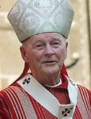
Cardinal Theodore E. McCarrick was ordained a priest of the Archdiocese of New York in 19591. Prior to his elevation to Bishop of Metuchen, McCarrick worked in various parishes within the
Archdiocese of New York and spent two years on “special assignment” at Catholic University in Puerto Rico.
In 1978, Cardinal McCarrick was elevated to Auxiliary Bishop of the Archdiocese of New York where he worked until 1981 when he was appointed as the founding bishop of the Diocese of Metuchen. In 1986, McCarrick was appointed Archbishop of Newark. In late 2000, Pope John Paul II appointed McCarrick Archbishop of Washington and he was elevated to Cardinal in 2001.
Pope Francis removed Cardinal McCarrick from ministry in June 2018 after allegations of sexual abuse surfaced against McCarrick. He was allowed to resign from his position in July 2018 and was suspended from public ministry. In February 2019, Cardinal McCarrick was removed from the clerical state at the conclusion of an internal Church adjudication process conducted by the Vatican’s Congregation for the Doctrine of the Faith.
Cardinal McCarrick is the highest ranking Catholic official to be removed from the priesthood because of allegations of child sexual abuse. To-date, at least three survivors of abuse have come forward alleging sexual abuse by McCarrick.
1 See p. 74 for a full assignment history of Cardinal McCarrick.
14 AndersonAdvocates.com • 908-859-2200

Map of the Archdiocese and Dioceses in New Jersey
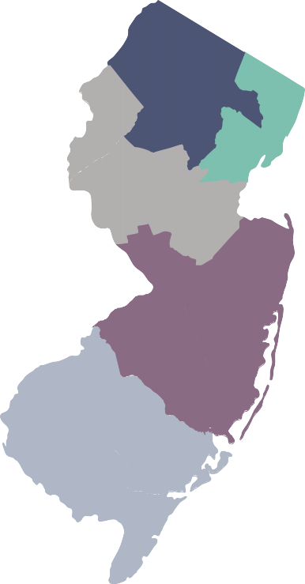
Archdiocese of Newark
Diocese of Metuchen
Diocese of Trenton
Diocese of Camden
AndersonAdvocates.com • 908-859-2200 15

16 AndersonAdvocates.com • 908-859-2200

Those Accused of Sexual Abuse in the Archdiocese and Dioceses of New Jersey
AndersonAdvocates.com • 908-859-2200 17

Fr. Ruben V. Abaya Ordained, 1977
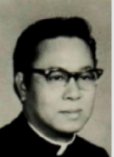
1977-1978 | Our Lady Help of Christians, East Orange, NJ (NEW) | 1980 | St. Philomena, Carson, CA (LA) |
1978-1980 | Holy Cross, Rumson, NJ (TR) | 1980-1983 | St. Mary’s, Perth Amboy, NJ (MET) |
1978-1980 | Holy Rosary, Rumson, NJ (TR) | 1983-2019 | Unknown |
Assignments Within the Archdiocese/Diocese(s) in New Jersey: Newark, Trenton, Metuchen Assignments:
Fr. Robert Alcamo Ordained, 1980
St. Raphael, Livingston, NJ (NEW) | 1985-2019 | Unknown | |
1982-1984 | The Assumption Church, Roselle Park, NJ (NEW) | ||
Assignments Within the Archdiocese/Diocese(s) in New Jersey: Newark Assignments:
Msgr. Jose Alonso (Alonzo) Ordained, 1968
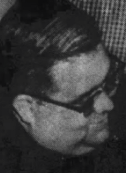
1969-1970 | St. Agnes’, Paterson, NJ (PAT) | 1974-1987 | Cathedral of St. John the Baptist, Paterson, NJ (PAT) |
1971 | Multi-Lingual Center, Social Service Department Paterson, NJ (PAT) | 1988-2003 | Absent on Leave (PAT) |
1972 | Cathedral of St. John the Baptist, Paterson, NJ (PAT) | 2003 | Died |
1973 | Our Lady of Victories, Paterson, NJ (PAT) | ||
Assignments Within the Archdiocese/Diocese(s) in New Jersey: Paterson Assignments:
Assignments Within the Archdiocese/Diocese(s) in New Jersey: Newark |
Assignments: |
Sister Andre was a member of the Dominican Sisters of Caldwell. At least one allegation of child sexual abuse was made against Sr. Andre. The sexual abuse allegedly occurred while Sr. Andre worked at St. Catherine’s of Siena Catholic Church in Hillside, New Jersey in the mid-1960s. Sr. Andre’s clerical status, locations she worked, and whether she has access to children are unknown. |
18 AndersonAdvocates.com • 908-859-2200

Fr. Romanilo (Romannilo, Nilo) S. Apura Ordained, 1975
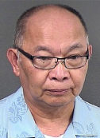
1975-1992 | Unknown | 2007-2008 | St. Ann, Keansburg, NJ (TR) |
1993-1995 | St. Joachim, Trenton, NJ (TR) | 2008-2012 | St. Mary Cathedral, Trenton, NJ (TR) |
1996-1998 | Unknown | 2014 | St. Martha, Point Pleasant, NJ (TR) |
1999-2004 | St. Maximilian Kolbe Church, Toms River, NJ (TR) | 2015-2016 | Leave of Absence (TR) |
2005 | Our Lady of Good Counsel, Moorestown, NJ (TR) | 2017-2019 | Unknown |
2006 | Unknown | ||
Assignments Within the Archdiocese/Diocese(s) in New Jersey: Trenton Assignments:
Fr. Edward Balestrieri, O.SS.T. Ordained, 1959

1959-1960 | Unknown | 1988-1989 | St. Mary, Shawneetown, IL (BEL) |
1961-1968 | Our Lady of Mt. Carmel, Asbury Park, NJ (TR) | 1990-1994 | St. Mary Magdalen, Todd’s Mill, IL (BEL) |
1969-1970 | St. James (Italian), Trenton, NJ (TR) | 1995 | Unknown |
1971 | Pikesville, MD (BAL) | 1996-1999 | St. Paul, Vienna, IL (BEL) |
1972 | St. Ann (Italian), Bristol, PA (PH) | 2000-2002 | St. Mary, Sesser, IL (BEL) |
1973-1978 | Our Lady of Mt. Carmel, Asbury Park, NJ (TR) | 2003-2006 | Leave of Absence (BEL) |
1979-1981 | St. Joseph, Marion, IL (BEL) | 2007-2012 | Retired (BEL) |
1982-1983 | Good Samaritan Hospital, Mount Vernon, IL (BEL) | 2012 | Died |
1984-1987 | St. Joseph, Cobden, IL (BEL) | ||
Assignments Within the Archdiocese/Diocese(s) in New Jersey: Trenton Assignments:
Fr. John M. Banko Ordained, 1972
1973-1974 | St. Mary of the Lake, Lakewood, NJ (TR) | 1990-1995 | St. Edward the Confessor Church, Milford, NJ (MET) |
1975-1980 | St. Pius X High School, Piscataway, NJ (TR) | 1996-2000 | Mary Mother of God, Hillsborough, NJ (MET) |
1981-1982 | St. John the Evangelist Church, Dunellen, NJ (TR)(MET) | 2001-2019 | Unknown |
1983-1989 | St. Charles Borromeo, Skillman, NJ (MET) | ||
Assignments Within the Archdiocese/Diocese(s) in New Jersey: Trenton, Metuchen Assignments:
AndersonAdvocates.com • 908-859-2200 19

Fr. Joseph Barber Ordained, 1961
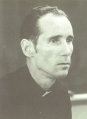
1961-1963 | Unknown | St. Mary, Cherry Hill, NJ (CAM) | |
1964 | Our Lady of Mt. Carmel, Berlin, NJ (CAM) | 1969-1971 | St. Edward, Pine Hill, NJ (CAM) |
St. Joseph’s High School, Camden, NJ (CAM) | 1972-1975 | Leave of Absence (CAM) | |
Camden Catholic High School, Cherry Hill, NJ (CAM) | 1975-2019 | Unknown |
Assignments Within the Archdiocese/Diocese(s) in New Jersey: Camden Assignments:
Fr. Michael L. Barber, S.J. Ordained, 1975
1968-1971 | Gonzaga College High School, Washington, DC | 1984-1987 | Unknown |
1975-1976 | St. Ignatius Church, Baltimore, MD | 1988-2001 | St. Joseph’s University, Philadelphia, PA |
1976-1978 | MedStar Georgetown University Hospital, Washington, DC | 2002 - 2009 | Wernersville, PA |
1978-1979 | Gonzaga College High School, Washington, DC | 2010 | Baltimore, MD |
1979-1983 | St. Peter’s University, Jersey City, NJ (NEW) | 2011-2019 | Unknown |
Assignments Within the Archdiocese/Diocese(s) in New Jersey: Newark Assignments:
Fr. George (Jorge) L. Batista Ordained, 1983
1984-1985 | St. Joseph of the Palisades, West New York, NJ (NEW) | 2000 | St. Joseph Church, Stuart, FL (PMB) |
1986-1987 | Our Lady of the Most Holy Rosary, Elizabeth, NJ (NEW); St. Michael, Elizabeth, NJ (NEW) | 2002 | St. Rita Church, Wellington, FL (PMB) |
1988 | Unknown | 2004-2006 | Retired (NEW) |
1989-1992 | St. Nicholas, Jersey City, NJ (NEW) | Blessed Sacrament, East Orange, NJ (NEW) | |
1993-1994 | St. Paul’s, Jersey City, NJ (NEW) | St. Augustine, Union City, NJ (NEW) | |
1995-2003 | On Duty Outside Diocese (NEW) | St. Anthony of Padua, Union City, NJ (NEW) | |
1995-1998 | St. Luke Church, Lake Worth, FL (PMB) | St. Aloysius, Newark, NJ (NEW) | |
1999-2000 | St. Sebastian Church, Sebastian, FL (PMB) | 2007-2019 | Unknown |
Assignments Within the Archdiocese/Diocese(s) in New Jersey: Newark Assignments:
20 AndersonAdvocates.com • 908-859-2200

Fr. Ronald R. Becker Ordained, 1973
1974-1985 | Incarnation, Trenton, NJ (TR) | 1991-2002 | St. Francis of Assisium, Trenton, NJ (TR) |
1986-1989 | Church of the Precious Blood, Monmouth Beach, NJ (TR) | 2003-2009 | Unknown |
1990 | Leave of Absence (TR) | 2009 | Died |
Assignments Within the Archdiocese/Diocese(s) in New Jersey: Trenton Assignments:
Fr. John F.X. Bellwoar, S.J. Ordained, 1933
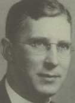
1934 | College of the Sacred Heart, Woodstock, MD (BAL) | 1941-1970 | Gonzaga College High School, Washington, D.C. (WDC) |
1935 | St. Andrew-on-Hudson, Poughkeepsie, NY (NY) | 1971-1978 | St. Patrick’s, Washington, D.C. (WDC) |
1936 | St. Peter’s College, Jersey City, NJ (NEW) | 1979-1991 | Gonzaga College High School, Washington, D.C. (WDC) |
1937-1938 | Fordham University, New York, NY (NY) | 1992-1994 | The Jesuit Community at Georgetown University, Washington, D.C. (WDC) |
1939-1940 | Church of the Gesu, Philadelphia, PA (PH) | 1993 | Died |
Assignments Within the Archdiocese/Diocese(s) in New Jersey: Newark Assignments:
Fr. Claude J. Bender Ordained, 1955
1956-1965 | Unknown | 1982-1984 | Our Lady of Lourdes, Glassboro, NJ (CAM) |
1966 | St. Anthony of Padua, Camden, NJ (NEW) | 1985 | St. Michael’s, Atlantic City, NJ (CAM) |
1967-1970 | St. Gregory’s, Magnolia, NJ (CAM) | 1986-1987 | Queen of the Apostles, Pennsville, NJ (CAM) |
1971 | Our Lady Star of the Sea, Cape May, NJ (CAM) | 1988 | St. Mary’s Nursing Home, Cherry Hill, NJ (CAM) |
1972-1974 | St. Michael’s, Gibbstown, NJ (CAM) | 1989 | St. Rose, Newfield, NJ (CAM) |
1975-1977 | St. Matthew, National Park, NJ (CAM) | 1990-1992 | On Sick Leave (CAM) |
1978 | St. Teresa, Runnemede, NJ (CAM) | 1991 | Vianney Villa, Cherry Hill, NJ (CAM) |
1979-1981 | St. Teresa of the Infant Jesus, Runnemede, NJ (CAM) | 1991 | Died |
Assignments Within the Archdiocese/Diocese(s) in New Jersey: Newark, Camden Assignments:
AndersonAdvocates.com • 908-859-2200 21

Fr. James T. Benedetto Ordained, 1970
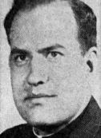
1971-1972 | Church of the Assumption, Emerson, NJ (NEW) | 2006 | Retired, The Rev. Msgr. James F. Kelley Residence for Retired Priests, Caldwell, NJ (NEW) |
1973-1974 | Our Lady of Lourdes, Mountainside, NJ (NEW) | 2007 | Unknown |
1975-1983 | St. Michael’s, Cranford, NJ (NEW) | 2008-2018 | Retired, The Rev. Msgr. James F. Kelley Residence for Retired Priests, Caldwell, NJ (NEW) |
1984-2005 | Unknown | 2019 | Unknown |
Assignments Within the Archdiocese/Diocese(s) in New Jersey: Newark Assignments:
Fr. John X. (F.) Bergeur Ordained, 1945
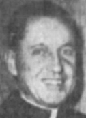
1946 | St. Anthony’s, Silver Lake, NJ (NEW) | 1983-1987 | Assignment Outside of Archdiocese, Groton Station, CT (NEW) |
1947-1948 | Holy Rosary, Jersey City, NJ (NEW) | 1988-1994 | Retired; 6017 Boynton Beach, FL |
1949-1953 | Sacred Heart, Lyndhurst, NJ (NEW) | 1995-2000 | Retired; St. John Vianney Residence for Priests, Rutherford, NJ (NEW) |
1954-1973 | Chaplain, U.S. Navy (NEW) | 2001 | Retired; Summit, NJ (NEW) |
1974-1976 | Our Lady of the Visitation, Paramus, NJ (NEW) | 2002-2005 | Retired; Allendale Nursing Home, Allendale, NJ (NEW) |
1977-1978 | On Duty Outside (NEW) | 2005 | Died |
1977-1982 | Damien Memorial High School, Honolulu, HI (HON) | ||
Assignments Within the Archdiocese/Diocese(s) in New Jersey: Newark Assignments:
Fr. John P. Bernard Ordained, 1962
1963 | Blessed Sacrament, Margate, NJ (CAM) | 1978-1992 | On Duty Outside the Diocese; V.A. Hospital Chaplain, Batavia, NY (CAM) |
1964-1969 | Assumption, Pomona, NJ (CAM) | 1993-2002 | Retired; 4327, Elba, NY (CAM) |
1970-1972 | St. Margaret’s, Woodbury Heights, NJ (CAM) | 1993-2002 | V.A. Hospital Chaplain, Batavia, NY (BUF) |
1973 | Holy Saviour, Westmont, NJ (CAM) | 2000-2002 | Retired; 4327, Elba, NY (BUF) |
1974-1977 | SS. Peter and Paul, Washington Township, NJ (CAM) | 2003-2019 | Unknown |
Assignments Within the Archdiocese/Diocese(s) in New Jersey: Camden Assignments:
22 AndersonAdvocates.com • 908-859-2200

Assignments Within the Archdiocese/Diocese(s) in New Jersey: Newark |
Assignments: |
Brother Richard Berryman, C.F.C, was a member of the Congregation of Christian Brothers. At least one allegation of child sexual abuse was made against Br. Berryman in the bankruptcy matter In re: The Christian Brothers’ Institute, et al. The sexual abuse allegedly occurred while Br. Berryman worked at Bergen Catholic High School in Oradell, NJ in the early 1960s. Br. Berryman’s clerical status, locations he worked, and whether he has access to children are unknown. |
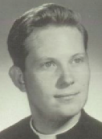
Fr. Henry S. (R. Henry) Blaszczynski Ordained, 1941
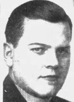
1942 | St. Cecilia’s, Pennsauken, NJ (CAM) | 1967-1968 | Corpus Christi, Carney’s Point, NJ (CAM) |
1943-1945 | St. Joseph’s, Camden, NJ (CAM) | 1969-1973 | St. Joan of Arc, Camden, NJ (CAM) |
1946-1947 | St. Rose’s, Haddon Heights, NJ (CAM) | 1974-1978 | St. Paul, Stone Harbor, NJ (CAM) |
1948-1952 | St. Mary Magdalen’s, Millville, NJ (CAM) | 1979-1981 | St. Lawrence’s, Lindenwold, NJ (CAM) |
1953 | Holy Name, Camden, NJ (CAM) | 1982-1987 | St. Joseph’s, Camden, NJ (CAM) |
1954 | St. Joseph’s, Somers Point, NJ (CAM) | 1986-1987 | St. Mary’s Nursing Home, Cherry Hill, NJ (CAM) |
1955-1963 | St. Matthew’s, National Park, NJ (CAM) | 1986 | Died |
1964-1966 | Epiphany, Longport, NJ (CAM) | ||
Assignments Within the Archdiocese/Diocese(s) in New Jersey: Camden Assignments:
Fr. John F. Bloh Ordained, 1964
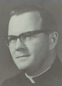
1965 | Our Lady Star of the Sea, Atlantic City, NJ (CAM) | 1979-1982 | St. Edward’s, Pine Hill, NJ (CAM) |
1966 | St. Bartholomew, Camden, NJ (CAM) | 1983-1992 | SS. Peter and Paul, Washington Twp., NJ (CAM) |
1967-1968 | St. Jude’s, Blackwood, NJ (CAM) | 1990-1992 | Camden Diocesan Center, Blackwood, NJ (CAM); Camden Diocesan Center, Sewell, NJ (CAM); Camden Diocesan Center, Vineland, NJ (CAM) |
1969-1970 | St. Cecilia’s, Pennsauken, NJ (CAM) | 1993-1999 | St. Joseph’s, Swedesboro, NJ (CAM) |
1971-1972 | St. Mary’s, Cherry Hill, NJ (CAM) | 2000-2002 | Retired; 805 Abbey Ct., Sicklerville, NJ (CAM) |
1973-1975 | Most Holy Redeemer, Westville Grove, NJ (CAM) | 2003-2019 | Unknown |
1976-1978 | Blackwood Catholic Center, Blackwood, NJ (CAM) | ||
Assignments Within the Archdiocese/Diocese(s) in New Jersey: Camden Assignments:
AndersonAdvocates.com • 908-859-2200 23

Fr. Marjan L. Bober Ordained, 1963

1964-1966 | St. Joseph’s, Camden, NJ (CAM) | 1983 | St. Gregory, Magnolia, NJ (CAM) |
1967-1968 | St. John’s, Collingswood, NJ (CAM) | 1986-1989 | St. John the Baptist, Camden, NJ (CAM) |
1969 | St. Joseph’s, Camden, NJ (CAM) | 1990- 2003 | Our Lady of the Lakes, Collings Lakes, NJ (CAM) |
1970-1973 | St. Cecilia’s, Pennsauken, NJ (CAM) | 2004-2005 | Retired; 791 Burman Lane, Melbourne, FL |
1974-1977 | Assumption, Atco, NJ (CAM) | 2006-2017 | Retired; 791 Burman Lane, Palm Bay, FL |
1978-1982 | SS. Peter and Paul, Washington Twp., NJ (CAM) | 2017 | Died |
Assignments Within the Archdiocese/Diocese(s) in New Jersey: Camden Assignments:
Fr. John D. Bohrer Ordained, 1978
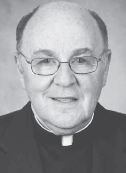
1979-1981 | St. Cecilia’s, Pennsauken, NJ (CAM) | 2000-2001 | Our Lady of the Pillar, Half Moon Bay, CA (SFR) |
1982-1985 | St. Pius X, Cherry Hill, NJ (CAM) | 2002-2003 | On Duty Outside the Diocese; Saint Gabriel, San Francisco, CA (CAM) |
1986 | On Duty Outside the Diocese; Our Lady of Sorrows, Las Vegas, NM (CAM) | 2004 | Unknown |
1987-1989 | St. Joseph’s Pro-Cathedral, Camden, NJ (CAM) | 2005-2008 | On Leave of Absence (CAM) |
1990 | Unknown | 2009-2010 | Unknown |
1991-1996 | St. Peter Celestine, Cherry Hill, NJ (CAM) | 2011-2018 | Blessed Teresa of Calcutta, Collingswood, NJ (CAM) |
1997-1999 | Our Lady of Lourdes, Glassboro, NJ (CAM) | 2019 | Unknown |
Assignments Within the Archdiocese/Diocese(s) in New Jersey: Camden Assignments:
Fr. Vincent J. Bonelli Ordained, 1956
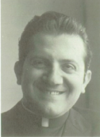
1957-1964 | St. Francis Xavier’s, Newark, NJ (NEW) | 1975 | Died |
1965-1975 | Notre Dame, North Caldwell, NJ (NEW) | ||
Assignments Within the Archdiocese/Diocese(s) in New Jersey: Newark Assignments:
24 AndersonAdvocates.com • 908-859-2200

Fr. John C. Bouton Ordained, 1949
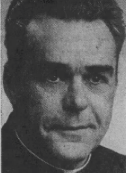
1950 | Our Lady of Peace, New Providence, NJ (NEW) | 1981-1987 | Retired (NEW) |
1951-1953 | Immaculate Conception, Secaucus (NEW) | 1983-1986 | Retired, 7 Pitcairn Rd., Livingston, NJ (NEW) |
1954-1982 | St. Aloysius’, Caldwell, NJ (NEW) | 1986 | Died |
Assignments Within the Archdiocese/Diocese(s) in New Jersey: Newark Assignments:
Fr. Charles V. Bradley Ordained, 1968
1969-1970 | St. John the Baptist, Paterson, NJ (PAT) | 1995 | Unknown |
1971-1976 | Vice Chancellor’s office; Holy Childhood Association; Propagation of the Faith, Paterson, NJ (PAT) | 1996-1997 | Absent on Leave |
1977-1992 | Paterson Catholic Regional High School, Paterson, NJ (PAT) | 1998-2010 | Unknown |
1993 | Bayley-Ellard High School, Madison, NJ (PAT) | 2011-2018 | Retired |
1994 | Unknown | 2019 | Unknown |
Assignments Within the Archdiocese/Diocese(s) in New Jersey: Paterson Assignments:
Fr. Joseph J. Brennan Ordained, 1944 of 1945
1945-1946 | St. Joseph’s Mission, Somers Point, NJ (CAM) | 1963-1966 | Absent on Sick Leave |
1945-1952 | St. Augustine’s, Ocean City, NJ (CAM) | 1966-1969 | St. Joan of Arc, Camden, NJ (CAM) |
1952-1954 | Our Lady of Lourdes Hospital, Camden, NJ (CAM) | 1969-1976 | St. Joseph’s, Swedesboro, NJ (CAM) |
1955-1963 | St. Maruice’s, Brooklawn, NJ (CAM) | 1976 | Died |
Assignments Within the Archdiocese/Diocese(s) in New Jersey: Camden Assignments:
Fr. Timothy J. Brennan, O.S.B. Ordained, 1978
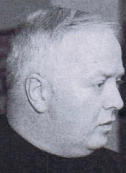
1979-1991 | St. Mary’s Abbey, Morristown, NJ (PAT) | 1996 - 2018 | St. Mary’s Abbey, Morristown, NJ (PAT) |
1992-1994 | St. Mary’s Abbey, Morristown, NJ (PAT); St. Mary’s of the Lake, Lakewood, NJ (TR) | 2019 | Unknown |
Assignments Within the Archdiocese/Diocese(s) in New Jersey: Paterson, Trenton Assignments:
AndersonAdvocates.com • 908-859-2200 25

Msgr. Richard C. Brietske, P.S.S. Ordained, 1962
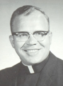
1963 | St. Charles College, Catonsville, MD (BAL) | 1993-1995 | St. Gregory the Great Church, Trenton, NJ (TR) |
1965-1966 | Our Lady of Perpetual Help, Maple Shade, NJ (TR) | 1996-2003 | Corpus Christi Church, Willingboro, NJ (TR) |
1967-1970 | St. Rose, Belmar, NJ (TR) | 2004-2007 | Corpus Christi Church, Willingboro, NJ (TR); Chancellor; Diocesan Finance Council; Building Commission |
1971-1977 | St. Thomas Aquinas High School, Edison, NJ (TR) | 2008-2012 | Building Commission; Retired (TR) |
1978-1982 | Monmouth College, Long Branch, NJ (TR) | 2013-2018 | Retired |
1983-1992 | Nativity Church, Fair Haven, NJ (TR) | ||
Assignments Within the Archdiocese/Diocese(s) in New Jersey: Trenton Assignments:
Fr. Gerard J. Brown Ordained, 1961
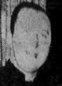
1962 | St. Francis, Metuchen, NJ (TR) | 1984-1987 | Corpus Christi Church, Willingboro, NJ (TR) |
1963-1964 | St. Anthony, Trenton, NJ (TR) | 1988-2009 | Leave of Absence (TR) |
1965-1966 | St. Michael, Long Branch, NJ (TR) | 2010-2013 | Unknown |
1967-1973 | Chaplain, Mount St. Mary’s Academy, North Plainfield, NJ (TR) | 2013 | Died |
1974-1983 | St. Mary of the Lake, Lakewood, NJ (TR) | ||
Assignments Within the Archdiocese/Diocese(s) in New Jersey: Trenton Assignments:
Fr. Francis “Frank” D. Bruno Ordained, 1974
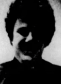
1975-1976 | Our Lady of Good Counsel, W. Trenton, NJ (TR) | 1987-1989 | St. Joachim, Trenton, NJ (TR) |
1977-1979 | St. Mary, New Monmouth, NJ (TR) | 1990-1992 | Leave of Absence |
1980 | St. James, Woodbridge, NJ (TR) | 1993-2019 | Unknown |
1981-1986 | St. Martha, Point Pleasant, NJ (TR) | ||
Assignments Within the Archdiocese/Diocese(s) in New Jersey: Trenton Assignments:
26 AndersonAdvocates.com • 908-859-2200

Br. William Michael Burke, S.D.B Ordained, 1993
1994-1997 | Unknown | 1999-2009 | Don Bosco Retreat Center and Marian Shrine, Stony Point, NY (NY) |
1998 | Don Bosco Retreat Center and Marian Shrine, West Haverstraw, NY (NY) | 1999-2005 | Marian Shrine, Stony Point, NY (NY) |
1998 | Marian Shrine, West Haverstraw, NY (NY) | 2010-2019 | Unknown |
Early 200s | Burke sent to New Jersey from Florida by the Salesian Order | ||
Assignments Within the Archdiocese/Diocese(s) in New Jersey: Unknown, Sent to New Jersey by the Salesian Order Assignments:
Fr. Michael J. Burns Ordained, 1973
1974-1977 | Sacred Heart, Trenton, NJ (TR) | 1991-2017 | St. Mary’s Church, Bordentown, NJ (TR) |
1978 | St. Francis of Assisium, Trenton, NJ (TR) | 2018 | Retired |
1979-1986 | St. Paul’s Church, Burlington, NJ (TR) | 2019 | Unknown |
1987-1990 | St. Hedwig’s, Trenton, NJ (TR) | ||
Assignments Within the Archdiocese/Diocese(s) in New Jersey: Trenton Assignments:
Fr. Charles J. (C. Jeffries) Burton, S.J. Ordained, 1967
1968 | College of the Sacred Heart, Woodstock, MD (BAL) | 1993-1998 | St. Peter, Pleasantville, NJ (CAM) |
1969-1970 | Colegio San Mateo, Osorno, Chile (MDProv) | 1999-2002 | St. James, Ventor, NJ (CAM) |
1971-1978 | Chapel of the Holy Redeemer, Hot Springs, NC (R) | 2003-2006 | Assumption Parish, Pomona, NJ (CAM) |
1979-1982 | Youth Ministries, Flat Rock, NC (CHL) | 2007 | Unknown |
1980 | Self-Help, Inc., Baltimore, MD (BAL) | 2008 | Jesuit Fathers and Brother Maryland Provincial Curia, Baltimore, MD (BAL) |
1983-1988 | Holy Name, Camden, NJ (CAM) | 2009-2010 | Colombiere Jesuit Community, Baltimore, MD (BAL) |
1989-1991 | Jesuit Ferdinand Wheeler House, Baltimore, MD (BAL) | 2011 | Died |
1990-1994 | Holy Spirit, Atlantic City, NJ (CAM); Camden Diocesan Center, Mays Landing, NJ (CAM) Stockton State College; Pomona, NJ, (CAM) | ||
Assignments Within the Archdiocese/Diocese(s) in New Jersey: Camden Assignments:
AndersonAdvocates.com • 908-859-2200 27

Fr. John R. Butler Ordained, 1957
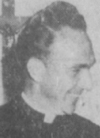
1958 | Cathedral of the Sacred Heart, Richmond, VA (RIC) | 1975 | St. Barnabas, Bayville, NJ (TR) |
1959-1960 | St. Mary’s Star of the Sea, Fort Monroe, VA (RIC) | 1976-1978 | St. Thomas, Old Bridge, NJ (TR) |
1961 | St. Peter, Richmond, VA (RIC) | 1979 | St. Robert Bellarmine, Freehold, NJ (TR) |
1962-1965 | St. Joseph, Kings Park, Long Island, NY (RVC) | 1980 | Unknown |
1966 | Unknown | 1981 | St. John Vianney, Colonia, NJ (TR) |
1967-1968 | On Duty Outside Diocese (RIC) | 1982-1984 | St. John Vianney, Colonia, NJ (MET) |
1969 | Assumption, Keyser, WV (RIC) | 1985-1986 | Unknown |
1970 | St. Paul, Richmond, VA (RIC) | 1987-2002 | St. John Vianney, Colonia, NJ (MET) |
1971-1974 | SS. Philip and James, Phillipsburg, NJ (TR) | 2003-2019 | Unknown |
Assignments Within the Archdiocese/Diocese(s) in New Jersey: Metuchen, Trenton Assignments:
Fr. Michael G. Campanalonga Ordained, 1962
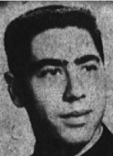
1962-1965 | St. Philomena, Livingston, NJ (NEW) | 1983 | Archdiocesan Co-Directors, Montclair, NJ (NEW) |
1966-1973 | St. Anthony, Northvale, NJ (NEW) | 1984-1991 | Farleigh Dickinson University, Rutherford, NJ (NEW) |
1974-1981 | Holy Rosary Academy High School, Union City, NJ (NEW) | 1991 | Absent on Sabbatical Leave |
1982 | Jersey City State College, Jersey City, NJ (NEW) | 1992-2019 | Unknown |
Assignments Within the Archdiocese/Diocese(s) in New Jersey: Newark Assignments:
Fr. William B. Cannon Ordained, 1954
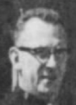
1955-1958 | St. Peter’s, Pleasantville, NJ (CAM) | 1975-1979 | Queen of Heaven, Cherry Hill, NJ (CAM) |
1959 | On Duty Outside of Diocese (CAM) Society of San Sulpice, Puerto Rico | 1980 | St. Martin de Porres, Hammonton, NJ (CAM) |
1960-1964 | Holy Name, Camden, NJ (CAM) | 1981-1993 | Christ the King, Haddonfield, NJ (CAM) |
1965-1966 | St. Michael, Minotola (Buena Burough), NJ (CAM) | 1994-1997 | St. Pius X, Cherry Hill, NJ (CAM) |
1967-1971 | St. Vincent de Paul, Mays Landing, NJ (CAM) | 1998 | Died |
1972-1974 | Immaculate Heart of Mary, Woodlynne, NJ (CAM) | ||
Assignments Within the Archdiocese/Diocese(s) in New Jersey: Camden Assignments:
28 AndersonAdvocates.com • 908-859-2200

Fr. Justin J. Capato, O.S.B. Ordained, 1980
1981-1985 | St. Mary’s Abbey, Morristown, NJ (PAT) | 1994-2018 | St. Mary’s Abbey, Morristown, NJ (PAT) |
1987-1988 | St. Mary’s Abbey, Clifton, NJ (PAT) | 1996 | St. Mary’s Abbey Retreat Center, Morristown, NJ (PAT) |
1989 | St. Thomas More, Chapel Hill, NC (R) | 2000-2011 | Notre Dame of Mt. Carmel, Cedar Knolls, NJ (PAT) |
1990-1993 | Unknown | 2019 | Unknown |
Assignments Within the Archdiocese/Diocese(s) in New Jersey: Paterson Assignments:
Fr. John M. Capparelli Ordained, 1980
1981 | Unknown | 1989-1991 | Unknown |
1982 | Our Lady of Fatima, North Bergen, NJ (NEW) | 1992 | Our Lady of Mount Carmel, Ridgewood, NJ (NEW); Ridgewood Valley Hospital, Ridgewood, NJ (NEW) |
1983-1985 | The Oratory Catholic Preparatory School, Summit, NJ (NEW) | 1993-2018 | Unknown |
1986-1988 | Holy Trinity, Westfield, NJ (NEW) | 2019 | Died |
Assignments Within the Archdiocese/Diocese(s) in New Jersey: Newark Assignments:
Fr. James A. Carey Ordained, 1936
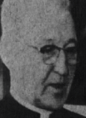
1937 | Christ the King, Jersey City, NJ (NEW) | 1957-1958 | Immaculate Conception, Montclair, NJ (NEW) |
1938-1942 | Seton Hall College, So. Orange, NJ (NEW) | 1959-1960 | The Oratory College Prep School, Summit, NJ (NEW) |
1943-1945 | U.S. Army Chaplain (NEW) | 1961-1962 | Seton Hall University, So. Orange, NJ (NEW) |
1946 | Unknown | 1963-1968 | St. Michael, Jersey City, NJ (NEW) |
1947-1955 | Seton Hall College, So. Orange, NJ (NEW) | 1968 | Died |
1956 | St. Mary’s Hospital, Orange, NJ (NEW) | ||
Assignments Within the Archdiocese/Diocese(s) in New Jersey: Newark Assignments:
AndersonAdvocates.com • 908-859-2200 29

Fr. Cornelius “Neil” Carr, S.J. Ordained, 1951
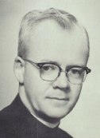
1952 | Weston College, Weston, MA (BO) | 1981-1984 | Xavier High School, New York City, NY (NY) |
1953 | Tertianship, Aurlcsviile, NY (ALB) | 1985-1993 | Canisius High School, Buffalo, NY (BUF) |
1954 | Canisius High School, Buffalo, NY (BUF) | 1994 | Unknown |
1955-1961 | St. Peter’s College High School, Jersey City, NJ (NEW) | 1995-1996 | Novitiate of St. Isaac Jogues, Wernersvile, PA (ALN); Jesuit Retreat House, Oshkosh, WI (GB) |
1962-1964 | McQuaid Jesuit High School, Rochester, NY (ROC) | 1997-1999 | Jesuit Retreat House, Oshkosh, WI (GB) |
1965 | Canisius College, Buffalo, NY (BUF) | 2000-2001 | St. Michael, Buffalo, NY (BUF) |
1966-1971 | Jesuit Provincial Residence, Syracuse, NY (SY) | 2002-2005 | Christ the King, Jacksonville, FL (STA) |
1972 | Colegio San Ignacio, Rio Piedras, P.R. (NYProv) | 2006 | Unknown |
1973-1976 | 1180 Delaware Ave., Buffalo, NY (BUF) | 2007-2012 | Murray-Weigel Hall, New York, NY (NY) |
1977-1978 | Community of St. John the Evangelist, New Orleans, LA (NO) | 2013 | Died |
1979-1980 | Unknown | ||
Assignments Within the Archdiocese/Diocese(s) in New Jersey: Newark Assignments:
Fr. John J. Casey Ordained, 1984 (1989)
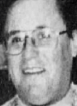
1985-1986 | SS Philip and James, Phillipsburg, NJ (MET) | 1992-2005 | St. Joseph, North Plainfield, NJ (MET) |
1987-1988 | St. Peter, New Brunswick, NJ (MET) | 2006-2007 | Unknown |
1989-1991 | St. Francis Cathedral Church, Metuchen, NJ (MET) | 2008 | Died |
Assignments Within the Archdiocese/Diocese(s) in New Jersey: Metuchen Assignments:
Fr. Michael J. Cashman (Casman) Ordained, 1975
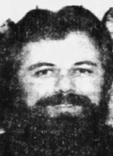
1975-1979 | St. Ambrose, Old Bridge, NJ (TR) | 1984-1995 | Sacred Heart, New Brunswick, NJ (MET) |
1980 | Our Lady of Good Counsel, Trenton, NJ (TR) | 1996-2003 | St. James, Woodbridge, NJ (MET) |
1981-1983 | Immaculate Conception, Spotswood, NJ (TR) | 2004-2019 | Unknown |
Assignments Within the Archdiocese/Diocese(s) in New Jersey: Trenton, Metuchen Assignments:
30 AndersonAdvocates.com • 908-859-2200

Fr. Robert H. (M.) Chabak Ordained, 1972
1973-1979 | St. Mary of the Assumption, Elizabeth, NJ (NEW) | 2004 | North Essex Deanery (NEW), St. Valentine, Bloomfield, NJ (NEW) |
1980-1988 | Christ the King, Hillside, NJ (NEW) | 2005-2006 | St. Valentine, Bloomfield, NJ (NEW) |
1989 | Absent on Sabbatical Leave | 2007-2008 | Unknown |
1990-1997 | SS. Peter and Paul’s Church, Hoboken, NJ (NEW) | 2009-2017 | Retired - Normandy Beach, NJ |
1992 | SS. Peter and Paul’s Church, Hoboken, NJ (NEW); Stevens Institute of Technology, Hoboken, NJ (NEW); Newman Center, Hoboken, NJ (NEW); NJ Archdiocesan Campus Ministry (NEW) | 2018-2019 | Unknown |
1998-2006 | St. Valentine, Bloomfield, NJ (NEW) | ||
Assignments Within the Archdiocese/Diocese(s) in New Jersey: Newark Assignments:
Assignments Within the Archdiocese/Diocese(s) in New Jersey: Newark |
Notes: |
Brother John B. Chaney arrived at Bergen Catholic High School in Oradell, New Jersey in approximately 1965 and was appointed as the Junior Guidance Director. In this role, he sexually abused at least three children. Br. Chaney was later moved to All Hallows High School in Bronx, New York in the 1980s where he sexually abused at least one child. His clerical status, current whereabouts and whether he has access to children are unknown. |
Fr. Peter A. Cheplic Ordained, 1972
1973-1985 | St. Matthew, Ridgefield, NJ (NEW) | 2003 | Unknown |
1986-1990 | Holy Spirit, Our Lady Help of Christians, East Orange, NJ (NEW) | 2004-2005 | St. Henry, Bayonne, NJ (NEW) |
1990 | Holy Spirit & Our Lady Help of Christians, East Orange, NJ (NEW); St. Joseph of the Palisades, West New York, NJ (NEW) | 2006-2007 | Unknown |
1990-1993 | St. Joseph of the Palisades, West New York, NJ (NEW) | 2008-2017 | Retired - John Vianney Residence for Priests, Rutherford, NJ (NEW) |
1994-2002 | St. Aloysius, Jersey City, NJ (NEW) | 2018-2019 | Unknown |
Assignments Within the Archdiocese/Diocese(s) in New Jersey: Newark Assignments:
Fr. Gerald P. Clements Ordained, 1970
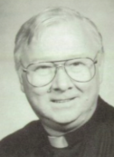
1970-1974 | Our Lady of Mount Carmel, Berlin, NJ (CAM) | 1994-1996 | St. Joseph, Camden, NJ (CAM) |
1975-1976 | Holy Redeemer, Westfield Grove, NJ (CAM) | 1996 | St. Joseph, Camden, NJ (CAM); Saint Mary’s Nursing Home, Cherry Hill, NJ (CAM); Vianney Villa, Cherry Hill, NJ (CAM) |
1977-1984 | Hoy Savior, Westmont, NJ (CAM) | 1997-2000 | Unknown |
1985- | St. Peter, Merchantville, NJ (CAM) | 2001-2002 | St. Mary’s Nursing Home, Cherry Hill, NJ (CAM); Vianney Villa, Cherry Hill, NJ (CAM) |
1990-1993 | St. Peter, Merchantville, NJ (CAM); Camden Catholic High School, Cherry Hill, NJ (CAM) | 2003-2019 | Unknown |
Assignments Within the Archdiocese/Diocese(s) in New Jersey: Camden Assignments:
AndersonAdvocates.com • 908-859-2200 31

Br. Robert “Edmund” Coakley, O.F.M.
Assignments Within the Archdiocese/Diocese(s) in New Jersey: Newark |
Assignments: |
Br. Robert “Edmund” Coakley, O.F.M., was a member of the Franciscan Friars. He also worked as a Scoutmaster in the Boy Scouts of America within the Archdiocese of Newark. In 1978, two brothers, aged 14 and 11, accused Br. Coakley of sexually abusing them while working as their Scoutmaster. In 1980, the family of the boys filed a lawsuit against Br. Coakley, the Boy Scouts of America, and the Archdiocese of Newark, but the case was later dismissed. Br. Coakely’s name appeared in the Perversion Files released by the Boy Scouts of America in 2012. Br. Coakley reportedly died in 1988. |
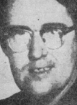
Fr. Dennis E. Cocozza Ordained, 1975
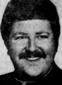
1976-1981 | St. Cassian, Upper Montclair, NJ (NEW) | 1995 | St. Anthony, Newark, NJ (NEW) |
1982-1986 | Regional Paramus Catholic Boys High School, Paramus, NJ (NEW) | 1996-1998 | St. Anthony, Belleville, NJ (NEW) |
1987 | San Damiano Friary, Rochelle Park, NJ (NEW) | 1999-2003 | Assumption, Roselle Park, NJ (NEW) |
1988 | Unknown | 2004-2011 | Unknown |
1989-1992 | St. Mary, Dumont, NJ, (NEW) | 2012 | Absent on Leave |
1993 | St. Henry, Bayonne, NJ (NEW) | 2013-2017 | Retired - Lavallette, NJ |
1994 | St. Anthony, Belleville, NJ (NEW) | 2018-2019 | Unknown |
Assignments Within the Archdiocese/Diocese(s) in New Jersey: Newark Assignments:
Fr. Raymond L. Cole Ordained, 1972
1973 | On Leave, Trenton, NJ (TR) | 1983-2002 | St. Joseph, East Millstone, NJ (MET) |
1974 | Our Lady of Perpetual Help, Bernardsville, NJ (TR) | 2003-2014 | St. Joseph, Hillsborough, NJ (MET) |
1975-1977 | Our Lady of Perpetual Help (TR) | 2015-2017 | On Duty Outside the Diocese (MET) |
1978-1982 | St. Mary, South Amboy, NJ (TR) | 2018-2019 | Unknown |
Assignments Within the Archdiocese/Diocese(s) in New Jersey: Trenton, Metuchen Assignments:
Deacon Charles Comito Ordained, 1998
Assignments Within the Archdiocese/Diocese(s) in New Jersey: Trenton |
Assignments: |
St. Theresa, Tuckerton, NJ (TR) |
32 AndersonAdvocates.com • 908-859-2200

Fr. Norman T. Connelly Ordained, 1965
1966-1967 | Immaculate Conception Cathedral, Camden, NJ (CAM) | 1988-1989 | St. Joseph, Woodstown, NJ (CAM) |
1968-1972 | St. Peter, Merchantville, NJ (CAM) | 1990-1992 | St. Joseph, Woodstown, NJ (CAM); St. James High School, Carneys Point, NJ (CAM) |
1973-1974 | St. Patrick, Woodbury, NJ (CAM) | 1993 | On duty outside of the Diocese - Epiphany Cathedral, Venice, FL (VEN) |
1975-1981 | St. Michael, Gibbstown, NJ (CAM) | 1994-2019 | Unknown |
1982-1987 | St. John, Paulsboro, NJ (CAM) | ||
Assignments Within the Archdiocese/Diocese(s) in New Jersey: Camden Assignments:
Fr. John P. (H.) Connor Ordained, 1962
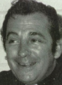
1963-1965 | Unknown | 1989-1994 | On Duty Outside Diocese (CAM); St. Matthew Church, Conshohocken, PA (PH) |
1966 | St. Mary, Gloucester, NJ (CAM) | 1995-2001 | Immaculate Conception, Bridgeton, NJ (CAM) |
1967-1972 | St. Rose, Haddon Heights, NJ (CAM) | 2002 | Teresa of Avila, Bridgeton, NJ (CAM) |
1973-1985 | St. John, Collingswood, NJ (CAM) | 2003 | St. Rose of Lima, East Hanover, NJ (PAT) |
1986-1988 | Unknown | 2004-2019 | Unknown |
Assignments Within the Archdiocese/Diocese(s) in New Jersey: Camden, Paterson Assignments:
Fr. Eugene D. Corbesero, I.M.C. Ordained, 1962
1962-1963 | Our Lady of Sorrows, Grand Rapids, MI (GR) | 1973-1976 | Our Lady of Consolation, Charlotte, NC; St. Dorothy, Lincolnton, NC (CHL) |
1963-1972 | Consolata Society for Foreign Missions, Somerset, NJ (TR) | 1976-1978 | St. Lawrence, Centredale, RI (PRO) |
1972-1973 | 1 Glenn St. Milford, CT (HRT) | 1979-2019 | Unknown |
Assignments Within the Archdiocese/Diocese(s) in New Jersey: Trenton Assignments:
Fr. George A. Costigan Ordained, 1974
1974 | St. Cecilia, Rockaway, NJ (PAT) | 2007 | Retired- Auxiliary Chaplains Contract Chaplains (MO) |
1975-1992 | Dover General Hospital, Dover, NJ (PAT) | 2008-2015 | Retired- Mount Arlington, NJ |
1993-2006 | Retired- St. Francis Convent, Mount Arlington, NJ (PAT) | 2016-2019 | Unknown |
Assignments Within the Archdiocese/Diocese(s) in New Jersey: Paterson Assignments:
AndersonAdvocates.com • 908-859-2200 33

Fr. Absalom Coutinho Ordained, 1972
1973-1979 | Unknown | 1999 | Unassigned (PAT) |
1980-1988 | St. Jude, Budd Lake, NJ (PAT) | 2000-2002 | On Duty Outside Diocese (PAT); Holy Cross, Palmetto, FL (VEN) |
1989 | Our Lady of St. Carmel, Boonton, NJ (PAT) | 2003-2006 | Absent on Leave (PAT) |
1990-1996 | Immaculate Heart of Mary, Wayne, NJ (PAT) | 2007-2008 | Retired - Bradenton, FL |
1997-1998 | Annunciation, Wayne, NJ (PAT) | 2009-2019 | Unknown |
Assignments Within the Archdiocese/Diocese(s) in New Jersey: Paterson Assignments:
Fr. William N. (F.) Cramer Ordained, 1977
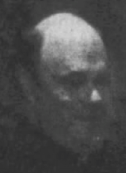
1978 | Unknown | 1993-2006 | St. Joseph Hospital, Paterson, NJ (PAT) |
1979-1986 | Our Lady of the Lake, Sparta, NJ (PAT) | 2006-2017 | Absent on Leave (PAT) |
1987-1992 | Absent on Leave (PAT) | 2018-2019 | Unknown |
Assignments Within the Archdiocese/Diocese(s) in New Jersey: Paterson Assignments:
Fr. Arturo Crespo Ordained, 1994
1995-1996 | St. Theresa, Summit, NJ (NEW) | 1997-2019 | Unknown |
Assignments Within the Archdiocese/Diocese(s) in New Jersey: Newark Assignments:
Fr. William S. Crouse (Crause), F.S.C.J. Ordained, 1959
1960-1966 | Unknown | 1990-2002 | Blessed Kateri Tekakwitha Church, Penns Valley, PA (ALT); PA State Correctional Institution, Rockview, PA (ALT) |
1967-1971 | Sons of the Sacred Heart, Montclair, NJ (NEW) | 2003 | PA State Correctional Institution, Rockview, PA (ALT); Retired (ALT) |
1972-1977 | US Army (PRO) | 2004-2007 | Retired, Shirleysburg, PA (ALT) |
1978-1979 | Immaculate Conception (St. Mary’s), Altoona, PA (ALT) | 2008-2008 | Unknown |
1980-1988 | St. John the Evangelist, Bellefonte, PA (ALT) | 2009 | Died |
1989 | Blessed Kateri Tekakwitha, Penns Valley, PA (ALT) | ||
Assignments Within the Archdiocese/Diocese(s) in New Jersey: Newark Assignments:
34 AndersonAdvocates.com • 908-859-2200

Br. John H. Dagwell, C.F.X. Ordained, Unknown
Assignments Within the Archdiocese/Diocese(s) in New Jersey: Newark |
Assignments: |
Br. John H. Dagwell, C.F.X, was a member of the Congregation of Xaverian Brothers. In 1988, Fr. Dagwell pleaded guilty to sexually abusing a 15-year-old student in 1986 while teaching at the Montvale parochial school in Montvale, NJ. Fr. Dagwell was sentenced to probation and was subsequently transferred to Milton, MA. From 1989 to 1992, Br. Dagwell worked at St. Francis House shelter in Boston, MA until residents started to complain of unwanted hugging and kissing by Br. Dagwell, forcing him to resign. In 1995, Br. Dagwell worked at Crossroads Family Shelter in East Boston, run by the Most Holy Redeemer parish. Br. Dagwell was fired two months later after Crossroads learned of his past allegations. Br. Dagwell reportedly left the Congregation of Xaverian Brothers in 2002. Br. Dagwell’s whereabouts and whether he has access to children are unknown. |
Fr. Paul Daleo, O.F.M.Cap. Ordained, 1977
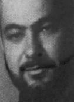
1978 | St. Mary’s Hospital, Passaic, NJ (PAT) | 1994 | Unknown |
1979-1985 | Capuchin Franciscan Friars St. Francis Renewal Center, Wilmington, DE (WIL) | 1995-2004 | Capuchin Friars Province Stigmata of St. Francis, Union City, NJ (NEW) |
1986-1993 | Mt. Carmel, Passaic, NJ (PAT) | 2004-2019 | Unknown |
Assignments Within the Archdiocese/Diocese(s) in New Jersey: Paterson, Newark Assignments:
Fr. Michael H. D’Amico Ordained, 1964
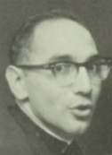
1965-1967 | St. Michael, Atlantic City, NJ (CAM) | 1995-1996 | St. Francis Cabrini, Ocean City, NJ (CAM) |
1968-1972 | Unknown | 1997-2004 | St. Michael, Ocean City, NJ (CAM) |
1973-1974 | St. Michael, Atlantic City, NJ (CAM) | 2005-2009 | Unknown |
1975-1988 | St. Francis Cabrini, Ocean City, NJ (CAM) | 2010 | Died |
1989-1994 | St. Francis Cabrini, Ocean City, NJ (CAM); Holy Spirit High School, Absecon, NJ (CAM) | ||
Assignments Within the Archdiocese/Diocese(s) in New Jersey: Camden Assignments:
AndersonAdvocates.com • 908-859-2200 35

Fr. Charles J. Davis Ordained, 1962
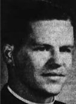
1963-1964 | St. Luke, Camden, NJ (CAM) | 1977-1979 | Chaplain USAF; Ft. Benning, GA (CAM) |
1965 | St. Agnes, Camden, NJ (CAM) | 1980-1983 | U.S. Army (CAM) |
1966 | On Duty Outside the Diocese; Trenton, NJ (CAM) | 1984-1992 | Military Chaplain; U.S. Army (CAM) |
1967 | On Duty Outside the Diocese; Brazil (CAM) | 1993-1996 | On Duty Outside the Diocese; Freeport, FL (CAM) |
1968-1970 | Chaplain U.S. Army (CAM) | 1997-1999 | On Duty Outside the Diocese; Woodsville, NH (CAM) |
1971 | Leave of Absence (CAM) | 2000-2002 | Retired, Woodsville, NH (CAM) |
1972 | St. Mary, Camden, NJ (CAM) | 2003-2005 | Retired, Bath, NH (CAM) |
1973-1974 | Immaculate Heart of Mary, Camden, NJ (CAM) | 2006-2019 | Unknown |
1975-1976 | Graduate Studies; Ft. Benning, GA (CAM) | ||
Assignments Within the Archdiocese/Diocese(s) in New Jersey: Camden Assignments:
Fr. Hadmels R. Defrias Ordained, 1999
2000-2002 | Mary of the Assumption, Elizabeth, NJ (NEW) | 2003-2019 | Unknown |
Assignments Within the Archdiocese/Diocese(s) in New Jersey: Newark Assignments:
Deacon Kenneth Demarest Ordained, 1976
St. Joseph, Swedesboro, NJ (CAM) | St. Joseph, Woodstown, NJ (CAM) |
Assignments Within the Archdiocese/Diocese(s) in New Jersey: Camden Assignments:
36 AndersonAdvocates.com • 908-859-2200

Fr. Francis X. Dennehy Ordained, 1950
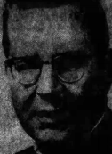
1951-1954 | Our Lady of Victories, Paterson, NJ (PAT) | 1980-1981 | St. Christopher, Parsippany, NJ (PAT) |
1955 | Cap. U.S. Navy (PAT) | 1982-1983 | Immaculate Conception, Franklin, NJ (PAT) |
1956-1959 | Assumption of the Blessed Virgin Mary, Morristown, NJ (PAT) | 1984-1986 | On Duty Outside the Diocese (PAT); Cathedral of Our Lady of Peace, Honolulu, HI (HON) |
1960-1964 | St. Joseph’s Hospital, Paterson, NJ (PAT) | 1987-1988 | Chilton Memorial Hospital, Pompton Plains, NJ (PAT) |
1965-1966 | St. Nicholas, Passaic, NJ (PAT) | 1989-1992 | Unassigned (PAT) |
1967-1971 | St. Vincent de Paul, Stirling, NJ (PAT) | 1993-1995 | Retired; Clifton, NJ (PAT) |
1972 | St. Therese, Paterson, NJ (PAT) | 1995 | Died |
1973-1979 | St. Pius X, Montville, NJ (PAT) | ||
Assignments Within the Archdiocese/Diocese(s) in New Jersey: Paterson Assignments:
Fr. Thomas F. Denny, S.J. Ordained, Unknown
1969 | Fordham University Murray-Weigel Hall, Bronx, NY (NY) | 1987-1992 | St. Peter’s Prep, Jersey City, NJ (NEW) |
1970 | Nativity, New York, NY (NY); Xavier High School, New York, NY (NY) | 1993 | Unknown |
1971-1975 | Xavier High School, New York, NY (NY) | 1994-1995 | Cansius High School, Buffalo, NY (BUF) |
1976-1977 | Fordham Prep, Bronx, NY (NY) | 1996-1997 | St. Peter’s Prep, Jersey City, NJ (NEW) |
1978 | Jesuit Community at Fordham University, Bronx, NY (NY) | 1998-2000 | Foreign Missions; Philippines (FgM) |
1979 | McQuaid Jesuit High School, Rochester, NY (ROC) | 2000-2012 | St. Ignatius Loyola Residence, New York, NY (NY) |
1980-1981 | Jesuit Provincial’s Office, New York, NY (NY) | 2013-2019 | Unknown |
1982-1989 | San Ignacio de Loyola, Rio Pedras, P.R. (SJN) | ||
Assignments Within the Archdiocese/Diocese(s) in New Jersey: Newark Assignments:
Fr. Edward M. DePaoli Ordained, 1970
1971-1975 | Our Lady of Mt. Carmel, Doylestown, PA (PH) | 1994-1996 | Absent on Leave (PH) |
1976-1979 | Mother of Divine Providence, King of Prussia, PA (PH) | 1997 | Unknown |
1980 | St. Albert the Great, Huntingdon Valley, PA (PH) | 1998-2002 | Absent on Leave (PH) |
1981-1985 | Holy Martyrs, Oreland, PA (PH) | 2003 | Absent on Leave (PH); St. Gabriel of the Sorrowful Mother, Stowe, PA (PH) |
1986-1988 | Unknown | 2004 | Absent on Leave (PH) |
1989-1991 | St. John Vianney, Colonia, NJ (MET) | 2005-2019 | Unknown |
1992-1993 | St. John the Baptist, Philadelphia, PA (PH) | ||
Assignments Within the Archdiocese/Diocese(s) in New Jersey: Metuchen Assignments:
AndersonAdvocates.com • 908-859-2200 37

Fr. John Henry Dericks (Derricks) Ordained, 1941
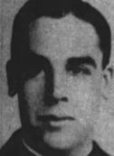
1942-1954 | St. Joseph, Paterson, NJ (PAT) | 1987-2010 | Retired; Andover, NJ (PAT) |
1955-1966 | Holy Spirit, Pequannock, NJ (PAT) | 2010 | Died |
1967-1986 | Assumption of the Blessed Virgin Mary, Morristown, NJ (PAT) | ||
Assignments Within the Archdiocese/Diocese(s) in New Jersey: Paterson Assignments:
Fr. Benjamin R. Dino Ordained, 1964
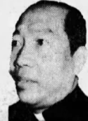
1965-1978 | Unknown | 1989-1993 | St. Clement, Matawan, NJ (TR) |
1979-1987 | St. Ann, Keansburg, NJ (TR) | 1994 | St. Patrick, McEwen, TN (NSH); St. Elizabeth Ann Seton, Tennessee Ridge, TN (NSH) |
1988 | Unknown | 1995-2019 | Unknown |
Assignments Within the Archdiocese/Diocese(s) in New Jersey: Trenton Assignments:
Fr. Joseph B. DiPeri, S.M. Ordained, 1956
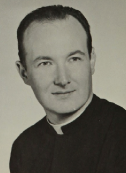
1957 | Unknown | 1981 | Unknown |
1958-1960 | Mt. Carmel, Jersey City, NJ (NEW) | 1982 | St. Cecilia’s Regional High School, Englewood, NJ (NEW) |
1961-1962 | St. Anthony, Belleville, NJ (NEW) | 1983-1997 | Unknown |
1963-1967 | St. Lucy, Newark, NJ (NEW) | 1998-2005 | Retired; Lakehurst, NJ (NEW) |
1968-1974 | Oratory School, Summit, NJ (NEW) | 2006 | Retired; Manchester Township, NJ (NEW) |
1975-1980 | Oratory Prep, Summit, NJ (NEW) | 2007 | Retired; Died |
Assignments Within the Archdiocese/Diocese(s) in New Jersey: Newark Assignments:
Fr. Andrew Dittrich, S.J. Ordained, 1960
1961 | Woodstock College, Woodstock, MD (BAL) | 1976-1978 | Provincialate, New York, NY (NY) |
1962-1966 | Unknown | 1979-1990 | Jesuit Provincial’s Office, New York, NY (NY) |
1967-1973 | Manila Philippines (NYPROV) | 1991-2019 | Unknown |
1974-1975 | Rutgers University, New Brunswick, NJ (TR) | ||
Assignments Within the Archdiocese/Diocese(s) in New Jersey: Trenton Assignments:
38 AndersonAdvocates.com • 908-859-2200

Fr. Mark Dolak Ordained, 1979
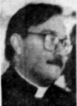
1980-1982 | Our Lady of Peace, Fords, NJ (TR) | 1991 | Unknown |
1983-1984 | St. Francis Cathedral, Metuchen, NJ (MET) | 1992-1998 | Bethany Ridge, Little York, NJ (MET) |
1985-1986 | St. Thomas the Apostle, Old Bridge, NJ (MET) | 1999-2019 | Unknown |
1987-1990 | St. Matthias, Somerset, NJ (MET) | ||
Assignments Within the Archdiocese/Diocese(s) in New Jersey: Trenton, Metuchen Assignments:
Fr. Yusaf Dominic (Dominic Yousaf) Ordained, 1974
Assignments Within the Archdiocese/Diocese(s) in New Jersey: Newark |
Notes: |
Fr. Dominic Yusuf was ordained in 1974 to the Archdiocese of Lahore, Pakistan and worked in various parishes throughout the world, serving in England, the United States, and Italy. In 1996, two survivors came forward and accused Fr. Dominic of child sexual abuse in the 1980’s in England. Fr. Dominic was subsequently arrested and sent to Servants of the Paraclete, an institution known for treating priests accused of child sexual abuse. Before he could be tried in England, Fr. Dominic fled back to his native country of Pakistan in 1997 where he worked until 2002. Fr. Dominic had previously tried to work as a priest in the United States but had been denied work by the Archdiocese of Los Angeles and the Diocese of Brooklyn. However, in 2002, the Diocese of Newark hired him to work at St. Francis of Assis in Ridgefield, New Jersey where he reportedly worked for about two months. In 2004, Fr. Dominic was found working as a priest in Italy. Fr. Dominic’s current status as a priest, his whereabouts, and whether he has access to children are unknown. |
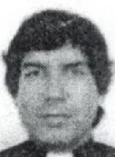
Br. George Donnelly, C.F.X. Ordained, 1964
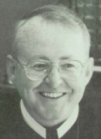
Prior 1984 | St. Joseph Regional High School, Montvale, NJ (NEW) | 2006 | South Shore Hospital, Waymouth, MA (BO) |
1984-2003 | St. John’s Preparatory School, Danvers, MA (BO) | 2007-2019 | Unknown |
2004-2005 | Unknown | ||
Assignments Within the Archdiocese/Diocese(s) in New Jersey: Newark Assignments:
Fr. John J. Donohue Ordained, 1973

1974-1987 | Unknown | 1992-2015 | St. Valentine, Bloomfield, NJ (NEW) |
1988 | Elizabeth, NJ (NEW) | 2011-2015 | Clara Maass Medical Center, Belleville, NJ (NEW) |
1989-1991 | Unknown | 2016-2019 | Unknown |
Assignments Within the Archdiocese/Diocese(s) in New Jersey: Newark Assignments:
AndersonAdvocates.com • 908-859-2200 39

Fr. John Francis Dority, O.F.M. Ordained, 1967
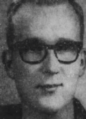
1968-1969 | Unknown | 1974-1975 | St. Stephen of Hungary, New York, NY (NY) |
1970-1971 | St. Anne’s Friary, Anapolis, Brazil | 1976 | St. Catherine of Bologna, Ringwood, NJ (PAT) |
1972-1973 | Anapolis, Brazil | 1977-2019 | Unknown |
Assignments Within the Archdiocese/Diocese(s) in New Jersey: Paterson Assignments:
Fr. Kevin J. Downey, O.F.M. Ordained, 1982
1983 | St. Bonaventure Friary, Allegany, NY (BUF) | 1997-1999 | Our Lady of the Assumption, Pompton Lakes, NJ (PAT) |
1984-1985 | Quincy College, Quincy, IL (SFD) | 2000-2002 | St. Bonaventure, Allegany, NY (BUF) |
1986 | St. Anthony, Butler, NJ (PAT) | 2000-2002 | St. John the Baptist, Vandalia, NY (BUF) |
1987-1991 | Quincy College, Quincy, IL (SFD) | 2003-2011 | Our Lady of the Assumption, Pompton Lakes, NJ (PAT) |
1992-1993 | St. Francis of Assisi, Raleigh, NC (R) | 2012-2016 | St. Francis of Assisi, Triangle, VA (ARL) |
1994-1996 | Unknown | 2017-2019 | Unknown |
Assignments Within the Archdiocese/Diocese(s) in New Jersey: Paterson Assignments:
Fr. Vincent A. Doyle Ordained, 1949
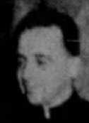
1950-1952 | Sacred Heart, Vineland, NJ (CAM) | 1966 | St. Bridget’s, Glassboro, NJ (CAM) |
1953-1958 | Holy Name, Camden, NJ (CAM) | 1967 | St. Nicholas’, Egg Harbor City, NJ (CAM) |
1959 | St. Edward’s, Pine Hill, NJ (CAM) | 1968 | St. Anne’s, Westville, NJ (CAM) |
1960-1961 | Our Lady of Mount Carmel, Berlin, NJ (CAM) | 1969-1970 | St. Michael’s, Cedarville, NJ (CAM) |
1962-1963 | St. George’s, Camden, NJ (CAM) | 1971-1982 | St. Anthony, Waterford, NJ (CAM) |
1964 | Lady of the Angels, Cape May Court House, NJ (CAM) | 1983 | St. Joan of Arc, Camden, NJ (CAM) |
1965 | St. Francis de Sales, Barrington, NJ (CAM) | 1983 | Deceased |
Assignments Within the Archdiocese/Diocese(s) in New Jersey: Camden Assignments:
40 AndersonAdvocates.com • 908-859-2200

Msgr. Thomas F. Duffy Ordained, 1933
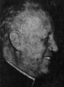
1934-1956 | Queen of Peace, North Arlington, NJ (NEW) | 1965-1974 | St. Michael’s, Palisades Park, NJ (NEW) |
1957-1964 | St. Michael’s, Palisades, Park, NJ (NEW) | 1975 | Retired; Deceased |
Assignments Within the Archdiocese/Diocese(s) in New Jersey: Newark Assignments:
Fr. John H. Duggan, S.J. Ordained, 1957
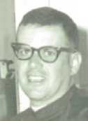
1958 | Unknown | 1985-1988 | Scranton Preparatory School, Scranton, PA (SCR) |
1959 | Our Lady of Martyrs, Aurlesville, NY (ALB) | 1989-1993 | Scranton, PA (SCR) |
1960-1970 | Scranton Preparatory School, Scranton, PA (SCR) | 1994 | Unknown |
1971-1972 | Loyola High School, Balitmore, MD (BAL) | 1995 | Baltimore, MD (BAL) |
1973-1979 | St. Agnes Hospital, Philadelphia, PA (PH) | 1996-2002 | University of Scranton, Scranton, PA (SCR) |
1980 | Old St. Joseph’s, Philadelphia, PA (PH) | 2003 | Baltimore, MD (BAL) |
1981 | Unknown | 2004 | University of Scranton, Scranton, PA (SCR) |
1982-1983 | Nigeria | 2005 | Campion Hall (BAL) |
1984 | Our Lady of Lourdes Hospital, Camden, NJ (CAM) | 2006-2019 | Unknown |
Assignments Within the Archdiocese/Diocese(s) in New Jersey: Camden Assignments:
Msgr. Stanislaus J. Durka Ordained, 1939
1940-1945 | St. Virgillus’, Morris Plains, N.J. (Rector) (PAT) | 1968-1969 | Retired |
1946-1950 | St. Joseph’s, Passaic, NJ (PAT) | 1970-1975 | Church of the Annunciation, Wayne, NJ |
1951-1954 | St. Stephen’s, Paterson, NJ (PAT) | 1976-1983 | Retired |
1955-1964 | St. Thomas, Ogdensburg, NJ (PAT) | 1983 | Deceased |
1965-1967 | St. Thomas, Ogdensburg, NJ (PAT) | ||
Assignments Within the Archdiocese/Diocese(s) in New Jersey: Paterson Assignments:
AndersonAdvocates.com • 908-859-2200 41

Fr. Edward J. Eilert (Eilart) Ordained, 1964
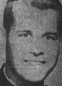
1965-1978 | St. John the Apostle, Linden, NJ 1805 Penbrook Terr. (NEW) | 2004 | Unknown |
1979-1984 | Our Lady of Lourdes Church, Mountainside, NJ (NEW) | 2005-2006 | St. John Vianney Residence for Priests, Rutherford, NJ (NEW) (Retired) |
1985 | Unknown | 2007 | Unknown |
1986-1987 | Our Lady of Lourdes Church, Mountainside, NJ (NEW) | 2008-2017 | St. John Vianney Residence for Priests, Rutherford, NJ (NEW) (Retired) |
1988-1996 | St. Vincent DePaul Church, Bayonne, NJ (NEW) | 2018-2019 | Unknown |
1997-2003 | St. Philomena Church, Livingston, NJ (NEW) | ||
Assignments Within the Archdiocese/Diocese(s) in New Jersey: Newark Assignments:
Fr. Jean-Level Eliscard Ordained, 1990
1995 | St. Francis of Assisium, Trenton, NJ (TR ) | 1996-2019 | Unknown |
Assignments Within the Archdiocese/Diocese(s) in New Jersey: Trenton Assignments:
Fr. Anthony Joseph Eremito Ordained, 1967
1968 | Church of St. Mary, Fishkill, NY (NY) | 1986-1994 | Holy Cross, New York, N.Y. (NY) |
1969 | Unknown | 1995-1996 | Unknown |
1970-1975 | St. Raymond’s, Bronx, NY (NY) | 1997-1998 | St. Agnes, Atlantic Highlands, NJ (TR) |
1976 | Extra Archdiocesan Assignment (NY) | 1997-2001 | Absent on Leave |
1977-1978 | Our Lady of Fatima Church, Scarsdale, NY (NY) | 1999-2001 | Absent on Leave |
1979 | Extra Archdiocean Assignment (NY) St. Joseph, Keyport, NJ (TR) | 2002-2019 | Unknown |
1980-1985 | St. Margaret’s, New York, N.Y. (NY) | ||
Assignments Within the Archdiocese/Diocese(s) in New Jersey: Trenton Assignments:
42 AndersonAdvocates.com • 908-859-2200

Fr. David A. Ernst Ordained, 1954
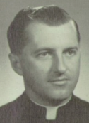
1955-1968 | St. Mary’s, East Orange, NJ (NEW) | 1981-1982 | St. Joseph’s, Union City, NJ (NEW) |
1969-1976 | St. Francis’, Ridgefield Park, NJ (NEW) | 1983-1988 | St. Elizabeth, Wyckoff, NJ (NEW) |
1977-1980 | St. Mary’s, Rutherford, NJ (NEW) | 1988 | Deceased |
Assignments Within the Archdiocese/Diocese(s) in New Jersey: Newark Assignments:
Fr. Patrick O. Erwin Ordained, 1967
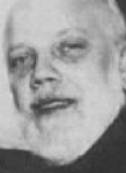
1968 | Unknown | 1991 | Unassigned (PAT) |
1969-1970 | St. Gerard Majella, Paterson, NJ (PAT) | 1992-1996 | St. Mary’s, Paterson, NJ, (PAT) |
1971-1974 | St. Joseph’s, Paterson, NJ (PAT) | 1997 | Unassigned (PAT) |
1975 | Our Lady of Victories, Paterson, NJ, (PAT) | 1998 | Unassigned, Cyril and Methodius Church, Clifton, NJ (PAT) |
1976-77 | Social Action Department, Paterson, NJ (PAT) | 1999-2004 | On Duty Outside the Diocese, (PAT); |
1978 | Our Lady of Victories, Paterson, NJ, (PAT) | 1999-2004 | Church De El Buen Pastor Church, Mayaquez, PR (MGZ) |
1979-1980 | Our Lady of Lourdes, Paterson, NJ, (PAT) | 2005 | On Duty Outside the Diocese, (PAT) |
1981-1987 | Our Lady of Victories, Paterson, NJ, (PAT) | 2006-2013 | Absent on Leave (PAT) |
1989 | Our Lady of Fatima Church, Highland Lakes, NJ (PAT) | 2014-2017 | Retired (PAT) |
1990 | Unknown | 2018-2019 | Unknown |
Assignments Within the Archdiocese/Diocese(s) in New Jersey: Paterson Assignments:
AndersonAdvocates.com • 908-859-2200 43

Fr. Eldridge (Eldredge) T. Evans Ordained, 1965
1966 | Immaculate Conception, Bridgeton, NJ (CAM) | 1992 | St. Peter, Rutland, VT (BUR) |
1967-1970 | Assumption, Atco, NJ (CAM) | 1992-1993 | On Duty Outside the Diocese (CAM) |
1971-1978 | St. Joseph, Woodstown, NJ (CAM) | 1993 | Cathedral of the Immaculate Conception, Burlington, VT (BUR) |
1971-1978 | St. James High School, Carneys Point, NJ (CAM) | 1994-1996 | Our Lady of Lourdes, Glassboro, NJ (CAM) |
1979-1987 | On Duty Outside the Diocese, Puerto Rico (CAM) | 1997-1998 | Holy Spirit, Atlantic City, NJ (CAM) |
1979-1982 | Church of Christ the King, Corozal, P.R. (ARE) | 1999 | Unknown |
1983-1987 | Church of Our Lady of Mt. Carmel, Vega- Baja, P.R. (ARE) | 2000-2001 | Our Lady of Lourdes, Glassboro, NJ (CAM) |
1988 | St. Casimir, Woodbine, NJ (CAM) | 2002-2019 | Unknown |
1989 | N.S. Madre del Redentor, Ciales, P.R. (ARE) | 2019 | Died |
1990-1991 | St. Agnes, Blackwood, NJ (CAM) | ||
Assignments Within the Archdiocese/Diocese(s) in New Jersey: Camden Assignments:
Fr. Joseph P. Fagan Ordained, 1937
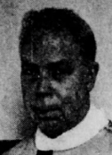
1938-1948 | Christ the King, Jersey City, NJ (NEW) | 1983-1984 | Retired, Spring Lake Heights, NJ |
1944-1949 | Our Lady of Grace, Hoboken, NJ (NEW) | 1985-1990 | Retired, Wall, NJ |
1950-1956 | Benedictine Convent, Motherhouse and Novitiate of Sisters of St. Benedict, Elizabeth, NJ (NEW) | 1991 | Retired, Wall Township, NJ |
1957-1963 | St. Walburga’s Convent, Motherhouse and Novitiate of Sisters of St. Benedict, Elizabeth, NJ (NEW) | 1992-1993 | Retired, Brielle, NJ |
1964-1967 | St. Charles Borromeo, Newark, NJ (NEW) | 1994-2002 | Retired, Spring Lake, NJ |
1968-1978 | Little Flower, Berkeley, NJ (NEW) | 2003 | Retired, Spring Lake, NJ |
1979-1980 | Unknown | 2004 | Retired, Wall, NJ |
1981-1982 | Retired | 2004 | Died |
Assignments Within the Archdiocese/Diocese(s) in New Jersey: Newark Assignments:
44 AndersonAdvocates.com • 908-859-2200

Fr. Ernest Faggioni (Fagione), S.D.B. Ordained, 1947
1948-1949 | Unknown | 1983-1988 | Unknown |
1950 | Salesian High School Residence, New Rochelle, NY (NY) | 1989-1992 | St. John Bosco, Harvey, LA (NO) |
1951-1959 | Hope Haven, Marrero, LA (NO) | 1993 | Unknown |
1960-1961 | Don Bosco Technical School, Paterson, NJ (PAT) | 1994-2000 | St. John Bosco, Harvey, LA (NO) |
1962-1963 | Don Bosco Juniorate, West Haverstraw, NY (NY) | 2001-2002 | Salesian High School, New Rochelle, NY (NY) |
1964-1966 | Hope Haven, Marrero, LA (NO) | 2002 | Salesian Provincial House, New Rochelle, NY (NY) |
1967-1974 | Archbishop Shaw High School, Marrero, LA (NO) | 2003-2004 | Unknown |
1975-1979 | Salesian Prep School, Cedar Lake, IN (GAR) | 2005-2006 | Mary Help of Christians School, Tampa, FL (SP) |
1980 | Salesian Monastery, Cedar Lake, IN (GAR) | 2006 | Died |
1981-1982 | Don Bosco Technical High School, Paterson, NJ (PAT) | ||
Assignments Within the Archdiocese/Diocese(s) in New Jersey: Paterson Assignments:
Msgr. Manuel R. M. Fernandez Ordained, 1959

1960-1978 | Unknown | Eatontown Mission, Eatontown, NJ (TR) | |
1979 | St. Dorothea, Eatontown, NJ (TR) | Blessed Sacrament, Trenton, NJ (TR) | |
1980-1984 | Immaculate Conception, Eatontown, NJ (TR) | Star of the Sea, Long Branch, NJ (TR) | |
1985-1998 | St. John the Baptist, Long Branch, NJ (TR) | Jesus the Lord, Keyport, NJ (TR) | |
1999-2002 | St. Mary Cathedral, Trenton, NJ (TR) | 2006 | Died |
1999-2002 | St. Joseph, Trenton, NJ (TR) | ||
Assignments Within the Archdiocese/Diocese(s) in New Jersey: Trenton Assignments:
AndersonAdvocates.com • 908-859-2200 45

Fr. Romano J. Ferraro Ordained, 1960

1960-1962 | St. Joseph Patron of the Universal, Brooklyn, NY (BRK) | 1978-1979 | St. Aloysius, Queens, NY (BRK); Wyckoff Heights Hospital, Queens, NY (BRK) |
1962-1963 | St. Rosalia, Brooklyn, NY (BRK); Regina Pacis Votive Shrine, Brooklyn, NY (BRK) | 1980 | Absent on Sick Leave (BRK) |
1963-1964 | St. Lucy, Brooklyn, NY (BRK) | 1980-1981 | House of Affirmation, Webster Groves, MO (STL) |
1964-1968 | Holy Family, Brooklyn, NY (BRK) | 1981-1983 | St. Joan of Arc, St. Louis, MO (STL); Jewish Hospital, St. Louis, MO (STL); Barnes Hospital, St. Louis, MO (STL) |
1968-1970 | Military Service | 1983 | St. Francis Xavier, Bronx, NY (NY); Jacobi Hospital, Bronx, NY (NY); Einstein Hospital, Bronx, NY (NY); Good Samaritan Hospital, West Islip, NY (RVC); Unassigned (BRK) |
1968 | Indoctrination Seminar Chaplain Corps Reserve U.S. Naval Air Station, Norfolk, VA (RIC); U.S. Naval Chaplains School, Newport, RI (PRO) | 1984 | St. James, Woodbridge, NJ (MET) |
1968-1969 | U.S. Naval Air Station, Key West, FL (MIA) | 1984-1985 | Our Lady of Mount Virgin, Middlesex, NJ (MET) |
1969-1970 | Mobile Support Unit Detachment Bravo, Subic Bay, Philippines | 1985-1986 | St. John Vianney, Colonia, NJ (MET) |
1971-1973 | St. Rose of Lima, Brooklyn, NY (BRK) | 1986-1987 | Christ the King, Commack, NY (RVC) |
1973 | Absent on Sick Leave (BRK); Cathedral College, Douglaston, NY (BRK) | 1987-1988 | St. Rita, Staten Island, NY (NY) |
Unknown Dates | St. John’s University, Queens and Staten Island, NY (BRK; NY) | 1989 | St. Luke Institute, Suitland, MD (WDC) |
1975-1977 | St. Joseph, Kings Park, NY (RVC) | 1989-2002 | Parsons Manor, Jamaica, NY (BRK) |
1977-1978 | St. Francis Xavier, Brooklyn, NY (BRK); Madonna Residence for the Elderly, Brooklyn, NY (BRK) | 2003-2019 | Prison, Old Colony Correctional Center |
Assignments Within the Archdiocese/Diocese(s) in New Jersey: Metuchen Assignments:
Assignments Within the Archdiocese/Diocese(s) in New Jersey: Newark |
Assignments: |
Brother Francis K. Fish, C.F.C, was a member of the Congregation of Christian Brothers. At least one allegation of child sexual abuse was made against Br. Fish in the bankruptcy matter In re: The Christian Brothers’ Institute, et al. The sexual abuse allegedly occurred while Br. Fish worked at Bergen Catholic High School in Oradell, NJ in the mid-late 1960s. Br. Fish’s clerical status, locations he worked, and whether he has access to children are unknown. |
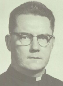
Fr. John L. Flanagan Ordained, 1941
1942 | St. Bernard, Plainfield, NJ (NEW) | 1957 | Holy Trinity, Westfield, NJ (NEW) |
1943-1950 | St. Francis Hospital, Jersey City, NJ (NEW) | 1958-1969 | Unknown |
1948-1950 | Seton Hall College, Jersey City, NJ (NEW) | 1970-1975 | Our Lady of All Souls, East Orange, NJ (NEW) |
1951 | Holy Rosary, Edgewater, NJ (NEW) | 1975 | Died |
1952-1956 | Unknown | ||
Assignments Within the Archdiocese/Diocese(s) in New Jersey: Newark Assignments:
46 AndersonAdvocates.com • 908-859-2200

Fr. Francis J. Flemming (Fleming) Ordained, 1961
1962 | St. Joseph, Camden, NJ (CAM) | Sacred Heart, Vineland, NJ (CAM) | |
1963-1969 | Unknown | Puerto Rican Apostolate | |
1970 | St. Peter Celestine, Cherry Hill, NJ (CAM) | Sacred Heart High School, Vineland, NJ (CAM) | |
1971-1974 | Most Holy Redeemer, Westville, NJ (CAM) | Christ the King, Haddonfield, NJ (CAM) | |
1975-1976 | Our Lady Star of the Sea, Atlantic City, NJ (CAM) | St. Mary of the Angels, Haddonfield, NJ (CAM) | |
1977-1984 | St. Joseph, Swedesboro, NJ (CAM) | St. Bartholomew, Camden, NJ (CAM) | |
1985-1986 | St. John Neumann, Sicklerville, NJ (CAM) | 1986 | Died |
Assignments Within the Archdiocese/Diocese(s) in New Jersey: Camden Assignments:
Fr. John E. Follett Ordained, 1978
1979-1982 | Sacred Heart, Vineland, NJ (CAM) | 1993 | St. Catherine, Clayton, NJ (CAM) |
1983-1986 | St. James, Ventnor, NJ (CAM) | 1994-1996 | St. Maria Goretti, Runnemede, NJ (CAM) |
1987-1988 | St. Mary, Gloucester, NJ (CAM) | Chaplain Air National Guard, Pomona | |
1989-1992 | St. Thomas, Brigantine, NJ (CAM) | 1996 | Died |
Assignments Within the Archdiocese/Diocese(s) in New Jersey: Camden Assignments:
Br. Thomas Cuthbert Ford, C.F.C. Ordained, 1955
1956-1959 | Mt. Cashel Home for Boys, Newfoundland, Canada | 1974-1979 | Boy’s Central High School, Butte, MT (HEL) |
1959 | Cardinal Hayes High School, New York, NY (NY) | 1980-1986 | St. Laurence High School, Chicago, IL (CHI) |
1960-1964 | Catholic Memorial High School, Boston, MA (BO) | 1986-1996 | Bergen High School, Bergen, NJ (NEW) |
1964-1967 | O’Dea High School, Seattle, WA (SEA) | 1996-2000 | Unknown |
1967-1969 | St. Laurence High School, Chicago, IL (CHI) | 2001-2008 | Santa Maria Community, New York, NY (NY) |
1970-1974 | Damien High School, Honolulu, HI (HON) | 2008 | Died |
Assignments Within the Archdiocese/Diocese(s) in New Jersey: Newark Assignments:
AndersonAdvocates.com • 908-859-2200 47

Fr. Donal R. Fox, O.S.B. Ordained, 1966

1967-1969 | Unknown | 1989-2018 | St. Mary’s Abbey, Morristown, NJ (PAT) |
1970-1979 | St. Mary’s Abbey, Morristown, NJ (PAT) | 1998-1999 | Notre Dame of Mt. Carmel, Cedar Knolls, NJ (PAT) |
1980 | Sacred Heart, Rockaway, NJ (PAT) | 2000-2005 | St. Elizabeth, Linden, NJ (NEW) |
1981-1987 | Unknown | 2006 | St. Elizabeth of Hungary, Linden, NJ (NEW) |
1988 | St. Mary’s Abbey, Clifton, NJ (PAT) | 2007-2019 | Unknown |
1989-1997 | St. Elizabeth, Linden, NJ (NEW) | ||
Assignments Within the Archdiocese/Diocese(s) in New Jersey: Paterson, Newark Assignments:
Fr. Thomas J. Frain Ordained, 1948
1948 | St. Agnes, Atlantic Highlands, NJ (TR) | 1964-1973 | Diocesan Superintendent of Schools, Trenton, NJ (TR) |
1949-1953 | Holy Angels, Trenton, NJ (TR) | 1968-1992 | St. Anns, Trenton, NJ (TR) |
1954-1956 | On Duty Outside the Diocese (TR), Catholic University, Washington, D.C. (WDC) | 1993-1995 | St. Anns, Lawrenceville, NJ (TR) |
1957-1960 | Our Lady of Sorrows, Trenton, NJ (TR) | 1996-1997 | Retired Ocean City, NJ |
1957-1963 | Diocesan Assistant Superintendent of Schools, Trenton, NJ (TR) | 1997 | Died |
1961-1967 | Sacred Heart, Trenton, NJ, (TR) | ||
Assignments Within the Archdiocese/Diocese(s) in New Jersey: Trenton, Camden Assignments:
Fr. Michael C. Fugee Ordained, 1994
1995-1998 | St. Rose of Lima, Short Hills, NJ (NEW) | 2011-2013 | Society of St. Peter the Apostle, Newark, NJ (NEW) |
1999-2001 | St. Elizabeth, Wyckoff, NJ (NEW) | 2011-2013 | Holy Childhood Association, Newark, NJ (NEW) |
2001-2009 | Unknown | 2011-2013 | Missionary Union of Priests & Religious, Newark, NJ (NEW) |
2009 | St. Michael’s Medical Center, Newark, NJ (NEW) | 2012-2013 | Sacred Heart, Rochelle Park, NJ (NEW) |
2010-2011 | St. Antoninus, Newark, NJ (NEW) | 2013 | St. Marys, Colt’s Neck, (TR) |
2011-2013 | Propagation of the Faith, Newark, NJ (NEW) | 2014-2019 | Unknown |
Assignments Within the Archdiocese/Diocese(s) in New Jersey: Newark, Trenton Assignments:
48 AndersonAdvocates.com • 908-859-2200

Fr. Raymond Fullam, S.J. Ordained, 1945
1946-1948 | Xavier High School, New York, NY (NY) | 1967-1969 | Manresa Retreat House, Staten Island, NY (NY) |
1949-1951 | Unknown | 1969-1972 | Christ the King, Syracuse, NY (SY) |
1952 | Weston College, Weston, MA (BO) | 1972-1976 | Canisius High School, Buffalo, NY (BUF) |
1953 | Tertianship, Auriesville, NY (ALB) | 1977-1982 | Martyr’s Shrine, Auriesville, NY (ALB) |
1953-1958 | Canisius High School, Buffalo, NY (BUF) | 1983 | Jogues Retreat, Cornwall, NY (NY) |
1958-1964 | Military Chaplain | 1984-1985 | Gonzaga-Seven Springs, Monroe, NY (NY) |
1964-1965 | St. Peter, Jersey City, NJ (NEW) | 1986-1987 | Jesuit Provincial’s Office, New York, NY (NY) |
1965-1967 | St. Francis Xavier, New York, NY (NY) | 1987 | Died |
Assignments Within the Archdiocese/Diocese(s) in New Jersey: Newark Assignments:
Fr. Lawrence Gadek Ordained, 1955
1956-1962 | St. Catherine, Hillside, NJ (NEW) | 1966-2019 | Unknown |
1964-1966 | Assumption of the Blessed Virgin Mary, Jersey City, NJ (NEW) | ||
Assignments Within the Archdiocese/Diocese(s) in New Jersey: Newark Assignments:
Fr. Richard Galdon Ordained, 1959
1960-1962 | Our Lady of Good Counsel, Newark, NJ (NEW) | 1987-1992 | Unknown |
1963-1964 | Unknown | 1993 | On Duty Outside the Diocese |
1965-1968 | Our Lady of Good Counsel, Newark, NJ (NEW) | 1994-2000 | Unknown |
1969 | Unknown | 2000 | Died |
1970-1986 | Our Lady of Good Counsel, Newark, NJ (NEW) | ||
Assignments Within the Archdiocese/Diocese(s) in New Jersey: Newark Assignments:
AndersonAdvocates.com • 908-859-2200 49

Fr. Manuel (De Jesus) Gallo-Espinoza Ordained, 1998
1998-2001 | Unknown | 2004-2019 | Unknown |
2002-2003 | St. Mary, Plainfield, NJ (NEW) | ||
Assignments Within the Archdiocese/Diocese(s) in New Jersey: Newark Assignments:
Fr. Thomas P. (R.) Ganley Ordained, 1985
1985 | Unknown | 2003 | St. Ann, Raritan, NJ (MET) |
1986 | St. Cecilia, Monmouth Junction, NJ (MET) | 2004-2007 | McCarrick Care Center, Somerset, NJ; Maria Regina Residence, Somerset, NJ (MET) |
1987-1990 | St. Matthew, Edison, NJ (MET) | 2008-2013 | McCarrick Care Center, Somerset, NJ; Maria Regina Residence, Somerset, NJ; Robert Wood Johnson University Hospital (MET) |
1991 | Immaculate Conception, Spotswood, NJ (MET) | 2014-2015 | McCarrick Care Center, Somerset, NJ; Maria Regina Residence, Somerset, NJ (MET) |
1992-1996 | St. Cecilia, Iselin, NJ (MET) | 2016-2017 | St. Philip & St. James, Phillipsburg, NJ; Warren Hospital, Phillipsburg, NJ (MET) |
1997-1998 | Our Lady of Fatima, Piscataway, NJ (MET) | 2018-2019 | Unknown |
1999-2002 | Sacred Heart, South Plainfield, NJ (MET) | ||
Assignments Within the Archdiocese/Diocese(s) in New Jersey: Metuchen Assignments:
Fr. Michael M. Garry Ordained, 1939
1940 | Unknown | 1960 | St. Mark, Sea Girt, NJ (TR) |
1941-1944 | Absent on Leave (SAC) | 1961-1962 | Ascension, Bradley Beach, NJ (TR) |
1945-1947 | St. Elizabeth of Hungary, Linden, NJ (NEW) | 1963-1968 | St. Jude, Blairstown, NJ (TR) |
1948-1952 | Absent on Leave (SAC) | 1969-1981 | St. Jerome, West Long Branch, NJ (TR) |
1953-1955 | St. Denis, Manasquan, NJ (TR) | 1982-1988 | Retired, Long Branch, NJ |
1956-1957 | St. James the Less, Jamesburg, NJ (TR) | 1989 | Died |
1958-1959 | St. Magdalen de Pazzi, Flemington, NJ (TR) | ||
Assignments Within the Archdiocese/Diocese(s) in New Jersey: Newark, Trenton Assignments:
50 AndersonAdvocates.com • 908-859-2200

Fr. A. Richard Gerbino Ordained, 1952
1952 | Unknown | 1983 | Corpus Christi, Carneys Point, NJ (CAM) |
1953-1961 | Our Lady of Mount Carmel, Camden, NJ (CAM) | 1984-1989 | Vianny Villa, Cherry Hill, NJ (CAM) |
1962-1980 | St. Francis of Assisi, Vineland, NJ (CAM) | 1990-2001 | On Sick Leave; Vianny Villa, Cherry Hill, NJ (CAM) |
1981 | St. Rose, Haddon Heights, NJ (CAM) | 2002 | Retired; Vianny Villa, Cherry Hill, NJ (CAM) |
1982 | Our Lady Star of the Sea, Cape May, NY (CAM) | 2003-2019 | Unknown |
Assignments Within the Archdiocese/Diocese(s) in New Jersey: Camden Assignments:
Br./Deacon Kenneth Ghastin, O.F.M. Ordained, Unknown
1959 | Simple Vows, Hungarian Franciscans; | 1983-1991 | Serra Catholic High School, McKeesport, PA (PIT) |
Holy Land Monastery, Washington, DC (WDC) | 1992 | Dusquesne University, Pittsburgh, PA (PIT) | |
Detroit, MI (DET) | 1992-1993 | St. Ann, Marlborough, MA (BO) | |
Holy Assumption, Roebling, NJ (TR) | 1993-2005 | Mount Alvernia Friary, Wappinger Falls, NY (NY) | |
Holy Cross High School, Trenton, NJ (TR) | 2005-2012 | Clearwater, FL (SP) | |
1977-1978 | Lansing, MI (LAN) | 2013 | Died |
1979-1983 | Christopher Columbus Catholic High School, Boston, MA (BO) | ||
Assignments Within the Archdiocese/Diocese(s) in New Jersey: Trenton Assignments:
Fr. William M. (N., P.) Giblin Ordained, 1959
1960 | Unknown | 1998-2000 | St. Joseph, East Orange, NJ (NEW) |
1961 | St. Mary, Rutherford, NJ (NEW) | 2001-2003 | Retired |
1962-1963 | Seton Hall Divinity School, South Orange, NJ (NEW) | 2004 | Retired, Holy Rosary, Edgewater, NJ (NEW) |
1964-1988 | Seton Hall Preparatory School, South Orange, NJ (NEW) | 2005 | Retired |
1989 | Unknown | 2006-2011 | The Rev. Msgr. James F. Kelley Residence for Retired Priests, Caldwell, NJ (NEW) |
1990-1996 | St. Joseph, East Orange, NJ (NEW) | 2012 | Died |
1997 | Immaculate Conception, Secaucus, NJ (NEW) | ||
Assignments Within the Archdiocese/Diocese(s) in New Jersey: Newark Assignments:
AndersonAdvocates.com • 908-859-2200 51

Fr. Robert G. Gibney Ordained, 1954
1954-1957 | St. Cecilia, Kearny, NJ (NEW) | 1978-1985 | St. Catherine of Siena, Cedar Grove, NJ (NEW) |
1957-1961 | Immaculate Conception Seminary, Darlington, NJ (NEW) | 1985-1991 | Overlook Hospital, Summit, NJ (NEW) |
1961-1965 | Sacred Heart Newark, NJ (NEW) | 1991-2005 | Our Lady of Mt. Carmel, Ridgewood, NJ (NEW) |
1965-1975 | U.S. Navy (NEW) | 1997-2012 | Msgr. Kelley Residence for Retired Priests, Caldwell, NJ (NEW) |
1975-1978 | St. Mary Church, Dumont, NJ (NEW) | 2013 | Died |
Assignments Within the Archdiocese/Diocese(s) in New Jersey: Newark Assignments:
Fr. Augustine M. Giella Ordained, 1950
1951 | Unknown | 1983-1984 | On Duty Outside the Archdiocese (NEW) |
1952-1969 | Holy Trinity, Hackensack, NJ (NEW) | 1985 | On Duty Outside the Archdiocese (NEW) |
1970 | Our Lady of Sorrows, Jersey City, NJ (NEW) | 1986 | St. John the Evangelist, Enhaut, PA (HBG) |
1971-1976 | Church of the Epiphany, Cliffside Park, NJ (NEW) | 1987 | On Duty Outside the Archdiocese (NEW) ; St. John the Evangelist Church, Enhaut, PA (HBG) |
1977-1980 | St. Catherine’s, Glen Rock, NJ (NEW) | 1988-1989 | On Duty Outside the Archdiocese (NEW) |
1981 | St. Joseph’s, Hanover, PA (HBG) | 1990-1993 | Retired |
1982 | Special Assignment (NEW) | 1994 | Died |
1982 | St. Joseph, Hanover, PA (HBG) | ||
Assignments Within the Archdiocese/Diocese(s) in New Jersey: Newark Assignments:
Fr. Edward J. Gillespie Ordained, 1980
1981-1982 | St. Margaret, Woodbury Heights, NJ (CAM) | 1987 | Sacred Heart High School, Vineland, NJ (CAM) |
1983 | Unknown | 1988-1989 | Unknown |
1984 | St. Mary, Wlliamstown, NJ (CAM) | 1990-1992 | Vianney Villa, Cherry Hill, NJ (CAM) |
1985 | Unknown | 1993-1994 | St. Mary’s Nursing Home, Cherry Hill, NJ (CAM) |
1986 | St. Mary, Williamstown, NJ (CAM) | 1995-2019 | Unknown |
Assignments Within the Archdiocese/Diocese(s) in New Jersey: Camden, Assignments:
52 AndersonAdvocates.com • 908-859-2200

Fr. Randal (James R.) Gillette, C.P. Ordained, 1971
1971-1974 | St. Michael’s Monastery, Union City, NJ (NEW) | 1994 | St. Paul of the Cross Monastery, Pittsburgh, PA (PIT) |
1974-1978 | St. Gabriel, Boston, MA (BO) | 1995-1998 | Unknown |
1978-1987 | St. Patrick, Mexico City, MX | 1999-2004 | St. Vincent’s Residence, Pelham Manor, NY (NY) |
1988 | NJ Passionist Provincial Office, South River, NJ (MET) | 2003-2004 | Passionist Communications, Inc. Pelham, NY (NY) |
1989 | Unknown | 2005-2008 | Unknown |
1990-1993 | NJ Passionist Provincial Office, South River, NJ (MET) | 2009-2011 | Passionist Residence, Bronx, NY (NY) |
1991-1993 | Foreign Mission, (FgM) | 2012-2019 | Unknown |
Assignments Within the Archdiocese/Diocese(s) in New Jersey: Newark, Metuchen Assignments:
Fr. John C. Giordano Ordained, 1967
1968-1975 | St. Ann, Trenton, NJ (TR) | 1982-2004 | St. Luke, North Plainfield, NJ (MET) |
1971-1978 | Our Lady of Fatima, Piscataway, NJ (TR) | 2004-2007 | St. Luke, North Plainfield, NJ (MET); Maria Regina Residence, Somerset, NJ (MET) |
1979 | St. Ann, Browns Mills, NJ (TR) | 2008-2017 | Retired |
1980-1981 | St. Luke, North Plainfield, NJ (TR) | 2018-2019 | Unknown |
Assignments Within the Archdiocese/Diocese(s) in New Jersey: Trenton, Metuchen Assignments:
Fr. James C. Gould, S.J. Ordained, 1968
1969 | Unknown | 1998-1999 | Majuro, MH Cathedral of the Assumption; Ebeye, MH Queen of Peace Church; MH Outer Island Parish (MI) |
1970 -1973 | St. Peter’s Preparatory School, Jersey City, NJ (NEW) | 2000-2006 | Majuro, MH Cathedral of the Assumption; MH Outer Island Parish (MI) |
1974 | Unknown | 2007-2008 | New York, NY Society of Jesus (FgM) |
1975 - 1976 | Higher Studies (NY Prov) | 2009 | Unknown |
1977-1983 | St. Ann, Buffalo, NY (BUF) | 2010-2012 | New York, NY Society of Jesus (FgM) |
1984 | Likiep, Marshalls, Outer Islands (CMI) | 2013 | A Jesuit Community at Murray-Weigel Hall and Kohlmann Hall |
1985-1993 | Majuro, Our Lady of Assumption, Marshalls, Outer Islands, Jaluit (CMI) | 2013-2019 | Unknown |
1994-1997 | Micronesia, Prefect Apostolic, Marshall Islands (FgM) | ||
Assignments Within the Archdiocese/Diocese(s) in New Jersey: Newark Assignments:
AndersonAdvocates.com • 908-859-2200 53

Fr. Charles Granstrand (Grandstrand) Ordained, 1966
1966-1967 | Unknown | 1985 | Absent on Sabbatical Leave (NEW) |
1968-1971 | St. Aedan, Jersey City, NJ (NEW) | 1986-1989 | On Duty Outside the Archdiocese (NEW); North American College, Vatican City |
1972-1974 | St. Mary, Nutley, NJ (NEW) | 1990-2019 | Our Lady of Mercy, Park Ridge, NJ (NEW) |
1975-1977 | Sacred Heart Cathedral, Newark, NJ (NEW) | 2007-2019 | Bergen Pascack Valley Deanery 2P |
1978-1984 | Most Blessed Sacrament, Franklin Lakes, NJ (NEW) | ||
Assignments Within the Archdiocese/Diocese(s) in New Jersey: Newark Assignments:
Fr. Gerald J. Griffin Ordained, 1938
1939 | St. Paul, Burlington, NJ (TR) | 1958-1959 | Holy Cross, Sea Bright, NJ (TR) |
1940-1941 | St. Mary, Perth Amboy, NJ (TR) | 1960 | Sacred Heart, Trenton, NJ (TR) |
1942 | Listed under “Sick, Absent, On Leave, or Retired” (TR) | 1961 | St. Peter the Apostle, New Brunswick, NJ (TR) |
1943-1944 | St. Joseph, North Plainfield, NJ (TR) | 1962-1969 | Absent on Sick Leave (TR) |
1945 | Our Lady of Peace, Fords, NJ (TR) | 1970-1972 | Our Lady of Mercy, Englishtown, NJ (TR) |
1946-1947 | Our Lady Star of the Sea, Long Branch, NJ (TR) | 1973 | Absent on Sick Leave (TR) |
1948-1949 | Blessed Sacrament, Trenton, NJ (TR) | 1974-1983 | On Duty Outside Diocese (TR) |
1950-1954 | St. Anthony, Red Bank, NJ (TR) | 1984-1986 | Retired |
1954-1957 | St. James, Basking Ridge, NJ (TR) | 1987-2019 | Unknown |
Assignments Within the Archdiocese/Diocese(s) in New Jersey: Trenton Assignments:
54 AndersonAdvocates.com • 908-859-2200

Fr. Alan F. Guglielmo Ordained, 1968
1969 | The Assumption, Roselle Park, NJ (NEW) | 2001-2002 | Mountainside Hospital, Montclair, NJ (NEW); St. Valentine, Bloomfield, NJ (NEW) |
1970-1973 | St. Helen, Westfield, NJ (NEW) | 2003-2005 | St. Valentine, Bloomfield, NJ (NEW) |
1974-1977 | Marist Brothers House, Roselle, NJ (NEW) | 2006 | St. Valentine, Bloomfield, NJ (NEW); Columbus Hospital, Newark, NJ (NEW); Office of Health Care Personnel, Newark, NJ (NEW) |
1978-1983 | St. Michael, Union, NJ (NEW) | 2007 | St. Valentine, Bloomfield, NJ (NEW); Columbus Hospital, Newark, NJ (NEW); St. Anthony’s, Newark, NJ (NEW); Office of Health Care Personnel, Newark, NJ (NEW) |
1984-1987 | St. Aedean, Jersey City, NJ (NEW) | 2008 | Columbus Hospital, Newark, NJ (NEW); Coordinator for Health Care Apostolate Continuing Education; St. Anthony’s, Newark, NJ (NEW) |
1988-1992 | St. Mary, Jersey City, NJ (NEW) | 2009 | Columbus Campus of St. Michael Medical Center, Newark, NJ (NEW); Coordinator for Health Care Apostolate Continuing Education; Office of Health Care Personnel, Newark NJ (NEW); Immaculate Conception (Retired), Secaucus, NJ (NEW) |
1993 | Unknown | 2010-2011 | Coordinator for Health Care Apostolate Continuing Education; Office of Health Care Personnel, Newark NJ (NEW); Immaculate Conception (Retired), Secaucus, NJ (NEW) |
1994-1997 | St. Mary’s Hospital, Hoboken, NJ (NEW) | 2012-2013 | Immaculate Conception (Retired), Secaucus, NJ (NEW) |
1998 | Sacred Heart, Lyndhurst, NJ (NEW); Clara Maass Hospital, Belleville, NJ (NEW); Mountainside Hospital, Montclair, NJ (NEW) | 2014-2017 | St. John Vianney Residence for Retired Priests, Rutherford, NJ (NEW) |
1999-2000 | Mountainside Hospital, Montclair, NJ (NEW) | 2018-2019 | Unknown |
Assignments Within the Archdiocese/Diocese(s) in New Jersey: Newark Assignments:
Fr. Kevin A. Gugliotta Ordained, 1996
1996-2005 | St. Rose of Lima, Short Hills, NJ, (NEW) | 2008-2014 | St. Bartholomew, Scotch Plains, NJ (NEW) |
2006 | St. Joseph, West Orange, NJ (NEW) | 2015 | Unknown |
2007 | Unknown | 2016-2017 | Immaculate Conception, Mahwah, NJ (NEW); Ramapo College, Mahwah, NJ (NEW) |
Assignments Within the Archdiocese/Diocese(s) in New Jersey: Newark Assignments:
Deacon Carlos Guzman Ordained, 1946
Assignments Within the Archdiocese/Diocese(s) in New Jersey: Paterson | |
Assignments: | |
1981 | St. John Cathedral , Paterson, NJ (PAT) |
AndersonAdvocates.com • 908-859-2200 55

Fr. James T. Hanley Ordained, 1962
1963-1966 | St. Andrew the Apostle, Clifton, NJ (PAT) | 1984-1986 | Immaculate Heart of Mary, Wayne, NJ (PAT) |
1967-1971 | Our Lady of Good Counsel, Pompton Plains, NJ (PAT) | 1987 | Sick Leave (PAT) |
1972 | St. Christopher, Parsipanny, NJ (PAT) | 1988 | On Duty Outside the Diocese – Albany, NY (PAT) |
1973-1982 | St. Joseph, Mendham, NJ (PAT) | 1989-2002 | Retired |
1983 | Sick Leave (PAT) | 2003-2019 | Unknown |
Assignments Within the Archdiocese/Diocese(s) in New Jersey: Paterson Assignments:
Fr. Roy T. Hardin Ordained, 1964
1965 | St. Mary, Cherry Hill (Deer Park), NJ (CAM) | 1985 | Blessed Sacrament, Margate, NJ (CAM) |
1966-1967 | Most Holy Redeemer, Westville, NJ (CAM) | 1986-1990 | St. Mary, Rosenhayn, NJ (CAM) |
1968 | St. Martin de Porres, Hammonton, NJ (CAM) | 1991-1994 | St. Anne, Westville, NJ (CAM) |
1969-1974 | Assumption, Atco, NJ (CAM) | 1995-2000 | On Sick Leave (CAM) |
1975-1976 | St. Edward, Pine Hill, NJ (CAM) | 2001 | On Sick Leave, Vianney Villa, Cherry Hill, NJ (CAM) |
1977-1978 | St. Isadore, Vineland, NJ (CAM) | 2002-2019 | Unknown |
1979-1984 | St. Mary, Williamstown, NJ (CAM) | ||
Assignments Within the Archdiocese/Diocese(s) in New Jersey: Camden Assignments:
Fr. Thomas M. Harkins Ordained, 1971
1972 | On Duty Outside the Diocese, Rome, Italy | 1983-1984 | On Leave of Absence (CAM) |
1973 | St. Theresa of the Infant Jesus, Runnemede, NJ (CAM) | 1985-1988 | St. Mary, Cherry Hill, NJ (CAM) |
1974-1977 | Our Lady of Mt. Carmel, Camden, NJ (CAM) | 1989-90 | Holy Savior, Westmont, NJ (CAM) |
1978 | Holy Name, Camden, NJ (CAM) | 1991-93 | Camden Catholic High School, Cherry Hill, NJ (CAM); St. Stephen, Pennsauken, NJ (CAM) |
1979 | On Leave of Absence (CAM) | 1994-2000 | Immaculate Conception Cathedral, Camden, NJ (CAM) |
1980-81 | St. Anthony of Padua, Hammonton, NJ (CAM) | 2001-2002 | Vianney Villa, Cherry Hill, NJ (CAM) |
1982 | On Duty Outside the Diocese, Immaculate Heart Rectory, Page, AZ (GLP) | 2003-2019 | Unknown |
Assignments Within the Archdiocese/Diocese(s) in New Jersey: Camden Assignments:
56 AndersonAdvocates.com • 908-859-2200
Fr. Charles W. Hartling Ordained, 1979
1980-1993 | Holy Spirit, Union, NJ (NEW) | 2005-2011 | Church of St. Mary, Rutherford, NJ (NEW) |
1991 | CYO Youth Ministries, Scotch Plains, NJ (NEW) | 2012 | Church of St. Mary (Retired), Rutherford, NJ (NEW) |
1994-1999 | St. Elizabeth, Wyckoff, NJ (NEW) | 2012 | Died |
2000-2004 | St. Mary, Rutherford, NJ (NEW) | ||
Assignments Within the Archdiocese/Diocese(s) in New Jersey: Newark Assignments:
Fr. John Heekin Ordained, 1963
1964-1966 | St. Mary, Paterson, NJ (PAT) | 1973-1976 | Immaculate Conception, Franklin, NJ (PAT) |
1967 | St. Pius X, Monteville, NJ (PAT) | 1977-2000 | Holy Cross, Wayne, NJ (PAT) |
1969-1971 | St. Therese, Paterson, NJ (PAT) | 2001-2017 | Retired (PAT) |
1972 | Pope Pius XII Diocesan High School, Passaic, NJ (PAT) | 2018 | Died |
Assignments Within the Archdiocese/Diocese(s) in New Jersey: Paterson Assignments:
Br. William A. Hennessy, C.F.C.
Assignments Within the Archdiocese/Diocese(s) in New Jersey: Newark |
Assignments: |
Br. William A. Hennessy, C.F.C., was a member of the Congregation of Christian Brothers. At least one allegation of sexual abuse was made against Br. Hennessy. The sexual abuse allegedly occurred while Br. Hennessy worked at Catholic Memorial High School in West Roxbury, Massachusetts. Br. Hennessy was employed at Essex Catholic High School in Newark, New Jersey in approximately 1978. It is believed Br. Hennessy died in 1978. |
Fr. Douglas U. Hermansen Ordained, 1979
1980-1983 | St. Paul, Princeton, NJ (TR) | 1990-1996 | St. Pius X, Forked River, NJ (TR) |
1984-1985 | St. Raphael, Trenton, NJ (TR) | 1997-2002 | St. Elizabeth, Avon, NJ (TR) Jersey Shore Medical Center, Neptune, NJ (TR) |
1986-1989 | St. Rose of Lima, Freehold, NJ (TR) | 2003-2019 | Unknown |
Assignments Within the Archdiocese/Diocese(s) in New Jersey: Trenton Assignments:
AndersonAdvocates.com • 908-859-2200 57

Fr. Harold Hermley, O.S.F.S. Ordained, 1957
1958-1964 | Father Judge High School, Philadelphia, PA (PH) | 1977-1981 | St. Teresa, Tuckerton, NJ (TR) |
1965-1966 | Bishop Ireton High School, Alexandria, VA (RIC) | 1982 | Our Lady of Good Counsel Church, Vienna, VA (ARL) |
1967-1972 | Salesenium High School, Wilmington, DE (WIL) | 1983 | Died |
1973-1976 | Northeast Catholic High School, Philadelphia, PA (PH) | ||
Assignments Within the Archdiocese/Diocese(s) in New Jersey: Trenton Assignments:
Fr. Robert J. Hermley, O.S.F.S. Ordained, 1955
1956 | Unknown | 1989 | Unknown |
1957 | Living in Toledo, OH (TOL) | 1990-1991 | Our Lady of Good Counsel Church, Vienna, VA (ARL) |
1958-1965 | Father Judge High School for Boys, Philadelphia, PA (PH) | 1992 | St. Mary, Fredericksburg, VA (ARL) |
1966 | Mission House of the Oblates of St. Francis De Sales, Toledo, OH (TOL) | 1993-2000 | Seton Home Study (Chaplain) |
1967-1978 | Father Judge High School for Boys, Philadelphia, PA (PH) | 2001 | Little Sisters of the Poor (Chaplain), Newark, NJ (NEW) |
1979-1980 | Our Lady of Perpetual Help, Seaside Heights, NJ (TR) | 2002-2006 | Oblates of St. Francis De Sales Retirement and Retreat Center, Childs, MD (WIL) |
1981-1982 | Padua Academy Residence, Wilmington, DE (WIL) | 2007-2008 | Unknown |
1983-1988 | Our Lady of Good Counsel Church, Vienna, VA (ARL) | 2009 | Died |
Assignments Within the Archdiocese/Diocese(s) in New Jersey: Trenton, Newark Assignments:
Br. Jerome “Jerry” Heustis, C.F.C.
Assignments Within the Archdiocese/Diocese(s) in New Jersey: Newark |
Assignments: |
Brother Jerome “Jerry” Heustis was accused of sexually abusing one boy between 1963 and 1967 at Essex Catholic High School in Newark, New Jersey. The boy who was allegedly sexually abused committed suicide in 1978. Br. Heustis later worked as principal at Palma High School in Salinas, California for six years in the late 1970s and early 1980s. Br. Heustis was also accused of sexually abusing a minor when he worked at St. Laurence High School in Burbank, IL. Br. Heustis is included in the Christian Brothers’ list of “current, former and deceased brothers who were identified in at least two (2) sexual abuse claims filed as proofs of claim in the bankruptcy matter In re: The Christian Brothers’ Institute, et al.” The list, released June 11, 2014, identifies Br. Heustis as deceased. |
58 AndersonAdvocates.com • 908-859-2200

Fr. John E. Hewetson Ordained, 1930
1930-1933 | Our Lady of Victories, Jersey City, NJ (NEW) | 1954 | St. Vincent de Paul, Stirling, NJ (PAT) |
1934-1939 | St. Cecilla, Rockaway, NJ (NEW) | 1955-1963 | St. Joseph, Mendham, NJ (PAT) |
1940-1942 | St. Joseph, Paterson, NJ (PAT) | 1964-1966 | St. Michael, Netcong, NJ (PAT) |
1943-1944 | St. Bartholomew, Lafayette, NJ (PAT); St. James the Apostle, Montague, NJ (PAT); St. Thomas the Apostle, Hainesville, NJ (PAT) | 1967 | St. Paul, Clifton, NJ (PAT) |
1945-1950 | St. Joseph, Lincoln Park, NJ (PAT) | 1968-1972 | Absent on Leave |
1951-1952 | St. Joseph, Newton, NJ (PAT) | 1973-1987 | Retired |
1953 | St. George, Paterson, NJ (PAT) | 1987 | Died |
Assignments Within the Archdiocese/Diocese(s) in New Jersey: Newark, Paterson Assignments:
Br. Andrew Thomas Hewitt, C.F.C.
Assignments Within the Archdiocese/Diocese(s) in New Jersey: Newark |
Assignments: |
Br. Andrew Thomas Hewitt, C.F.C., was a member of the Congregation of Christian Brothers. Br. Hewitt is included in the Christian Brothers list of “current, former and deceased brothers who were identified in at least two (2) sexual abuse claims filed as proofs of claim in the bankruptcy matter In re: The Christian Brothers’ Institute, et al.” Brother Hewitt worked at Essex Catholic High School in Newark and East Orange, NJ. Br. Hewitt’s clerical status, locations he worked, and whether he has access to children are unknown. |
Fr. Eugene P. Heyndricks Ordained, 1981
1982-1989 | Our Lady of Mount Carmel, Ridgewood, NJ (NEW) | 2002 | St. John Nepomucene, Guttenberg, NJ (NEW) |
1990-1994 | Our Lady of the Lake, Verona, NJ (NEW) | 2003 | Unknown |
1995-1999 | Our Lady of Mercy, Park Ridge, NJ (NEW) | 2004-2006 | Retired |
2000-2002 | St. John the Baptist, Fairview, NJ (NEW) | 2007 | Deceased |
Assignments Within the Archdiocese/Diocese(s) in New Jersey: Newark Assignments:
AndersonAdvocates.com • 908-859-2200 59

Fr. Ernest Justin Hill, S.T. Ordained, 1951
1951 | St. Anne’s and St. Joachim, Carthage, MS (JKS) | 1965-1977 | Holy Trinity Missionary Cenacle, Silver Springs, MD (WDC) |
1952-1954 | Annunciation, Kiln, MS; Our Lady of the Pines, Catahoula, MS; St. Joseph’s, Fenton, MS; St. Louis of France, Rocky Hill, MS; Infant of Jesus, White Cypress, MS (JKS) | 1977-1978 | Dorothy Day Catholic Worker, Washington D.C. (WDC) |
1954-1956 | Holy Ghost Cenacle and Shrine of Saint Joseph, Sterling NJ (PAT) | 1978-1980 | Sacred Heart, Soldier Pond, ME; St. Mary Star of the Sea, Stonington, ME (PRT) |
1956-1958 | St. Elizabeth’s, Colonial Beach, VA; St. Paul’s Hague, VA; St. Francis, Kilmarnock, VA; St. Anthony’s, King George, VA; St. Timothy’s, Tapahannock, VA (RIC) | 1980-1993 | Unknown |
1958-1962 | Sacred Heart, Hitchcock, OK; St. Joseph’s, Loyal, OK; St. Eugene’s, Canton, OK (TLS) | 1993-1994 | Holy Trinity Seminary, Silver Springs, MD (WDC) |
1962-1965 | St. Anne Mission, Manchester, KY (COV) | 1995-2019 | Unknown |
Assignments Within the Archdiocese/Diocese(s) in New Jersey: Paterson Assignments:
Fr. James Francis Hopkins, O.F.M. Cap Ordained, 1968
1968-1969 | St. Francis Capuchin College, Washington, D.C. (WDC) | 1981-1984 | Holy Family, Turnersville NJ (CAM) |
1970-1971 | Serra High School, McKeesport, PA, (PIT) | 1985 | St. Vincent de Paul, Mays Landing, NJ (CAM) |
1972-1973 | St. Mary Monastery, Pittsburgh, PA (PIT) | 1986-1988 | St. Peter, Merchantville, NJ (CAM) |
1974 | Holy Maternity, Audubon, NJ (CAM) | 1989-1995 | St. Aloysius, Oaklyn, NJ (CAM) |
1975-1979 | St. Cecilia, Pennsauken, NJ (CAM) | 1996-2019 | Unknown |
1980 | Annunciation, Bellbawr, NJ (CAM) | ||
Assignments Within the Archdiocese/Diocese(s) in New Jersey: Camden Assignments:
Br. Ronald Alexius Howe, C.F.C.
Assignments Within the Archdiocese/Diocese(s) in New Jersey: Newark |
Assignments: |
Brother Ronald Alexius Howe, C.F.C, was a member of the Congregation of Christian Brothers. At least one allegation of child sexual abuse was made against Br. Howe in the bankruptcy matter In re: The Christian Brothers’ Institute, et al. The sexual abuse allegedly occurred while Br. Howe worked at Bergen Catholic High School in Oradell, NJ in the late 1960s. Br. Howe’s clerical status, locations he worked, and whether he has access to children are unknown. |

60 AndersonAdvocates.com • 908-859-2200

Fr. Charles J. Hudson Ordained, 1962
1962-1967 | Our Lady of Mercy, Parkridge, NJ (NEW) | 1983-1997 | Center for Hope Hospice, Union, NJ (NEW) |
1967-1970 | Holy Name Hospital, Teaneck, NJ (NEW) | 1997 | Deceased |
1970-1984 | St. Elizabeth Hospital, Elizabeth, NJ (NEW) | ||
Assignments Within the Archdiocese/Diocese(s) in New Jersey: Newark Assignments:
Fr. Francis “Frank” Xavier Hudson Ordained, 1974
1974-1978 | St. Mary, Gloucester, NJ (CAM) | 1997-2000 | St. John Bosco, Millville, NJ; Blackwood Treatment Center, Catholic Charities (CAM) |
Camden Catholic High School (CAM) | 2001 | Saint John Vianney, Deptford, NJ (CAM) | |
1979-1981 | Our Lady Star of the Sea, Atlantic City, NJ (CAM) | 2001-2002 | Leave of absence (CAM) |
1985 | St. Veronica, Delair, NJ (CAM) | 2003-2005 | Unknown |
1986-1988 | St. Francis of Assisi, Vineland, NJ (CAM) | 2005-2006 | St. Augustine Preparatory School (CAM) |
1991-1996 | Immaculate Conception, Bridgeton, NJ (CAM) | 2006-2019 | Unknown |
Assignments Within the Archdiocese/Diocese(s) in New Jersey: Camden Assignments:
Fr. John M. Huels, O.S.M. Ordained, 1976
1977-1979 | St. Joseph, Carteret, NJ (TR) | 1995 | The Catholic Theological Union at Chicago, Chicago, IL (CHI); Servite Friars, Eastern Province, Chicago, IL (CHI); Monastery of Our Lady of Sorrows, Chicago, IL (CHI) |
1980 | Unknown | 1996 | Servite Friars, Eastern Province, Chicago, IL (CHI); Monastery of Our Lady of Sorrows, Chicago, IL (CHI) |
1981-1982 | Divine Word College, Washington, D.C. (WDC) | 1997 | Servite Friars, Eastern Province, Chicago, IL (CHI); Zululand, South Africa |
1983-1989 | St. Philip Priory, Chicago, IL (CHI) | 1998-1999 | Servite Friars, Eastern Province, Chicago, IL (CHI); Ottawa, Canada |
1990-1992 | St. Philip Priory, Chicago, IL; The Catholic Theological Union at Chicago, Chicago, IL (CHI) | 2000-2002 | Order of Friar Servants of Mary (Servites) United States of America Province, Inc. (CHI); Ottawa, Canada |
1993 | St. Philip Priory, Chicago, IL; Servite Provincial Office, Chicago , IL (CHI) | 2003-2019 | Unknown |
1994 | Assumption of the Blessed Virgin Mary, Chicago, IL; Servite Friars, Eastern Province, Chicago, IL (CHI); Assumption Priori, Chicago, IL (CHI) | ||
Assignments Within the Archdiocese/Diocese(s) in New Jersey: Trenton Assignments:
AndersonAdvocates.com • 908-859-2200 61

Fr. Frank J. Iazetta Ordained, 1967
1968 | Our Lady of Perpetual Help, Maple Shade, NJ (TR) | 1986 | St. Veronica, Howell, NJ (TR) |
1969 | St. Elizabeth, Avon, NJ (TR) | 1987-1988 | Leave of Absence (TR) |
1970-1971 | St. Rose, Belmar, NJ (TR) | 1990-1991 | St. Edward’s, Nashville, TN (NSH); On Duty Outside Diocese (TR) |
1972 | On Duty Outside the Diocese | 1992-1993 | St. Paul the Apostle, Tullahoma, TN (NSH); On Duty Outside Diocese (TR) |
1973-1974 | St. Joseph High School, Metuchen, NJ (TR) | 1994 | On Duty Outside Diocese (TR) |
1975-1976 | Sacred Heart, New Brunswick, NJ (TR) | 1995-1996 | Unknown |
1977-1979 | Notre Dame High School, Trenton, NJ (TR) | 1997 -2001 | Leave of Absence (TR) |
1980-1982 | Holy Trinity, Long Branch, NJ (TR) | 2002-2006 | Unknown |
1983-1985 | St. Ann, Browns Mills, NJ (TR) | 2007 | Died |
Assignments Within the Archdiocese/Diocese(s) in New Jersey: Trenton Assignments:
Fr. Edward A. Igle Ordained, 1974
1974-1978 | St. Cecilia, Pennsauken, NJ (CAM) | 1994-2000 | St. Rose of Lima, Newfield, NJ; Catholic Social Services Regional Counseling Center, Vineland NJ (CAM) |
1979-1980 | St. John Vianney, Deptford, NJ (CAM) | 2001 | Unknown |
1980-1985 | Immaculate Conception Cathedral, Camden, NJ (CAM) | 2002 | Leave of Absence (CAM) |
1985-1990 | St. John, Collingswood, NJ (CAM) | 2003- 2019 | Unknown |
1990-1993 | St. Catherine, Clayton, NJ; Catholic Social Services, Bridgeton, NJ; Catholic Social Services Cumberland/Salem Regional Counseling Center, Clayton, NJ (CAM) |
Assignments Within the Archdiocese/Diocese(s) in New Jersey: Camden Assignments:
Fr. Vincent J. Inghliterra Ordained, 1972
1972-1974 | St Philip and James, Phillipsburg, NJ (TR) | 2011-2012 | Franciscan University, Steubenville, OH (STU) |
1974-1984 | Trenton State College, Ewing, NJ (TR) | 2013 | Leave of Absence (Retired) (TR) |
1984-2010 | Military Chaplain (TR) | 2014 | Leave of Absence (TR) |
2010-2011 | Military Chaplain (MO) | 2015-2019 | Unknown |
Assignments Within the Archdiocese/Diocese(s) in New Jersey: Trenton Assignments:
62 AndersonAdvocates.com • 908-859-2200

1964-1966 | Bergan Catholic Community, Oradell, NJ (NEW) | 1979-1991 | Iona Prep, New Rochelle, NY (NY) |
Assignments Within the Archdiocese/Diocese(s) in New Jersey: Newark Assignments:
Fr. Francis J.C. Janos Ordained, 1946
1946 | St. Mary, Perth Amboy, NJ (NEW) | 1961-1963 | St. Matthew, Edison, NJ (TR) |
St. Francis, Metuchen, NJ (NEW) | 1964 | St. Joseph, High Bridge, NJ (TR) | |
1951-1953 | Our Lady of Lourdes, Milltown, NJ (NEW) | 1965-1966 | On Sick Leave (TR) |
1955-1956 | St Philip and James, Phillipsburg, NJ (TR) | 1966-1980 | St. Mary, Barnegat, NJ (TR) |
St. Rose of Lima, Freehold, NJ (TR) | 1981-1982 | St. Mary, Barnegat, NJ (MET) | |
Middlesex County Boy Scouts Chaplain (TR) | 1982 | Deceased | |
Our Lady of Mercy, Englishtown, NJ (TR) | |||
Assignments Within the Archdiocese/Diocese(s) in New Jersey: Newark, Trenton, Metuchen Assignments:
Fr. Anthony William Johnson Ordained, 1962
1962-1963 | St. Anne, Westville, NJ (CAM) | 1966 | St. Augustine, Ocean City, NJ (CAM) |
1964 | St. Agnes, Blackwood Terrace, NJ (CAM) | 1967 | Unknown |
Assignments Within the Archdiocese/Diocese(s) in New Jersey: Camden Assignments:
AndersonAdvocates.com • 908-859-2200 63

Fr. Donald J. Keenan, C.P. Ordained, 1943
1943-1944 | St. Joseph’s Passionist Monastery, Baltimore, MD (BAL) | 1967-1974 | Holy Family Monastery, Farmington, CT (HRT) |
1944-1947 | St. Ann, Scranton, PA (SCR) | 1976-1987 | St. Gabriel’s Passionist Monastery, Boston, MA (BO) |
1947-1951 | St. Mary’s Passionist Monastery, Dunkirk, NJ (BUF) | 1984-1987 | Priests of the Province residence houses not listed (MET) |
1951-1961 | Passionist Provincial House, Toronto, Ontario, CA (STPProv) | 1988-1994 | Passionist Provincial House, South River, NJ (MET) |
1961-1966 | Passionist Monastery, Union City, NJ (NEW) | 1995 | Holy Family Monastery, West Hartford, CT (HRT) |
1966-1967 | Our Lady of Florida Monastery, North Palm Beach, FL (MIA) | 1996-2019 | Unknown |
Assignments Within the Archdiocese/Diocese(s) in New Jersey: Newark, Metuchen Assignments:
Fr. John P. Kelly Ordained, 1962
1962 | St. Rose, Newfield, NJ (CAM) | 1978-1979 | St. Charles Borromeo, Sicklerville, NJ (CAM) |
1963-1964 | Sacred Heart, Camden, NJ (CAM) | 1980-1981 | Sacred Heart, Vineland, NJ (CAM) |
1965 | St. Monica, Camden, NJ (CAM) | 1982-1985 | Assumption, Atco, NJ (CAM) |
1966 | On Duty Outside the Diocese, (CAM); (TR) | 1986-1989 | St. Michael, Cedarville, NJ (CAM) |
1970-1973 | St. Peter, Merchantville, NJ (CAM) | 1990-1992 | Our Lady of Victories, Landisville, NJ (CAM) |
1974 | Our Lady Star of the Sea, Atlantic City, NJ (CAM) | 1990-1992 | Gibbsborro Air Force Station, Gibbsboro, NJ (CAM) |
1975-1977 | St. Gregory, Magnolia, NJ (CAM) | 1992 | Deceased |
Assignments Within the Archdiocese/Diocese(s) in New Jersey: Camden, Trenton Assignments:
Fr. Leo A. Kelty Ordained, 1960
1960 | Camp Columbus, Bamber Lake, NJ (TR) | 1973-1979 | St. Robert Bellarmine, Freehold, NJ (TR) |
1961-1962 | St. Mary, Perth Amboy, NJ (TR) | 1980-1982 | St. Gabriel, Marlboro, NJ (TR) |
1963 | Ascension, Bradley Beach, NJ (TR) | 1983-1984 | St. Catharine, Holmdel, NJ (TR) |
1964-1965 | St. Anne, Keansburg, NJ (TR) | 1985 | St. Dorthea, Eatontown, NJ (TR) |
1967 | St. Dorothea, Eatontown, NJ (TR) | 1987-2002 | St. William the Abbot, Howell, NJ (TR) |
St. James, Jamesburg, NJ (TR) | 2002-2017 | Retired | |
1970-1972 | Corpus Christi, South River, NJ (TR) | 2018 | Deceased |
Assignments Within the Archdiocese/Diocese(s) in New Jersey: Trenton Assignments:
64 AndersonAdvocates.com • 908-859-2200

Fr. August J. Kita, S.D.B. Ordained, 1960
1960-1962 | Salesian Pontificial Athenaeum, Rome, Italy | 1990-1992 | Don Bosco Retreat Center and Marian Shrine, West Haverstraw, NY (NY) |
1962-1967 | Archbishop Shaw High School, Marrero, LA (NO) | 1993-1995 | Holy Rosary; St. John Bosco, Birmingham, AL (BIR) |
1967-1972 | Salesian Junior Seminary, Goshen, NY (NY) | 1994 | Helen Hayes Hospital, West Haverstraw, NY (NY); Holy Rosary; St. John Bosco, Birmingham, AL (BIR) |
1972-1976 | Sacred Heart Juniorate, Ipswich, MA (BO) | 1996-1997 | Don Bosco Retreat Center and Marian Shrine, West Haverstraw, NY (NY) |
1977-1981 | Mary Help of Christians School, Tampa, FL (SP) | 1998 | Unknown |
1982-1985 | Don Bosco College, Newton, NJ (PAT) | 1999 | Don Bosco Technical High School, Paterson, NJ (PAT) |
1986-1988 | Sacred Heart Retreat House, Ipswich, MA (BO) | 2000-2008 | Don Bosco Retreat Center and Marian Shrine, Stony Point, NY (NY) |
1989 | Salesian Provincial House, New Rochelle, NY (NY) | 2008 | Died |
Assignments within the Archdiocese/Diocese(s) of New Jersey: Paterson Assignments:
Fr. John E. Komar Ordained, 1964

1965 | St. Rose of Lima, Short Hills, NJ, (NEW) | 1987-1990 | St. Joseph, Bayonne, NJ, (NEW) |
1966-1976 | St. Phillip the Apostle, Saddle Brook, NJ (NEW) | 1991-2003 | St. Matthew, Ridgefield, NJ (NEW); Englewood Hospital, Englewood, NJ (NEW) |
1977-1980 | Our Lady of Fatima, North Bergen, NJ (NEW) | 2004-2005 | Englewood Hospital, Englewood, NJ (NEW) |
1981 | Our Lady of Fatima, North Bergen, NJ St. Margaret’s, Little Ferry, NJ (NEW) | 2006 | Englewood Hospital, Englewood, NJ (NEW); Retired |
1982 | St. Margaret, Little Ferry, NJ (NEW) | 2007-2017 | Retired, St. John Vianney Residence for Retired Priests, Rutherford, NJ (NEW) |
1983-1986 | Our Lady of Good Counsel, Washington Township, NJ (NEW) | 2018 | Died |
Assignments Within the Archdiocese/Diocese(s) in New Jersey: Newark Assignments:
AndersonAdvocates.com • 908-859-2200 65

Fr. Kevin A. Kortina Ordained, 1970

1970-1975 | Sacred Heart Cathedral, Newark, NJ (NEW) | 1984 | Unknown |
1976-1979 | Our Lady of Lourdes, West Orange, NJ (NEW) | 1985-1986 | On Duty Outside the Archdiocese |
1980-1981 | Union Catholic High School, Scotch Plains, NJ (NEW) | De La Salle High School, Concord, CA (OAK) | |
1982-1983 | Union Catholic Regional High School, Scotch Plains, NJ (NEW) | St. Francis De Sales, Riverside, CA (SB) |
Assignments Within the Archdiocese/Diocese(s) in New Jersey: Newark Assignments:
Fr. Anthony Kramarz Ordained, 1950
1951-1954 | Saint John Paul II, Perth Amboy, NJ (TR) | 1970-1980 | Mary, Mother of God, Flagtown, NJ (TR) |
1955-1961 | St. Stanislaus Kostka, Sayreville, NJ (TR) | 1981-1992 | St. Stanislaus Kostka, Sayreville, NJ (MET) (appears as “St. Stanislaus Church” from 1981-1986) |
1962-1964 | Holy Cross, Trenton, NJ (TR) | 1993-1994 | Unknown |
1965-1968 | St. Mary of Czestochowa, Bound Brook, NJ (TR) | 1995 | Retired |
1969 | Holy Family (Divine Mercy Parish), Carteret, NJ (TR) | 1995-2019 | Unknown |
Assignments Within the Archdiocese/Diocese(s) in New Jersey: Trenton, Metuchen Assignments:
Fr. Patrick J. Kuffner Ordained, 2002
2003-2005 | St. Bartholomew, East Brunswick. NJ (MET) | 2018-2019 | Unknown |
2006-2017 | Our Lady of Mount Virgin, Middlesex, NJ (MET) | ||
Assignments Within the Archdiocese/Diocese(s) in New Jersey: Metuchen Assignments:
66 AndersonAdvocates.com • 908-859-2200

Fr. Charles E. Kuhl Ordained, 1954
1955-1956 | Our Lady Star of the Sea, Atlantic City, NJ (CAM) | 1970-1972 | St. Bridget, Glassboro, NJ (CAM) |
1957-1959 | Queen of Heaven, Erlton, NJ (CAM) | 1973 | Sick leave (CAM) |
1960-1961 | St. Anne, Wildwood, NJ (CAM) | 1974-1978 | On leave of absence (CAM) |
1962 | St. Luke, Stratford, NJ (CAM) | 1979-1993 | Unknown |
1963 | Our Lady of Mt. Carmel, Berlin, NJ (CAM) | 1994-1997 | St. Anthony, Waterford, NJ (CAM) |
1964-1965 | St. Peter, Merchantville, NJ (CAM) | 1998-2002 | Retired (CAM) |
1966 | Camden Catholic High School, Camden, NJ (CAM) | 2003-2019 | Unknown |
1967-1969 | Pope Paul VI High School, Haddonfield, NJ (CAM) | ||
Assignments Within the Archdiocese/Diocese(s) in New Jersey: Camden Assignments:
Fr. James F. Kuntz, S.J. Ordained, 1977
1978 | The Jesuit School of Theology at Berkeley, Berkeley, CA (OAK); Jesuit Provincial’s Office, New York, NY (NY) | 1994-1995 | St. Ignatius Loyola Residence, New York, NY (NY) |
1979-1983 | University of Santa Clara, Santa Clara, CA (SFR) | 1995-1999 | Loyola Jesuit College, Nigeria |
1984 | St. Peter’s Preparatory School, Jersey City, NJ (NEW); St. Peter’s Preparatory School, Jersey City, NJ (NEW) | 1999-2000 | St. Ignatius Loyola Residence, New York, NY (NY) |
1985-1988 | St. Peter’s Preparatory School, Jersey City, NJ (NEW) | 2000-2002 | Jesuit High School, Carmichael, CA (OLL); Jesuit High School Community of Sacramento, CA (SAC) |
1988-1989 | Campion House College, Middlesex, England | 2003 | Jesuit Provincial’s Office, New York, NY (NY); Jesuit High School Community of Sacramento, CA (SAC) |
1989 | Jesuit Provincial’s Office, New York, NY (NY); Regis High School, New York, NY (NY) | 2004-2008 | Jesuits of St. Peter College, Inc., Jersey City, NJ (NEW) |
1989-1994 | Regis High School, New York, NY (NY) | 2008-2019 | Unknown |
Assignments Within the Archdiocese/Diocese(s) in New Jersey: Newark Assignments:
AndersonAdvocates.com • 908-859-2200 67

Fr. Jose Ignatius Kuruthukulaugara (Kuruthurukulangara) Ordained, Unknown
Assignments Within the Archdiocese/Diocese(s) in New Jersey: Trenton | |
Assignments: | |
1988 | St. Martha, Point Pleasant, NJ (TR) |
Fr. John J. Laferrera Ordained, 1973
Unknown | Immaculate Conception, Newark, NJ (NEW) | 2012 | Absent on leave (NEW) |
Unknown | St. Francis Xavier, Newark, NJ (NEW) | 2013-2017 | Retired |
1994-2004 | St. Aloysius, Caldwell, NJ (NEW) | 2018-2019 | Unknown |
2005-2011 | St. Philomena, Livingston, NJ (NEW) | ||
Assignments Within the Archdiocese/Diocese(s) in New Jersey: Newark Assignments:
Fr. Justin E. Langille Ordained, 1980
1981 | Graduate Studies, San Diego, CA (SD) | 1993-1996 | Santa Sophia, Spring Valley, CA (SD) |
1982-1983 | Our Mother of Confidence, San Diego, CA (SD) | 1996 | University of San Diego, San Diego, CA (SD) |
1984-1986 | Ascension, San Diego, CA (SD) | 1997-2006 | Unassigned (SD); Contemplative Outreach International, West Milford, NJ (PAT) |
1987-1988 | Sacred Heart, Coronado, CA (SD) | 2007 | Unassigned |
1989 | St. Francis Seminary, San Diego, CA (SD) | 2008-2012 | St. Louis de Marillac, El Cajon, CA (SD) |
1990 | Special Assignment (SD); St. Francis Seminary, San Diego, CA (SD) | 2013-2015 | Unknown |
1991 | St. Therese, San Diego, CA (SD) | 2016-2019 | Unassigned |
1992 | Leave of Absence (SD) | ||
Assignments Within the Archdiocese/Diocese(s) in New Jersey: Paterson Assignments:
Fr. Gregory Littleton Ordained, 1990
Unknown | St. Philip, Phillipsburg, NJ (MET) | 1998 | St. Margaret, Maggie Valley, NC (CHL) |
Unknown | St. James, Phillipsburg, NJ (MET) | 1999-2001 | St. John the Baptist Church, Trylon, NC (CHL) |
1991-1992 | Our Lady of Victories, Sayreville, NJ (MET) | 2002-2004 | Our Lady of the Assumption, Charlotte, NC (CHL) |
1993 | Our Lady of Mount Virgin, Middlesex, NJ (MET) | 2005-2019 | Unknown |
St. Elizabeth-St. Brigid, Far Hills-Peapack, NJ (MET) | |||
Assignments Within the Archdiocese/Diocese(s) in New Jersey: Metuchen Assignments:
68 AndersonAdvocates.com • 908-859-2200

Fr. Jose Lopez (Durango) Ordained, 2011
Unknown | St. Mary, Passaic, NJ (PAT) | 2017 | Absent on Leave (PAT) |
Unknown | St. Nicholas, Passaic, NJ (PAT) | 2018-2019 | Unknown |
Assignments Within the Archdiocese/Diocese(s) in New Jersey: Paterson Assignments:
Fr. Richard Edward Lott, O.S.B. Ordained, 1963
1964-1966 | Delbarton Boarding & Day School, Morristown, NJ (PAT) | 1987-2019 | Unknown |
1967-1986 | St. Mary’s Abbey, Morristown, PA (PAT) | ||
Assignments Within the Archdiocese/Diocese(s) in New Jersey: Paterson Assignments:
Fr. Edward E. Lucano Ordained, 1949
1950 | Our Lady of Mt. Carmel, Camden, NJ (CAM) | 1962 | St. Mary, Rosenhayn, NJ (CAM) |
1951 | St. Cecilia, Merchantville, NJ (CAM) | 1963 | Camden Catholic High School, Rosenhayn, NJ (CAM) |
1952 | Immaculate Conception, Camden, NJ (CAM) | 1964-1972 | St. Mary, Rosenhayn, NJ (CAM) |
1953-1954 | Holy Spirit, Atlantic City, NJ (CAM) | 1973-1975 | St. Edward, Pine Hill, NJ (CAM) |
1955 | Sacred Heart, Vineland, NJ (CAM) | 1976-1978 | St. John Bosco, Millville, NJ (CAM) |
1956-1958 | St. Teresa of the Infant Jesus, Runnemede, NJ (CAM) | 1979-1980 | Church of the Resurrection, Marmora, NJ (CAM) |
1959 | St. Peter, Pleasantville, NJ (CAM) | 1981-1982 | Leave of absence (CAM) |
1960 | Bishop Eustace High School, Pennsauken, NJ (CAM) | 1983-2019 | Unknown |
1961 | Holy Rosary, Ashland, NJ (CAM) | ||
Assignments Within the Archdiocese/Diocese(s) in New Jersey: Camden Assignments:
AndersonAdvocates.com • 908-859-2200 69

Fr. John Lugowski, O.F.M. Ordained, 1976
1976-1978 | Unknown | 1982-1984 | St. Joseph, Endicott, NY (SY) |
1979-1980 | Immaculate Conception, Trenton, NJ (TR) | 1985-1987 | St. Peter, Point Pleasant Beach, NJ (TR) |
1981 | Unknown | 1988-2019 | Unknown |
Assignments Within the Archdiocese/Diocese(s) in New Jersey: Trenton Assignments:
Fr. Dermott F. Lyons Ordained, 1967
1968-1969 | St. Luke, Camden, NJ (CAM); | 1977 -1981 | St. Joseph, Sea Isle City, NJ (CAM) |
1969 | Paul VI High School, Haddon Township, NJ (CAM) | 1982-1983 | Epiphany, Longport, NJ (CAM) |
1970 | 13 W Harvard Ave, Stratford, NJ (CAM) | 1984-1995 | St. Teresa of the Infant Jesus, Runnemede, NJ (CAM) |
1971-1976 | St. Joan of Arc, Camden, NJ (CAM) | 1995 | Died |
Assignments Within the Archdiocese/Diocese(s) in New Jersey: Camden Assignments:
70 AndersonAdvocates.com • 908-859-2200

Fr. Patrick J. Madden Ordained, 1945
1945-1950 | Unknown | 1971-1973 | Our Lady of Mt. Carmel, Berlin, NJ (CAM) |
1951-1952 | St. Joseph, Camden, NJ (CAM) | 1974-1977 | St. Lawrence, Lindenwold, NJ (CAM) |
1953 | Unknown | 1978 | Unknown |
1954-1957 | St. Rose, Newfield, NJ (CAM) | 1979-1980 | St. Lawrence, Lindenwold, NJ (CAM) |
1958 -1959 | St. Rose, Newfield, NJ (CAM) | 1981-1992 | Our Lady Star of the Sea, Cape May, NJ (CAM) |
1960 | Unknown | 1993-1997 | Retired: Cape May, NJ |
1961 | St. Rose, Newfield, NJ (CAM) | 1998 | Diocesan Tribunal, Camden NJ (CAM) |
1962-1964 | Diocesan Tribunal, Camden, NJ (CAM) | 1999 | Adjunct Judicial Vicar, Camden NJ (CAM) |
1965-1970 | St. Luke, Stratford, NJ (CAM) | 1999 | Died |
Assignments Within the Archdiocese/Diocese(s) in New Jersey: Camden Assignments:
Fr. Joseph Maffei, S.D.B. Ordained, 1958
1958-1967 | St. Dominic Savio Juniorate, St. Dominic Savio Retreat House, Camp Salesian for Boys, Cedar Lake, IN (GRY) | 1984-1989 | St. Anthony, Elizabeth, NJ (NEW) |
1968-1970 | Sacred Heart Juniorate, Ipswich, MA (BO) | 1989-1994 | Don Bosco Retreat Center and Marian Shrine, West Haverstraw, NY (NY) |
1970-1972 | Eglise St. Domenico Savio, Montreal, Quebec/Canada | 1994-2000 | Salesian Provincial House, New Rochelle, NY (NY) |
1972-1978 | Salesian High School, New Rochelle, NY (NY) | 2001-2009 | Unknown |
1978-1981 | Sacred Heart Retreat House, Ipswich, MA (BO) | 2009 | Died |
1981-1984 | Our Lady of the Rosary, Port Chester, NY (NY) | ||
Assignments Within the Archdiocese/Diocese(s) in New Jersey: Newark Assignments:
Fr. Patrick Francis Magee Ordained, 1970
1971-1978 | Unknown | 2007 | Special Assignment, St. Therese, Peterson, NJ (PAT) |
1979-1982 | Our Lady of Good Counsel, Moorestown, NJ (TR) | 2007 | Unknown |
1985-1987 | St. Martha, Point Pleasant, NJ (TR) | 2008-2009 | On Duty outside the Diocese, St. Theresa, Paterson NJ (PAT) |
1988-2001 | St. Martha, Point Pleasant, NJ (TR) | 2010 | Retired |
2002-2004 | Sacred Heart, Bay Head, NJ (TR) | 2011-2019 | Unknown |
2005-2006 | Unknown | ||
Assignments Within the Archdiocese/Diocese(s) in New Jersey: Paterson, Trenton Assignments:
AndersonAdvocates.com • 908-859-2200 71

Fr. Francis T. Maione Ordained, 1965
1965-1967 | Unknown | 1987 | Absent on Sabbatical Leave (NEW) |
1968 | 400 Willow Ave, Hoboken, NJ (NEW) | 1988-1994 | Unknown |
1969 | Unknown | 1995-2006 | St. Anthony, East Newark, NJ (NEW); New Jersey Boystown, NJ (NEW) |
1970-1973 | On duty outside the diocese (NEW) | 2007-2009 | St. Lucy, Newark, NJ (NEW) |
1974-1977 | Immaculate Conception Seminary, Mahwah NJ (NEW) | 2010 | Retired, New Jersey Boystown, Kearny, NJ (NEW) |
1978-1981 | Holy Family, Union City, NJ (NEW) | 2011 – 2019 | Unknown |
1982-1986 | St. Pius X, Old Tappan, NJ (NEW) | ||
Assignments Within the Archdiocese/Diocese(s) in New Jersey: Newark Assignments:
Fr. Aedan Manning, S.T. Ordained, 1963
1964 | Trinitarian House, Washington, DC (WDC) | 1992-1993 | Unknown |
1965-1973 | Father Judge Mission Seminary, Monroe, VA (RIC) | 1994 | St. Richard, Jackson, MS (JKS) |
1974-1975 | Our Lady of Victory, Compton, CA (LA) | 1995-1998 | St. Richard, Jackson, MS (JKS) |
1976-1978 | Unknown | 1999-2000 | St. Richard, Jackson, MS; St. Anne, Carthage, MS (JKS) |
1979-1981 | The Holy Spirit Missionary Cenacle, Stirling, NJ (PAT) | 2001-2002 | St. John, Crystal Springs, MS (JKS) |
1982-1987 | Unknown | 2003-2006 | Unknown |
1988-1989 | Special Assignment, MS (JKS) | 2007-2008 | Our Lady Missionary Cenacle, Adelphi, MD (WDC) |
1990 | St Richard, Jackson, MS (JKS) | 2008 | Died |
1991 | St. Richard, Jackson, MS (JKS) | ||
Assignments Within the Archdiocese/Diocese(s) in New Jersey: Paterson Assignments:
Fr. Robert G. Marotta Ordained, 1963
1964-1966 | Immaculate Conception, Secaucus, NJ (NEW) | 1988 | St. John the Baptist, Jersey City, NJ (NEW) |
1967 | 91 Home Ave, Rutherford, NJ (NEW) | 1989-2000 | Our Lady of Mt. Carmel Church, Newark, NJ (NEW) |
1968-1978 | Unknown | 1990-1994 | Our Lady of Mt. Carmel Church, Newark, NJ (NEW); Our Lady of the Rosary, Newark, NJ (NEW) |
1979-1981 | Our Lady of Victories, Jersey City, NJ (NEW) | 2001 | Retired |
1982 | Unknown | 2002 | Retired, Immaculate Conception Church, Secaucus, NJ (NEW) |
1983-1984 | 2003 | Unknown | |
Our Lady of Victories, Jersey City, NJ (NEW) | 2004-2005 | Retired, Secaucus, NJ (NEW) | |
1985 | Immaculate Conception, Secaucus, NJ (NEW) | 2003-2012 | Retired |
1986 | Unknown | 2013-2019 | Unknown |
1987 | Our Lady of Libera, West New York, NJ (NEW) | ||
Assignments Within the Archdiocese/Diocese(s) in New Jersey: Newark Assignments:
72 AndersonAdvocates.com • 908-859-2200

Fr. Kenneth L. Martin Ordained, 1977
1978-1991 | St. Andrew, Bayonne, NJ (NEW) | 1997 | Unknown |
1992-1993 | Sacred Heart Cathedral, Newark, NJ (NEW) | 1998-2002 | St. James Hospital, Newark, NJ (NEW) |
1994-1996 | Holy Name, East Orange, NJ (NEW) | 2003-2019 | Unknown |
Assignments Within the Archdiocese/Diocese(s) in New Jersey: Newark Assignments:
Fr. Philip (Phillip) A. Mathews (Matthews) Ordained, 1967
1968-1970 | Our Lady of Mt. Carmel, Berlin, NJ (CAM) | 1973 | 1845 Haddon Ave. Camden, NJ (CAM) |
1971 | St. Lawrence’s, Laurel Springs, NJ (CAM) | 1974-1978 | Leave of Absence (CAM) |
1972 | Blessed Sacrament, Margate, NJ (CAM) | 1979-2019 | Unknown |
Assignments Within the Archdiocese/Diocese(s) in New Jersey: Camden Assignments:
Fr. Terrance (Terence) O. McAlinden Ordained, 1965
1966-1967 | Unknown | 1974-1978 | Chancery, Lawrenceville, NJ (TR) |
1968-1971 | Our Lady of Victories, Sayreville, NJ (TR) | 1989-2008 | St. Theresa, Tuckerton, NJ (TR) |
1972-1989 | Catholic Youth Organization, Trenton, NJ (TR) | 2009-2015 | Unknown |
1972-1973 | Incarnation, Trenton, NJ (TR) | 2015 | Died |
Assignments Within the Archdiocese/Diocese(s) in New Jersey: Trenton Assignments:
Deacon John (Joseph) R. McAulay Ordained, 1975
1976-1982 | Permanent Deacon (NEW) | 1992-2002 | Permanent Deacon, Leave of Absence (NEW) |
1983-1989 | Permanent Deacon, St. Mary of the Assumption, Elizabeth, NJ (NEW) | 2003-2019 | Unknown |
1990-1991 | Permanent Deacon, Special Assignment (NEW) | ||
Assignments Within the Archdiocese/Diocese(s) in New Jersey: Newark Assignments:
AndersonAdvocates.com • 908-859-2200 73

Fr. Kevin Michael McBrien, O.Carm. Ordained, 1970

1971 | Immaculate Conception, Norwood, NJ (NEW) | 1999-2005 | Crespi Carmelite High School, Encino, CA (LA) |
1972-1978 | St. Cecilia, Englewood, NJ (NEW) | 2006 | St. Jane Frances de Chantal, North Hollywood, CA (LA) |
1979-1981 | Carmelite Fathers St. Elias Priory, Joliet, IL (JOL) | 2007 | Unknown |
1982-1983 | Carmelite Priory, Houston, TX (GAL) | 2008-2012 | St. Thomas Apostle, Chicago, IL (CHI) |
1984-1986 | Crespi Carmelite High School, Encino, CA (LA) | 2009-2010 | St. Matthew, Glendale Heights, IL (JOL) |
1987-1991 | St. Jane Frances de Chantal, North Hollywood, CA (LA) | 2011 | Darien Carmelite Provincial Office (JOL) |
1992-1997 | Our Lady of Mount Carmel, Fairfield, CA (SAC) | 2013-2018 | Darien Carmelite Provincial Office (JOL) |
1998 | Unknown | 2019 | Unknown |
Assignments Within the Archdiocese/Diocese(s) in New Jersey: Newark Assignments:
Fr. William A. McCann Ordained, 1925
1925-1929 | Unknown | 1947-1949 | St. Mary’s Help of Christians, East Orange, NJ (NEW) |
1930-1942 | SS. Peter and Paul, Hoboken, NJ (NEW) | 1950-1976 | St. Philomena, Livingston, NJ (NEW) |
1943-1945 | Chaplain U.S. Army (NEW) | 1975-1976 | Retired (NEW) |
1946 | St. Aloysius, Jersey City, NJ (NEW) | 1976 | Died |
Assignments Within the Archdiocese/Diocese(s) in New Jersey: Newark Assignments:
Cardinal Theodore E. McCarrick Ordained, 1958
1959-1966 | Priest of the Archdiocese of New York Serving Outside the Diocese in Special Assignments, Catholic University, Washington, D.C. (WDC) | 1982-1986 | Bishop of Metuchen (MET) |
1967-1969 | Priest of the Archdiocese of New York Serving Outside the Diocese in Special Assignments, Catholic University of Puerto Rico, Ponce (PCE) | 1987-2000 | Archbishop of Newark (NEW) |
1970-1971 | Blessed Sacrament, New York, NY (NY) | 1989-2000 | Sacred Heart Cathedral, Newark, NJ (NEW) |
1972-1977 | Cathedral of St. Patrick, New York, NY (NY) | 2001-2006 | Cardinal Archbishop of Washington (WDC) |
1978-1980 | St. Francis De Sales, New York, NY (NY) | 2006-2017 | Retired, Washington, D.C. (WDC); United States of Conference of Catholic Bishops |
1978-1981 | Auxiliary Bishop of the Archdiocese of New York (NY) | 2018-2019 | Unknown |
1981 | The New York Foundling Hospital, New York, NY (NY) | ||
Assignments Within the Archdiocese/Diocese(s) in New Jersey: Metuchen, Newark Assignments:
74 AndersonAdvocates.com • 908-859-2200

Fr. Francis A. McCloskey Ordained, 1915
1916-1929 | Unknown | 1946-1973 | St. Rose, Haddon Heights, NJ (CAM) |
1930-1945 | St. Joseph’s, Woodstown (TR; CAM) | 1974 | Died |
Assignments Within the Archdiocese/Diocese(s) in New Jersey: Camden, Trenton Assignments:
Fr. Charles P. McColgan (McClogan) Ordained, 1964
1965-1966 | St. Luke, Stratford, NJ (CAM) | 1978 | St. Edward, Pine Hill, NJ (CAM) |
1967 | Immaculate Conception, Camden, NJ (CAM) | 1979-1986 | St. Mary, Gloucester, NJ (CAM) |
1968-1969 | St. Mary, Gloucester, NJ (CAM) | 1987-1989 | St. Joan of Arc, Camden, NJ (CAM) |
1970-1972 | St. Peter, Merchantville, NJ (CAM) | St. Nicholas, Egg Harbor, NJ (CAM) | |
1973 | St. Bernadette, Northfield, NJ (CAM) | 1990-1993 | Most Holy Redeemer, Westville Grove, NJ (CAM) |
1974 | St. Thomas Moore, Cherry Hill, NJ (CAM) | 1993 | Died |
1975-1977 | Our Lady of the Angels, Cape May Ct. House, NJ (CAM) | ||
Assignments Within the Archdiocese/Diocese(s) in New Jersey: Camden Assignments:
Fr. John M. McDevitt, O.S.F.S. Ordained, 1966
1967-1976 | Unknown | 1991-1994 | Father Judge Faculty House, Philadelphia, PA (PHL) |
1977-1980 | Northeast Catholic High School, Philadelphia, PA (PH) | 1995 | Unknown |
1981-1982 | Bishop McDevitt High School, Harrisburg, PA; DeSales House, Harrisburg, PA (HBG) | 1996-1999 | Villa St. Joseph, Pittsgrove, NJ (CAM) |
1983-1988 | The Salesianum School, Wilmington, DE (WIL) | 1999 | Died |
1989-1993 | Father Judge School for Boys, Philadelphia, PA (PHL) | ||
Assignments Within the Archdiocese/Diocese(s) in New Jersey: Camden Assignments:
AndersonAdvocates.com • 908-859-2200 75

Br. Michael Sean McElhatton, C.F.C.
Assignments Within the Archdiocese/Diocese(s) in New Jersey: Newark |
Assignments: |
Brother Michael Sean McElhatton, C.F.C, was a member of the Congregation of Christian Brothers. At least one allegation of child sexual abuse was made against Br. McElhatton in the bankruptcy matter In re: The Christian Brothers’ Institute, et al. The sexual abuse allegedly occurred while Br. McElhatton worked at Bergen Catholic High School in Oradell, NJ in the mid-late 1960s. Br. McElhatton’s clerical status, locations he worked, and whether he has access to children are unknown. |
Fr. John J. McElroy, Jr. Ordained, 1985
1986-1988 | St. Francis de Sales, Barrington, NJ (CAM) | 1993-2019 | Unknown |
1989-1992 | On Leave of Absence (CAM) | ||
Assignments Within the Archdiocese/Diocese(s) in New Jersey: Camden Assignments:
Fr. Joseph McGarvey Ordained, 1950
1951 | St. Joseph, Camden, NJ (CAM) | 1979-1993 | St. Maria Goretti, Runnemede, NJ (CAM) |
1952 | St. Cecilia, Pennsauken, NJ (CAM) | 1994 | Unknown |
1953-1962 | St. Mary, Gloucester, NJ (CAM) | 1995-2002 | Retired, Audubon, NJ |
1963-1967 | St. Ann, Elmer, NJ (CAM) | 2003- 2019 | Unknown |
1968-1978 | St. Mary Magdalen, Millville, NJ (CAM) | ||
Assignments Within the Archdiocese/Diocese(s) in New Jersey: Camden Assignments:
Fr. Francis M. McGrath Ordained, 1978
1979-1983 | St. James, Red Bank, NJ (TR) | 1995-2002 | Leave of Absence (TR) |
1984-1989 | St. Anthony, Trenton, NJ (TR) | 2002-2019 | Unknown |
1990-1994 | St. Justin, Toms River, Dover Township, NJ (TR) | ||
Assignments within the Archdiocese/Diocese(s) of New Jersey: Trenton Assignments:
76 AndersonAdvocates.com • 908-859-2200

Fr. Joseph F. McHugh Ordained, 1973
1974-1978 | St. Mary, New Monmouth, NJ (TR) | 1987-1990 | St. Joseph, Beverly, NJ (TR) |
1979-1983 | Our Lady of Perpetual Help, Maple Shade, NJ (TR) | 1991-1996 | St. Thomas More, Manalapan, NJ (TR) |
1984-1985 | St. Gregory the Great, Trenton, NJ (TR) | 1997-2002 | Leave of Absence (TR) |
1986 | St. Raphael (White Horse), Trenton, NJ (TR) | 2003-2019 | Unknown |
Assignments within the Archdiocese/Diocese(s) of New Jersey: Trenton Assignments:
Msgr. James P. McIntyre Ordained, 1971
1972-1974 | St. Margaret, Woodbury Heights, NJ (CAM) | 1987-1993 | St. Mary, Cherry Hill, NJ (CAM) |
1975-1978 | St. Ann, Wildwood, NJ (CAM) | 1994-1998 | St. Maria Goretti, Runnemede, NJ (CAM) |
1979-1982 | St. Mary, Salem, NJ (CAM) | 1999-2003 | Holy Family, Washington Township, NJ (CAM) |
1983-1985 | St. Thomas, Brigantine, NJ (CAM) | 2004 | Died |
1986 | Our Lady Star of the Sea, Atlantic City, NJ (CAM) | ||
Assignments within the Archdiocese/Diocese(s) of New Jersey: Camden Assignments:
Br. Eugene David McKenna, C.F.C.
Assignments Within the Archdiocese/Diocese(s) in New Jersey: Newark |
Assignments: |
Brother Eugene David McKenna, C.F.C, was a member of the Congregation of Christian Brothers. At least one allegation of child sexual abuse was made against Br. McKenna in the bankruptcy matter In re: The Christian Brothers’ Institute, et al. The sexual abuse allegedly occurred while Br. McKenna worked at Bergen Catholic High School in Oradell, NJ in the early 1960s. Br. McKenna’s clerical status, locations he worked, and whether he has access to children are unknown. |
AndersonAdvocates.com • 908-859-2200 77

Msgr. William J. McKeone Ordained, 1972
1970-1972 | Unknown | 1990 | Morris Hall Home for the Aged, Lawrenceville, NJ; Our Lady of the Rosary Chapel, Lawrenceville, NJ (TR) |
1973-1975 | St. Dominic Brick Town, NJ (TR) | 1991-1992 | Morris Hall Home for the Aged, Lawrenceville, NJ; Our Lady of the Rosary Chapel, Lawrenceville, NJ; St. Lawrence Rehabilitation Center, Lawrenceville, NJ (TR) |
1976 | St. Denis, Manasquan, NJ (TR) | 1993-1995 | Leave of Absence |
1977-1979 | On Duty Outside Diocese: Christ House, Lafayette, NJ (PAT) | 1996-2001 | On Duty Outside Diocese |
1980 | Burlington County Community College, Trenton, NJ (TR) | 2002 | Sacred Heart Church, Mount Holly, NJ (TR); On Duty Outside Diocese: Voluntas Dei Society, Canada |
1981-1983 | St. Mary of the Lakes, Medford, NJ (TR) | 2003-2009 | Voluntas Dei Society, Canada |
1984-1989 | Our Lady Queen of Peace, Hainesport, NJ (TR) | 2010-2019 | Unknown |
Assignments within the Archdiocese/Diocese(s) of New Jersey: Trenton, Paterson Assignments:
Fr. Francis J. McLaughlin Ordained, 1962
1963-1968 | Queen of the Apostles, Pennsville, NJ (CAM) | 1977-1984 | St. Joseph, Swedesboro, NJ (CAM) |
1969-1970 | Queen of the Apostles, Pennsville, NJ; St. John’s, Paulsboro, NJ (CAM) | 1985-1997 | St. Francis de Sales, Barrington, NJ (CAM) |
1971-1976 | Corpus Christi, Carneys Point, NJ (CAM) | 1997 | Died |
Assignments within the Archdiocese/Diocese(s) of New Jersey: Camden Assignments:
Fr. Neil P. McLaughlin, S.J. Ordained, 1959

1959-1960 | Woodstock College, Woodstock, MD (BAL) | 1983-2006 | University of Scranton, Scranton, (SCR) |
1960-1962 | Our Lady of Martyrs Tertianship, Auriesville, NY (ALB) | 1990s | St. Mary of the Assumption, Scranton, PA (SCR) |
1961-1964 | Scranton Preparatory School, Scranton, PA (SCR) | 1996-2006 | St. Thomas More, Lake Ariel, PA (SCR) |
1964-1965 | St. Paul the Apostle, Highland Park, NJ (MET) | 2006-2008 | Jesuit Fathers and Brothers Maryland Privincial Curia, Baltimore, MD (BAL) |
1965-1983 | Georgetown University Hospital, Washington, D.C (WDC) | 2008-2010 | Colombiere Jesuit Community, Baltimore, MD (BAL) |
1965-1986 | Scranton Preparatory School, Scranton, PA (SCR) | 2011-2019 | Unknown |
1971-1995 | St. John Bosco, Conyngham, PA (SCR) | ||
Assignments Within the Archdiocese/Diocese(s) in New Jersey: Metuchen Assignments:
78 AndersonAdvocates.com • 908-859-2200

Fr. Daniel (Horatio) Medina Ordained, 1998
1999-2000 | Blessed Sacrament, Elizabeth, NJ (NEW) | Holy Trinity/Epiphany, Newark, NJ (NEW) | |
2001 | Unknown | Blessed Sacrament/St. Charles Borromeo, Newark, NJ (NEW) | |
2002 | St. Aloysius, Jersey City, NJ (NEW) | 2003-2019 | Unknown |
Assignments Within the Archdiocese/Diocese(s) in New Jersey: Newark Assignments:
Fr. Maurice F. Meyers, S.J. Ordained, Unknown
1951 | College of St. Francis Xavier, New York, NY (NY) | 1972-1978 | Fordham University Soloviev Hall, Bronx, NY (NY) |
1952-1959 | Fordham University Soloviev Hall, Bronx, NY (NY) | 1979 | St. Michael’s Church, South Hadley, MA |
1956-1957 | Alpine Scout Camp (Summer Chaplain), Alpine, NJ (NEW) | 1979 | St. Michael’s Church, South Hadley, MA (PSC) |
1960-1970 | St. Ignatius Prep, Chicago, IL (CHI) | 1980 | Died |
1971 | Tacna, Peru | ||
Assignments Within the Archdiocese/Diocese(s) in New Jersey: Newark, Byzantine Eparchy of Passaic Assignments:
Fr. Richard J. Mieliwocki Ordained, 1972
1973-1982 | Nativity, Midland Park, NJ (NEW) | 1992 | St. Joseph the Carpenter, Roselle, NJ; Roselle Catholic High School (Chaplain), Roselle, NJ (NEW) |
1983 | Our Lady of the Visitation, Paramus, NJ (NEW) | 1993-1994 | St. Joseph the Carpenter, Roselle, NJ (NEW) |
1984-1985 | Holy Trinity, Westfield, NJ (NEW) | 1995-2011 | Unknown |
1986-1989 | Our Lady of Sorrows, South Orange, NJ (NEW) | 2012 | Absent On Leave (NEW) |
1990-1991 | Holy Name, Garfield, NJ (NEW) | 2013-2019 | Unknown |
Assignments Within the Archdiocese/Diocese(s) in New Jersey: Newark Assignments:
Fr. Richard R. Milewski Ordained, 1983
1984 | Corpus Christi, Willingboro, NJ (TR) | 1999 | New Jersey State Colony, New Lisbon, NJ (TR) |
1985-1989 | St. Veronica’s, Howell, NJ (TR) | 1999-2009 | St. Rose of Lima, Freehold, NJ (TR) |
1990-1991 | St. Anthony of Padua, Hightstown, NJ (TR) | 2010 | St. Rose of Lima, Freehold, NJ (TR); Villa Vianney, Trenton, NJ (TR) |
1992 | St. Mary, Barnegat, NJ (TR) | 2011-2013 | Villa Vianney, Trenton, NJ (TR) |
1993 | St. Anthony of Padua, Hightstown, NJ (TR) | 2014-2016 | Villa Vianney, Trenton, NJ (TR); Leave of Absence (TR) |
1994-1998 | Holy Eucharist, Tabernacle, NJ (TR); New Jersey State Colony, New Lisbon, NJ (TR) | 2017 | Retired, Villa Vianney, Trenton, NJ (TR) |
Assignments Within the Archdiocese/Diocese(s) in New Jersey: Trenton Assignments:
AndersonAdvocates.com • 908-859-2200 79

Fr. Liam (William) A. Minogue Ordained, 1968
1969-1972 | St. Rose of Lima, Freehold, NJ (TR) | 1982-1993 | St. Peter’s, New Brunswick, NJ (MET) |
1973-1974 | Incarnation, Trenton, NJ (TR) | 1994-2007 | Mary Mother of God Church, Hillsborough, NJ (MET) |
1975-1981 | St. Anthony’s, Trenton, NJ (TR) | 2007 | Died |
Assignments Within the Archdiocese/Diocese(s) in New Jersey: Trenton, Metuchen Assignments:
Fr. William Mockus Ordained, 1974
1975 | Our Lady of the Valley, Wayne, NJ (PAT) | 1992-1996 | On Duty Outside the Diocese, Marriottsville, MD (PAT) |
1976-1981 | Our Lady of Mercy, Whippany, NJ (PAT) | 1997 | Absent on Leave (PAT) |
1982-1984 | Graduate Studies (PAT) | 1998-2014 | Unknown |
1985-1986 | On Duty Outside the Diocese (PAT); Spiritual Renewal Center, Richmond, VA (RIC) | 2014 | Died |
1987-1991 | Graduate Studies, Berkeley, CA (PAT) | ||
Assignments Within the Archdiocese/Diocese(s) in New Jersey: Paterson Assignments:
Fr. Joseph W. Molloy Ordained, 1953
1954 | Unknown | 1967-1973 | St. Jude’s, Hopatcong, NJ (PAT) |
1955-1964 | St. Nicholas, Passaic, NJ ( PAT) | 1974-2000 | Unknown |
1965-1966 | Assumption of the Blessed Virgin Mary, Morristown, NJ (PAT) | 2000 | Died |
Assignments Within the Archdiocese/Diocese(s) in New Jersey: Paterson Assignments:
Fr. John J. Morel Ordained, 1955
1956-1958 | Our Lady of the Assumption, Bayonne, NJ (NEW) | 1998-2006 | Retired (NEW) |
1959 | St. Andrew’s, Westwood, NJ (NEW) | 2007-2008 | Unknown |
1960-1963 | Nativity, Midland Park, NJ (NEW) | 2009 | Retired (NEW) |
1964-1973 | Holy Family, Union City, NJ (NEW) | 2010-2016 | Retired, St. John Vianney Residence, Rutherford, NJ (NEW) |
1974 | Hackensack Hospital, Hackensack, NJ (NEW) | St. Michael, Jersey City, NJ | |
1975-1985 | St. Lucy’s, Jersey City, NJ (NEW) | St. Anthony of Padua, Newark, NJ | |
1986-1987 | St. Aloysius, Newark, NJ (NEW) | 2016 | Died |
1988-1997 | Unknown | ||
Assignments Within the Archdiocese/Diocese(s) in New Jersey: Newark Assignments:
80 AndersonAdvocates.com • 908-859-2200

Msgr. Robert Morel Ordained, 1969
1970-1975 | Our Lady of the Visitation, Paramus, NJ (NEW) | 1989-1994 | St. Peter the Apostle, River Edge, NJ (NEW) |
1976-1978 | Our Lady, Roseland, NJ (NEW) | 1995-1999 | Unknown |
1979-1982 | Our Lady of the Blessed Sacrament, Roseland, NJ (NEW) | St. Joseph, Jersey City, NJ (NEW) | |
1983-1987 | St. John Vianney Residence for Priests ( Director of Ministry for Retired Priests), Rutherford, NJ (NEW) | 1999 | Died |
1988 | Unknown | ||
Assignments Within the Archdiocese/Diocese(s) in New Jersey: Newark Assignments:
Deacon Thomas Mousley Ordained, 1976
Boys Town, Kearny, NJ (NEW) | St. Joseph, Maplewood, NJ (NEW) |
Assignments Within the Archdiocese/Diocese(s) in New Jersey: Newark Assignments:
Fr. Sebastian L. Muccilli Ordained, 1957
1958-1960 | Unknown | 1973-1982 | Rutgers University ,New Brunswick, NJ (TR) |
1961 | St. Mary, Alpha, NJ (TR) | 1983 | Unknown |
1962-1966 | U.S Navy Chaplain (TR) | 1984-2001 | On Duty Outside of Diocese (MET) |
1967-1970 | Unknown | 2002-2015 | Retired (MET) |
1971-1972 | St. Peter, New Brunswick, NJ (TR) | 2016-2019 | Unknown |
Assignments Within the Archdiocese/Diocese(s) in New Jersey: Trenton, Metuchen Assignments:
Fr. John P. Nikas Ordained, 1966
1967-1969 | St. Patrick’s Cathedral, Newark, NJ (NEW) | 1998-2004 | St. Peter Claver, Montclair, NJ (NEW) |
1970-1972 | St. Rocco, Newark, NJ (NEW) | 2005 | Unknown |
1973-1977 | St. Ann, Newark, NJ (NEW) | 2006-2008 | Retired (NEW) |
1978-1997 | St. Rocco, Newark, NJ (NEW) | 2008 | Died |
Assignments Within the Archdiocese/Diocese(s) in New Jersey: Newark Assignments:
AndersonAdvocates.com • 908-859-2200 81

Fr. Francis “Frank” E. Nugent, S.D.B. Ordained, 1956
1957 | Unknown | 1982-1995 | Sacred Heart Retreat House, Ipswich, MA (BO) |
1958-1959 | Sacred Heart Juniorate, Ipswich, MA (BO) | 1996-1998 | Salesian Residence, South Orange, NJ (NEW) |
1960-1973 | Salesian High School, New Rochelle, NY (NY) | 1999 | The Salesian Community, Orange, NJ (NEW) |
1974-1978 | Don Bosco High School, Ramsey, NJ (NEW) | 2000-2002 | The Salesian Community, Orange, NJ (NEW); Salesians of Don Bosco, S.D.B., Orange, NJ (NEW) |
1979 | Unknown | 2003-2019 | Unknown |
1980-1981 | Don Bosco Retreat Center, West Haverstraw, NY (NY) | ||
Assignments Within the Archdiocese/Diocese(s) in New Jersey: Assignments:
Fr. Marcin Nurek Ordained, 2017

2018 | Absent on Leave (PAT) | 2019 | Unknown |
Assignments Within the Archdiocese/Diocese(s) in New Jersey: Paterson Assignments:
Fr. Laserian Nwoga Ordained, 1955
1996-1999 | St. Peter, Pleasantville, NJ (CAM) | 2004-2017 | On Duty Outside of the Diocese (CAM) |
2000-2001 | Our Lady of Mt. Carmel, Berlin, NJ (CAM) | 2005-2017 | Air Force Chaplain (CAM) |
2002 | St. Patrick, Woodbury, NJ (CAM) | 2016-2017 | Keesler Airforce Base (BLX) |
2003 | Vianney Villa, Cherry Hill, NJ (CAM) | 2018-2019 | Unknown |
Assignments Within the Archdiocese/Diocese(s) in New Jersey: Camden Assignments:
82 AndersonAdvocates.com • 908-859-2200

Fr. Eugene J. O’Brien Ordained, 1956
1957-1958 | St. Robert’s Hall, Pomfret, CT (NOR) | 1986-1994 | Fordham University, Bronx, NY (NY) |
1959-1960 | St. Peter’s Preparatory, Jersey City, NJ (NEW) | 1994-2008 | America Magazine, New York, NY (NY) |
1961-1980 | Fordham Preparatory, Bronx, NY (NY) | 1995-2002 | The Gregorian University Foundation, New York, NY (NY) |
1981-1983 | Leonard Neale House, Washington, DC (WDC) | 2003-2019 | Unknown |
1984-1985 | Fairfield College Preparatory, Fairfield, CT (NOR) | ||
Assignments Within the Archdiocese/Diocese(s) in New Jersey: Newark Assignments:
Fr. Michael O’Brien Ordained, 1977
Our Lady of Sorrows, Kearny, NJ (NEW) | St. Rose of Lima, Short Hills, NJ (NEW) | ||
Our Lady of Mt. Carmel, Lyndhurst, NJ (NEW) | Our Lady of Mt. Carmel, Jersey City, NJ (NEW) | ||
Our Lady of Mt. Virgin, Garfield, NJ (NEW) | St. Anthony of Padua, Union City, NJ (NEW) |
Assignments Within the Archdiocese/Diocese(s) in New Jersey: Newark Assignments:
Fr. William C. O’Connell Ordained, 1959
1951-1952 | St. Francis, Wakefield, RI (PRO) | 1968-1972 | Holy Ghost, North Tiverton, RI (PRO) |
1953 | St. Brendan, Riverside, RI (PRO) | 1973-1985 | St. Mary, Bristol, RI (PRO) |
1954-1958 | U.S Navy Chaplain | 1986 | Absent on Leave (PRO) |
1959-1961 | SS Peter and Paul, West Warwick, RI (PRO) | 1987-1994 | Retired |
1962-1966 | St. Mary, Providence, RI (PRO) | 1993-1994 | Volunteer at Our Lady Star of the Sea, Cape May, NJ (CAM) |
1967 | St. Joseph, Central Falls, RI (PRO) | 1996 | Died |
Assignments Within the Archdiocese/Diocese(s) in New Jersey: Camden Assignments:
Fr. Charles O’Donoghue C.S.Sp. Ordained, Unknown
1969 | St. Dominic, Brick Town, NJ (TR) | 1977-2019 | Unknown |
1970-1976 | St. Catherine, Spring Lake, NJ (TR) |
Assignments Within the Archdiocese/Diocese(s) in New Jersey: Assignments:
AndersonAdvocates.com • 908-859-2200 83

Fr. Contardo Angelo Omarini, S.S.P Ordained, 1936
1937-1950 | Unknown | 1965-1966 | St. Paul’s Seminary, Port Richmond, NY (NY) |
1951-1952 | St. Paul Monastery, Canfield, OH (Y) | 1967-1969 | Unknown |
1953-1955 | St. Paul’s Seminary, Port Richmond, NY (NY) | 1970-1978 | St. Paul’s Seminary, Port Richmond, NY (NY) |
1956-1960 | Unknown | 1979-1994 | Society of St. Paul, New York, NY (NY) |
1961-1963 | St. Paul’s Seminary, Port Richmond, NY (NY) | 1995-2019 | Unknown |
1964-1977 | 1964-1977 Unknown; St. Bernard, Plainfield, NJ (NEW) | ||
Assignments Within the Archdiocese/Diocese(s) in New Jersey: Newark Assignments:
Fr. Joseph Orsini Ordained, 1964
1965-1966 | St. Isidore, Vineland, NJ; Sacred Heart, Mt. Ephraim, NJ; Camden Catholic High School, Cherry Hill, NJ (CAM) | 1982-1985 | Assumption, Pomona, NJ (CAM) |
1967-1968 | Our Lady of Mt. Carmel, Camden, NJ; St. Paul, Stone Harbor, NJ; St. Agnes, Blackwood, NJ; St. Edward, Pine Hill, NJ (CAM) | 1986 | Holy Spirit, Atlantic City, NJ (CAM) |
1969-1970 | Gloucester Catholic High School, Gloucester, NJ; Campus Minister, Rutgers University, Camden, NJ; Immaculate Conception, Camden, NJ (CAM) | 1987-1988 | Leave of Absence |
1979 | Holy Rosary, Cherry Hill, NJ (CAM) | 1989 | Cherry Hill, NJ (CAM) |
1980-1981 | Immaculate Heart of Mary, Woodlynne, NJ; Campus Minister Stockton/Atlantic County Community College, NJ (CAM) | 2010 | Died |
Assignments Within the Archdiocese/Diocese(s) in New Jersey: Camden Assignments:
Fr. Peter J. Osinski Ordained, 1969
1970 | St. Andrew, Gibbsboro, NJ; Assumption, Wildwood Crest, NJ (CAM) | 1983-1989 | St. Stephen, Pennsauken (CAM) |
1971-1974 | St. Maria Goretti, Runnemede, NJ (CAM) | 1990-1994 | St. James High School, Carneys Point, NJ (CAM) |
Paul VI High School, Haddon Township, NJ; St. Lucy, Blue Anchor, NJ (CAM) | 1990-1991 | St. Michael, Gibbstown, NJ (CAM) | |
1975-1976 | Immaculate Heart of Mary, Woodlynne, NJ (CAM) | 1993-1998 | Queen of the Apostles, Pennsville, NJ (CAM) |
1977 | Devine Word College, Washington D.C. (WDC); Sacred Heart High School, Vineland (CAM) | 1998-2006 | Incarcerated |
1978-1981 | St. John Bosco, Millville, NJ (CAM) | 2007-2014 | Unknown |
Camden Catholic High School, Cherry Hill, NJ (CAM) | 2014 | Died | |
1982 | Our Lady of Grace, Somerdale, NJ (CAM) | ||
Assignments Within the Archdiocese/Diocese(s) in New Jersey: Camden Assignments:
84 AndersonAdvocates.com • 908-859-2200

Fr. Eugene M. O’Sullivan Ordained, 1960
1960-1962 | St. John Vianney, Revere, MA (BO) | 1987-1989 | Unknown |
1962-1963 | Our Lady Comforter of the Afflicted, Walham, MA (BO) | 1990-1991 | Mary Mother of God, Hillsborough Township, NJ (MET) |
1963-1965 | St. Ann’s, Marshfield, MA (BO) | 1991-1992 | St. Bartholomew, East Brunswick, NJ (MET) |
1965-1970 | Our Lady of the Assumption, Boston, MA (BO) | 1993-1997 | Unknown |
1970-1984 | St. Agnes, Arlington, MA (BO) | 1997 | Retired |
1984-1985 | Absent on Sick Leave | 1997-2019 | Unknown |
1985-1987 | St. Joseph’s, North Plainfield, NJ (CAM) | ||
Assignments Within the Archdiocese/Diocese(s) in New Jersey: Camden, Metuchen Assignments:
Br. Timothy Joseph O’Sullivan, C.F.C
Assignments Within the Archdiocese/Diocese(s) in New Jersey: Newark |
Assignments: |
Br. Timothy Joseph O’Sullivan, C.F.C., was a member of the Congregation of Christian Brothers. In 2016, Br. O’Sullivan was added to Attorney Mitch Garabedian’s list of accused clerics named in civil claims resulting in settlements or arbitration awards. Multiple survivors have filed and settled lawsuits that accuse Br. O’Sullivan of child sexual abuse, mainly in the early 1970s at Bergen Catholic High School in Oradell, NJ. Br. O’Sullivan’s status as a brother, his whereabouts, and whether he has access to children are unknown. |
Fr. Simon Palathingal, S.D.B. Ordained, 1972

1972-1991 | Chennai, Tamil Nadu, India | 2000-2001 | Our Lady Queen of Heaven, Lake Charles, LA (LKC) |
1991 | Jordan House, Milwaukee, WI (MIL) | 2001 | St. Bernadette’s, Parlin, NJ (MET) |
1991 | Mother of Good Counsel, Milwaukee, WI (MIL) | 2001-2004 | St. Mary’s, South Amboy, NJ (MET) |
1991-1993 | India | 2004-2019 | Unknown |
1993-2000 | U.S. | ||
Assignments Within the Archdiocese/Diocese(s) in New Jersey: Metuchen Assignments:
Fr. Eusebio Pantoja Ordained, 1969
1970 | Our Lady of Guadalupe, Chicago, IL (CHI) | 1978-1979 | Sacred Heart, Mathis, TX (CC) |
1971-1973 | Our Lady of Fatima, Perth Amboy, NJ (TR) | 1980 | Our Lady of the Holy Rosary, Corpus Christi, TX (CC) |
1974 | St. Timothy, San Antonio, TX (SA) | 1991 | Mexico |
1975-1977 | St. Anthony, Robstown, TX (CC) | 1991-2019 | Unknown |
Assignments Within the Archdiocese/Diocese(s) in New Jersey: Trenton Assignments:
AndersonAdvocates.com • 908-859-2200 85

Fr. Anthony Paone Ordained, 1938
1939-1942 | St. Peter’s Prep, Jersey City, NJ (CAM) | 1967-1972 | Brooklyn Prep, Brooklyn, NY (BRK) |
1943-1946 | Unknown | 1972-1974 | Cathedral College, Douglaston, NY (BRK) |
1947-1962 | Brooklyn Prep, Brooklyn, NY (BRK) | 1974-1990 | Unknown |
1962-1967 | Brooklyn College, Brooklyn, NY (BRK) | 1990 | Died |
Assignments Within the Archdiocese/Diocese(s) in New Jersey: Camden Assignments:
Fr. Robert J. Parenti Ordained, 1972
1972-1978 | Lakewood, NJ (TR) | 1981-1999 | St. Denis, Manasquan, NJ; Assumption, New Egypt, NJ; Our Lady of Peace, Normandy Beach (TR) |
1979-1980 | St. Veronica, Howell, NJ (TR) | 1999-2019 | Unknown |
Assignments Within the Archdiocese/Diocese(s) in New Jersey: Trenton Assignments:
Fr. Carlos Peralta, S.B.D. Ordained, Unknown
1980-1996 | Chile, Peru, and Guatemala | 1999 | Salesian Residence, NJ (NEW) |
1997 | Argentina | 2000 | Unknown |
1998-1999 | St. John Bosco, Chicago, IL (CHI) | 2001 | Mexico City, Mexico |
1999 | Virginia | 2002-2019 | Unknown |
Assignments Within the Archdiocese/Diocese(s) in New Jersey: Newark Assignments:
Fr. Andrew T. Perretta Ordained, 1975
1976-1992 | St. Mary’s, Paterson, NJ (PAT) | 2017 | Retired |
1992-2012 | Sacred Heart, Clifton, NJ (PAT) | 2017-2019 | Unknown |
2013-2017 | Sacred Heart, Clifton, NJ; Chilton Memorial Hospital, Pompton Plains, NJ (PAT) | ||
Assignments Within the Archdiocese/Diocese(s) in New Jersey: Paterson Assignments:
86 AndersonAdvocates.com • 908-859-2200

Fr. Victor Phelan, M.AFR. Ordained, 1971
1972-1973 | Bawku Catholic Mission, Bawku, Ghana | 1988 | Missionary Work in Foreign Countries (FgM) |
1974-1976 | Ghana Missions | 1989 | Missionaries of Africa Foreign Missions (FgM) |
1977-1978 | Residence, Chicago, IL (CHI) | 1990-1992 | Missionaries of Africa, Los Angeles, CA (LA) |
1979 | White Fathers of Africa, Plainfield, NJ (NEW) | 1993-2014 | Unknown |
1980-1984 | White Fathers of Africa activity in Africa, (FgM) | 2014 | Died |
1985-1987 | Missionaries of Africa activity in Africa, (FgM) | ||
Assignments Within the Archdiocese/Diocese(s) in New Jersey: Newark Assignments:
Fr. John M. Picardi, Jr. Ordained, 1983
1984-1988 | St. Ann, Gloucester, MA (BO) | 1998-2001 | St. Maria Goretti, Scottsdale, AZ (PHX) |
1989 | St. Michael, Bedford, MA (BO) | 2002-2003 | San Francisco de Asis, Flagstaff, AZ (PHX) |
1990-1994 | Unknown | 2006 | Unassigned (BO) |
1995 | Holy Spirit, Pequannock, NJ (PAT) | 2007-2009 | Health Leave (BO) |
1996 | Unknown | 2010-2016 | Unassigned (BO) |
1997 | Awaiting Assignment | 2017 | Permanently Disabled (BO) |
1998-2005 | On Duty Outside the Archdiocese (BO) | 2018-2019 | Unknown |
Assignments Within the Archdiocese/Diocese(s) in New Jersey: Paterson Assignments:
Fr. John G. Pisarcik Ordained, 1970

Morris Catholic High School, Denville, NJ (PAT) | 1979-1980 | Bayley-Ellard Regional High School, Madison, NJ (PAT) | |
1971-1972 | St. Pius X, Montville, NJ (PAT) | 1981-1986 | St. Francis Health Resort, Denville, NJ (PAT) |
1973-1974 | St. Cecilia, Rockaway, NJ (PAT) | 1987-1991 | Sacred Heart Church, Rockaway, NJ (PAT) |
1975-1978 | Newmann Prep. School, Wayne, NJ (PAT) | 1992-2001 | Absent on Leave (PAT) |
Morris Catholic High School, Denville, NJ (PAT) | 2002-2017 | Retired (PAT) | |
St. Cecelia, Rockaway, NJ (PAT) | 2018-2019 | Unknown | |
Christ the King Seminary, E. Aurora, NY (BUF) | |||
Assignments Within the Archdiocese/Diocese(s) in New Jersey: Paterson Assignments:
AndersonAdvocates.com • 908-859-2200 87

Fr. Timothy E. Pisik Ordained, 1974

St. Thomas More, Cherry Hill, NJ | 1989-1990 | Mary Mother of the Church, Bellmawr, NJ (CAM) | |
1975-1978 | St. Michael, Gibbstown, NJ (CAM) | 1991-1992 | On Leave of Absence (CAM) |
1979-1982 | St. Thomas, Brigantine, NJ (CAM) | 1993-2001 | On Sick Leave (CAM) |
1983-1985 | St. Mary’s, Salem, NJ (CAM) | 2001-2019 | Unknown |
1986-1988 | St. Michael’s, Cedarville, NJ (CAM) | ||
Assignments Within the Archdiocese/Diocese(s) in New Jersey: Camden Assignments:
Deacon Joseph J. Prioli Ordained, 2005
Assignments Within the Archdiocese/Diocese(s) in New Jersey: Trenton |
Assignments: |
St. Catherine of Siena, Farmingdale, NJ (TR) |
Fr. Walter M. Pruschowitz Ordained, 1961
1963 | Holy Trinity, Passaic, NJ (PAT) | 1995 | Unknown |
1964 | Unknown | 1996-1997 | Holy Trinity, Passaic, NJ (PAT) |
1965 | Holy Trinity, Passaic, NJ (PAT) | 1998 | Nazareth Village, Chester, NJ (PAT) |
1966-1967 | Unknown | 1999-2004 | Retired (PAT) |
1968 | Holy Trinity, Passaic, NJ (PAT) | 2001-2004 | Nazareth Village, Chester, NJ (PAT) |
1969-1971 | Immaculate Conception, Franklin, NJ (PAT) | 2004 | Died |
1972-1994 | Holy Trinity, Passaic, NJ (PAT) | ||
Assignments Within the Archdiocese/Diocese(s) in New Jersey: Paterson Assignments:
Msgr. Joseph R. Punderson Ordained, 1976
1977-1981 | Christ the King, Manville, NJ (TR) | 1990-2017 | On Duty Outside the Diocese (TR) |
1982-1984 | Sacred Heart, Trenton, NJ (TR) | 2018-2019 | Unknown |
1985-1988 | On Duty Outside the Diocese (TR) | Apostolic Signature, Vatican | |
1989 | Our Lady of the Rosary Chapel, Lawrenceville, NJ (TR) | ||
Assignments Within the Archdiocese/Diocese(s) in New Jersey: Trenton Assignments:
88 AndersonAdvocates.com • 908-859-2200

Fr. Thomas G. Rainforth Ordained, 1973
1974-1976 | St. Joseph, Mendham, NJ (PAT) | 1998 | St. George, Paterson, NJ (PAT) |
1977-1982 | St. George’sPaterson, NJ (PAT) | 1999-2008 | St. Philip the Apostle, Clifton, NJ (PAT) |
1983-1985 | St. Paul’s, Clifton, NJ (PAT) | 2009-2015 | St. Joseph’s Hospital and Medical Center, Paterson, NJ (PAT) |
1986 | Sacred Heart, Dover, NJ (PAT) | 2009-2015 | St. Joseph’s Hospital, Paterson, NJ (PAT) |
1987-1990 | St. Paul’s, Prospect Park, NJ (PAT) | 2011-2015 | St. Joseph’s Wayne Hospital, Wayne, NJ (PAT) |
1990 | St. Ann, Barrensport, V.I. (STV) | 2016 | Our Lady of Good Counsel, Pompton Plains, NJ (PAT) |
1991-1996 | St. Catherine of Bologna, Ringwood, NJ (PAT) | 2016-2017 | Retired (PAT) |
1997 | St. Thomas the Apostle, Hainesville, NJ (PAT); St. James the Greater, Montague, NJ (PAT) | 2018-2019 | Unknown |
Assignments Within the Archdiocese/Diocese(s) in New Jersey: Paterson Assignments:
Fr. John Rebovich, O.S.J. Ordained, 1967
1968-1972 | Oblates of St. Joseph Seminary, Pittston, PA (SCR) | 1979-1985 | St. Eugene, Bedford, OH (PRM) |
1972-1973 | St. John the Evangelist, Pittston, PA (SCR) | 1985-1990 | St. Michael, Akron, OH (PRM) |
1973-1974 | St. Joseph, York, PA (HBG) | 1991 | Unknown |
1973-1974 | Trinity High School, Shiremanstown, PA | 1992-2010 | Absent on Leave (PRM) |
1974-1978 | St. Nicholas, Dunellen, NJ (MET) | 2011-2019 | Unknown |
1978-1979 | Byzantine Catholic Seminary, Pittsburgh, PA (PBR) | ||
Assignments Within the Archdiocese/Diocese(s) in New Jersey: Metuchen Assignments:
Assignments Within the Archdiocese/Diocese(s) in New Jersey: Newark |
Assignments: |
Sister Regina was a member of the Pallatine Sisters and worked in the Archdiocese of Newark. A 2005 lawsuit accused Sr. Regina of child sexual abuse at Sacred Heart Orphanage in the early 1940s. The lawsuit, filed by two 80-year-old men, alleged that Sr. Regina sexually abused one of the men when he was in 7th grade. Sr. Regina’s clerical status, her whereabouts, and whether she has access to children is unknown. |
AndersonAdvocates.com • 908-859-2200 89
Fr. Thomas H. Reilly Ordained, 1929
Unknown | St. Mary, Paterson, (PAT) | 1961 | USS South Dakota, US Navy (NEW) |
Unknown | Sacred Heart, Newark, NJ (NEW) | Unknown | Holy Name of Jesus, East Orange, NJ (NEW) |
Assignments Within the Archdiocese/Diocese(s) in New Jersey: Paterson, Newark Assignments:
Fr. Walter T. Reilly Ordained, 1956
Unknown | St. Agnes, Blackwood, NJ (CAM) | Unknown | St. Patrick, Woodbury, NJ (CAM) |
Unknown | Immaculate Conception Cathedral, Camden, NJ (CAM) | 1970 | St. Joseph, Woodstown, NJ (CAM) |
Unknown | St. Gregory, Magnolia, NJ (CAM) | Unknown | St. James High School, Carney’s Point, NJ (CAM) |
Unknown | Holy Child Day Camp | Unknown | St. Michael, Cedarville, NJ (CAM) |
1961 | St. Lawrence, Laurel Springs, NJ (CAM) | 1971-1975 | St. John Vianney, Blackwood Terrace, NJ (CAM) |
Unknown | Sacred Heart, Vineland, NJ (CAM) | 1976-1977 | St. Edward, Pine Hill, NJ (CAM) |
Unknown | Our Lady of Mt. Carmel, Camden, NJ (CAM) | 1978-2019 | Unknown |
Unknown | Camden Catholic High School, Camden, NJ (CAM) | ||
Assignments Within the Archdiocese/Diocese(s) in New Jersey: Camden Assignments:
Fr. Jesus Orlando Rengifo Ordained, 1984
1984-2009 | Unknown | Unknown | St. Paul of the Cross, Jersey City, NJ (NEW) |
2010-2013 | St. Joseph of the Palisades, West New York, NY (NY) | 2014-2019 | Unknown |
Unknown | Holy Trinity, Hackensack, NJ (NEW) | ||
Assignments Within the Archdiocese/Diocese(s) in New Jersey: Newark Assignments:
90 AndersonAdvocates.com • 908-859-2200

Fr. Joseph P. Rice Ordained, 1977
Unknown | St. Mary, Jersey City, NJ (NEW) | 1995-2002 | Bergen Pines Regional Medical Center, Paramus, NJ (NEW) |
1978-1987 | St. John the Apostle, Linden, NJ (NEW) | 2003 | Unknown |
1988 | St. Michael Medical Center, Newark (NEW) | 2004-2013 | Retired - St. John Vianney Residence for Priests, Rutherford, NJ (NEW) |
1989-1990 | Unknown | 2014-2019 | Unknown |
1991-1995 | Holy Name Hospital, Teaneck, NJ (NEW) | ||
Assignments Within the Archdiocese/Diocese(s) in New Jersey: Newark Assignments:
Fr. Dennis J. Rigney Ordained, 1942
Unknown | St. Mary, Gloucester, NJ (CAM) | 1960 | Unknown |
Unknown | St. Joseph, East Camden, NJ (CAM) | 1961 | St. Anne, Westville Grove, NJ (CAM) |
Unknown | St. Joseph, Somers Point, NJ (CAM) | 1962 | St. Vincent Pallotti, Haddon Township, NJ (CAM) |
Unknown | Sacred Heart, Camden, NJ (CAM) | 1963-1964 | Unknown |
Unknown | Holy Saviour, Westmont, NJ (CAM) | 1965 | St. Pius X, Cherry Hill, NJ (CAM) |
1953 | Our Lady of Victories, Landisville, NJ (CAM) | 1966-1967 | Unknown |
1954 | Unknown | 1968 | St. Pius X, Cherry Hill, NJ (CAM) |
1955 | Our Lady of Victories, Landisville, NJ (CAM) | 1969 | Unknown |
1956-1957 | Our Lady Queen of Peace, Pitman, NJ (CAM) | 1970-1984 | St. Vincent Pallotti, Haddon Township, NJ (CAM) |
1958 | Unknown | 1985-1991 | Retired (CAM) |
1959 | St. Anne, Westville Grove, NJ (CAM) | 1992-2019 | Unknown |
Assignments Within the Archdiocese/Diocese(s) in New Jersey: Camden Assignments:
Fr. Philip T. Rigney Ordained, 1949
Unknown | Our Lady Star of the Sea, Atlantic City, NJ (CAM) | 1961-1962 | Holy Maternity, Audubon, NJ (CAM) |
Unknown | St. Joseph, Sea Isle, NJ (CAM) | 1963-1969 | Unknown |
Unknown | Immaculate Conception, Camden, NJ (CAM) | 1970-1978 | St. Joseph, Camden, NJ (CAM) |
1956-1957 | Sacred Heart, Mount Ephraim, NJ (CAM) | 1979-1984 | St. Francis des Sales, Barrington, NJ (CAM) |
1958 | Unknown | 1985-1986 | Queen of Peace, Pitman, NJ (CAM) |
1959 | Holy Maternity, Audubon, NJ (CAM) | 1987-2002 | Retired (CAM) |
1960 | Unknown | 2003-2019 | Unknown |
Assignments Within the Archdiocese/Diocese(s) in New Jersey: Camden Assignments:
AndersonAdvocates.com • 908-859-2200 91

Fr. Thomas A. Rittenhouse Ordained, 1976
1977 | St. Denis, Manasquan NJ (TR) | 1997 | Leave of Absence; Retired (TR) |
1978-1979 | St. James, Woodbridge NJ (TR) | 1998-2002 | Retired - St. Clement, Matawan, NJ (TR) |
1980 | St. Anthony, Hamilton (TR) | Unknown | St. Agnes, Atlantic Highlands |
1981-1988 | Holy Cross, Rumson, NJ (TR) | 2002-2006 | Retired - St. Peter, Riverside, NJ (TR) |
1989 | St. Anthony of Padua, Hightstown, NJ (TR) | 2006 | Died |
1990-1996 | Retired (TR) | ||
Assignments Within the Archdiocese/Diocese(s) in New Jersey: Trenton Assignments:
Fr. Glendon E. Robertson Ordained, 1957
Unknown | Holy Spirit, Atlantic City, NJ (CAM) | 1962-1968 | Unknown |
Unknown | St. Mary, Gloucester City, NJ (CAM) | 1969-1973 | Holy Spirit High School, Absecon (CAM) |
Unknown | Gloucester Catholic High School, Gloucester City, NJ (CAM) | 1974-1980 | St. Aloysius, Oaklyn, NJ (CAM) |
Unknown | St. James High School, Carneys Point, NJ (CAM) | 1981-1997 | St. Andrew the Apostle, Gibbsboro, NJ (CAM) |
Unknown | St. Thomas, Brigantine, NJ (CAM) | 1998-2004 | Retired (CAM) |
1957-1960 | Unknown | 2005-2019 | Unknown |
1961 | Catholic University, Washington D.C. (CAM) | ||
Assignments Within the Archdiocese/Diocese(s) in New Jersey: Camden Assignments:
Fr. Robert J. Rooney Ordained, Unknown
1954 | St. Charles Borromeo, White Sulphur Springs, WV; St. Catherine of Sienna, Ronceverte, WV; St. Joseph, Huntington, WV (WH) | 1963-1975 | Absent on Sick Leave (WH); allegedly sexually abused a minor in New Jersey while on leave from Wheeling. |
1954-1958 | St. Joseph, Huntington, WV (WH) | 1975-1976 | Christ the King, War, WV (WH) |
1959 | Leave of Absence | 1976-1977 | St. Boniface, Camden, WV (WH) |
1959-1960 | St. Peter’s, Fairmont, WV (WH) | 1977 | Leave of absence |
1960 | Sacred Heart, Chester, WV; St. Francis de Sales, Beckley, WV (WH) | 1978-1993 | Unknown |
1961 | Military Ordinariate; St. Francis De Sales, Beckley, WV (WH) | 1994 | Died |
1961-1963 | St. Patrick, Coalton, WV (WH) | ||
Assignments Within the Archdiocese/Diocese(s) in New Jersey: ?? Assignments:
92 AndersonAdvocates.com • 908-859-2200

Fr. Sean Leo Rooney, S.D.B. Ordained, 1959

1959-1968 | St. Dominic Savio High School, Boston, MA (BO) | 1981-1983 | Don Bosco High School for Boys, Ramsey, NJ (NEW) |
1968-1971 | Salesian Preparatory School, Cedar Lake, IN (GRY) | 1983-2003 | St. John Bosco, Birmingham, AL; Holy Rosary, Birmingham, AL (BIR) |
1971-1975 | Don Bosco Technical High School, Paterson, NJ (PAT) | 2003-2012 | Salesian Provincial House, New Rochelle, NY (NY) |
1975-1979 | Archbishop Shaw High School, Marrero, LA (NO) | 2003-2019 | Unknown |
1979-1981 | Salesian Junior Seminary, Goshen, NY (NY) | ||
Assignments Within the Archdiocese/Diocese(s) in New Jersey: Paterson, Newark Assignments:
Deacon Dann Rossi Ordained, 1982
Assignments Within the Archdiocese/Diocese(s) in New Jersey: Metuchen | |
Assignments: | |
Unknown | St. Luke, North Plainfield, NJ (MET) |
Fr. Gerald P. Ruane Ordained, 1960
1961-1963 | Our Lady of Lourdes, West Orange NJ (NEW) | 1988-1989 | Holy Trinity, Westfield, NJ (NEW) |
1964-1969 | Unknown | 1990 | Unknown |
1970 | Caldwell College, Caldwell, NJ (NEW) | 1991-1992 | Our Lady of All Souls, East Orange, NJ (NEW) |
1971-1972 | Graduate Studies, Louvain/Oxford | 1993-2003 | Unknown |
1973-1978 | Sparta, NJ | 2004-2005 | Sacred Heart Institute, West Caldwell, NJ (NEW) |
1979-1980 | Caldwell College, Caldwell, NJ (NEW) | 2006 | Retired |
1981 | Unknown | 2007-2019 | Unknown |
1982-1987 | Our Lady of the Lake, Verona, NJ (NEW) | ||
Assignments Within the Archdiocese/Diocese(s) in New Jersey: Newark Assignments:
AndersonAdvocates.com • 908-859-2200 93

Fr. James R. Ryan Ordained, 1966
1967-1968 | St. Francis de Sales, Barrington, NJ (CAM) | 1995 | On Sick Leave (CAM) |
1969 | St. Anne, Westville, NJ (CAM) | 1996-1998 | St. Cecilia, Pennsauken, NJ (CAM) |
1970-1981 | St. Joseph, Somers Point, NJ (CAM) | 1999 | Unknown |
1982 | St. Nicholas, Egg Harbor, NJ (CAM) | 2000 | Transfiguration, West Collingswood, NJ (CAM) |
1983-1986 | St. Margaret, Woodbury Heights, NJ (CAM) | 2001-2003 | St. James, Ventnor, NJ (CAM) |
1987-1989 | St. James, Penns Grove, NJ (CAM) | 2004 | St. John of God, North Cape May, NJ (CAM) |
1990-1992 | St. Michael, Cedarville, NJ (CAM) | 2004 | Died |
1993-1994 | Transfiguration, West Collingswood, NJ (CAM) | ||
Assignments Within the Archdiocese/Diocese(s) in New Jersey: Camden Assignments:
Fr. Francis L. Salamandra Ordained, 1961
1961-1962 | St. Matthew, National Park, NJ (CAM) | 1973 | St. Rose, Newfield, NJ (CAM) |
1963 | Camden High School, Cherry Hill, NJ (CAM) | 1974 | St. Aloysius, Oaklyn, NJ (CAM) |
1964 | St. Michael, National Park, NJ (CAM) | 1976-1978 | On leave of absence (CAM) |
1965-1970 | St. Aloysius, Oaklyn, NJ (CAM) | 1979-2019 | Unknown |
1971-1972 | St. Stephen, Pennsauken, NJ (CAM) | ||
Assignments Within the Archdiocese/Diocese(s) in New Jersey: Camden Assignments:
Fr. Mario Arias Salazar Ordained, 1979
1979-1989 | St. Catherine, Glenrock, NJ (NEW) | 1996 | Retired |
1990-1991 | Unknown | 1997-2019 | Unknown |
1992-1995 | Bergen County Youth Detention Center, Paramus, NJ; Bergen Pines County Hospital, (NEW) | ||
Assignments Within the Archdiocese/Diocese(s) in New Jersey: Newark Assignments:
Fr. Michael “Anthony” P. Santillo Ordained, 1975
1975-1977 | St. Rose, Freehold, NJ (TR) | 1985 | St. John Vianney, Colonia, NJ (MET) |
1978 | St. Justin, Toms River, NJ (TR) | 1986-1989 | Holy Spirit, Perth Amboy, NJ (MET) |
1979-1980 | St. Pius X High School, Piscataway, NJ (TR) | 1990-1992 | St. Joseph, Washington, NJ (MET) |
1981-1983 | St. Joseph, Bound Brook, NJ (TR) | 1997 | On Duty Outside the Diocese (MET) |
1984 | Our Lady of Lourdes, Whitehouse Station, NJ (MET) | 2000 | Deceased |
Assignments Within the Archdiocese/Diocese(s) in New Jersey: Trenton, Metuchen Assignments:
94 AndersonAdvocates.com • 908-859-2200

Fr. Robert J. Schmid Ordained, 1971
1971-1972 | Sacred Heart, Vineland, NJ (CAM) | 1975-1978 | St. Lawrence, Lindenwold, NJ (CAM) |
1973 | St. Maria Goretti, Runnemede, NJ (CAM) | 1979 | Leave of Absence (CAM) |
Assignments Within the Archdiocese/Diocese(s) in New Jersey: Camden Assignments:
Fr. Augustus Scott, O.F.M. Conv. Ordained, Unknown
1970-1972 | Camden, NJ | 1974-2019 | Unknown |
1973 | Immaculate Conception Province (CAM) |
Assignments Within the Archdiocese/Diocese(s) in New Jersey: Camden Assignments:
Fr. James Scott Ordained, 1974
1974-1977 | Valley Residence, Clifton, NJ (PAT) | 1989-1994 | Graduate Studies (PAT) |
1978 | Our Lady, Lake Hopatcong, NJ (PAT) | 1996 | On Duty Outside the Diocese (PAT) |
1979-1980 | Pope John XXIII, Sparta, NJ (PAT) | 1998-2004 | Unassigned (PAT) |
1981-1987 | DePaul High School, Wayne, NJ (PAT) | 2006-2018 | Absent on Leave (PAT) |
1988 | Unknown | 2019 | Unknown |
Assignments Within the Archdiocese/Diocese(s) in New Jersey: Paterson Assignments:
Msgr. Augustine J. Seidenburg (Seidenberg) Ordained, 1948
1948-1953 | Sacred Heart, Camden, NJ (CAM) | 1970 | Our Lady Star of the Sea, Cape May, NJ (CAM) |
1954-1957 | U.S. Navy (CAM) | 1973-1983 | St. Thomas, Brigantine, NJ (CAM) |
1958-1959 | St. Ann, Wildwood, NJ (CAM) | 1984-1986 | St. James, Ventnor, NJ (CAM) |
1960 | St. Joseph, East Camden, NJ (CAM) | 1987-1996 | St. Augustine, Ocean City, NJ (CAM) |
1961-1962 | St. James, Penns Grove, NJ; St. James High School, Carneys Point, NJ (CAM) | 1997-2006 | Retired (CAM) |
1963-1965 | St. Peter’s, Pleasantville, NJ; Holy Spirit High School, Atlantic City, NJ (CAM) | 2007 | Died |
1966-1969 | St. Gregory, Magnolia, NJ (CAM) | ||
Assignments Within the Archdiocese/Diocese(s) in New Jersey: Camden Assignments:
AndersonAdvocates.com • 908-859-2200 95

Fr. Donald J. Sella Ordained, 1983
1983-1984 | Blessed Sacrament, Paterson, NJ (PAT) | 2003 | Blessed Sacrament, Paterson, NJ (PAT) |
1985-1987 | Cathedral, Paterson, NJ (PAT) | 2004-2008 | Our Lady of Lourdes, Paterson, NJ (PAT) |
1988-1991 | St. Joseph, Paterson, NJ (PAT) | 2009-2018 | Retired (PAT) |
1992-1998 | Convent of the Immaculate Conception, West Paterson, NJ (PAT) | 2019 | Unknown |
2001-2002 | St. Therese, Paterson, NJ (PAT) | ||
Assignments Within the Archdiocese/Diocese(s) in New Jersey: Paterson Assignments:
Fr. James Selvaraj Ordained, 1989
1989-1998 | Unknown | 2004-2005 | St. Raphael-Holy Angels, Hamilton, NJ (TR) |
1998-2004 | Blessed Sacrament, Trenton, NJ; St. Mary of the Lake, Lakewood, NJ (TR) | 2005-2019 | Unknown |
Assignments Within the Archdiocese/Diocese(s) in New Jersey: Trenton Assignments:
Assignments Within the Archdiocese/Diocese(s) in New Jersey: Newark |
Assignments: |
Brother Jerome Shannon, C.F.C, was a member of the Congregation of Christian Brothers. At least one allegation of child sexual abuse was made against Br. Shannon in the bankruptcy matter In re: The Christian Brothers’ Institute, et al. The sexual abuse allegedly occurred while Br. Shannon worked at Bergen Catholic High School in Oradell, NJ in the mid-1960s. Br. Shannon’s clerical status, locations he worked, and whether he has access to children are unknown. |
Fr. Joseph E. Shannon Ordained, 1961
1961-1963 | St. Bridget, Glassboro, NJ (CAM) | 1976 | Holy Name, Camden, NJ (CAM) |
1964-1967 | Sacred Heart, Camden, NJ (CAM) | 1977-1981 | St. Michael, Cedarville, NJ (CAM) |
1968 | Williamstown, NJ | 1982-1988 | SS. Peter and Paul, Washington Twp, NJ (CAM) |
1969-1971 | St. Anthony of Padua, Camden, NJ (CAM) | 1989-1991 | St. Patrick, Woodbury, NJ (CAM) |
1972-1974 | St. Joseph, Camden, NJ (CAM) | 1993-2001 | On Sick Leave |
1975 | St. John, Collingswood, NJ (CAM) | 2002-2019 | Unknown |
Assignments Within the Archdiocese/Diocese(s) in New Jersey: Camden Assignments:
96 AndersonAdvocates.com • 908-859-2200

Sr. Eileen Shaw, (Sisters of Charity)
Assignments Within the Archdiocese/Diocese(s) in New Jersey: Paterson |
Assignments: |
Sr. Eileen Shaw was a member of the Sisters of Charity. Sr. Shaw worked in various locations within the Diocese of Patterson including, Visitation Academy in Paramus, NJ and at St. Cecilia elementary school in Kearney, NJ. In 1994, a a woman accused Sr. Shaw came forward to accuse Sr. Shaw of sexually abusing her beginning when she was 15-years- old at Paramus Catholic Girls High School. The abuse occurred from approximately 1968 until 1992. Once the allegations of child sexual abuse surfaced, Sr. Shaw was removed from her position as principal at Visitation. As of 2019, it was reported that Sr. Shaw is still a nun but has restricted access to outside ministry. Sr. Shaw’s whereabouts and whether she has access to children are unknown. |
Fr. Donal J. Sheahan Ordained, 1960
1961 | Sacred Heart, Camden, NJ (CAM) | 1984-1992 | Military Chaplain, U.S. Army (CAM) |
Unknown | St. Rose of Lima, Haddon Heights, NJ (CAM) | Unknown | Post Chapel, Fort Jackson, SC (CHR) |
Unknown | St. Mary, Williamstown, NJ (CAM) | Unknown | Sacred Heart, Anniston, AL (BIR) |
Unknown | St. Joseph High School, Hammonton, NJ (CAM) | 1993-1994 | All Saints, Anniston, AL (BIR) |
Unknown | St. Raymond, Villas, NJ (CAM) | Unknown | Our Lady of the Angels, Cape May Court House, NJ (CAM) |
1969 | Incarnation, Mantua, NJ (CAM) | 1998 | St. Nicholas of Tolentine, Atlantic City, NJ (CAM) |
1970-1972 | Holy Spirit, Atlantic City, NJ (CAM) | Unknown | St. James, Ventnor, NJ (CAM) |
1973-1977 | Blessed Sacrament, Margate, NJ (CAM) | Unknown | Burdette Tomlin Hospital, Cape May, NJ (CAM) |
1978-1981 | Our Lady of the Angels, Cape May Court House, NJ (CAM) | Unknown | Atlantic City Medical Center, Atlantic City, NJ (CAM) |
1982 | St. Joseph, Somers Point, NJ (CAM) | 2002 | Retired - Egg Harbor Township, NJ |
1983-1994 | On Duty Outside the Diocese (CAM) | 2003-2019 | Unknown |
Assignments Within the Archdiocese/Diocese(s) in New Jersey: Camden Assignments:
Assignments Within the Archdiocese/Diocese(s) in New Jersey: Newark |
Assignments: |
Brother J.P. Siebert, C.F.C, was a member of the Congregation of Christian Brothers. At least one allegation of child sexual abuse was made against Br. Siebert in the bankruptcy matter In re: The Christian Brothers’ Institute, et al. The sexual abuse allegedly occurred while Br. Siebert worked at Bergen Catholic High School in Oradell, NJ in the early 1960s. Br. Siebert’s clerical status, locations where he worked, and whether he has access to children are unknown. |

AndersonAdvocates.com • 908-859-2200 97

Fr. Carmen (Gerald) Sita (Howard) Ordained, 1976
1977-1982 | St. Aloysius, Jersey City, NJ (NEW) | 1984 | SS. Peter and Paul, Boonville, MO (JC) |
1983 | Unassigned (NEW) | 1985-2019 | Unknown |
Assignments Within the Archdiocese/Diocese(s) in New Jersey: Newark Assignments:
Fr. James A.D. Smith Ordained, 1956
1956-1972 | Unknown | 1983 | Absent on Sick Leave (PAT) |
Unknown | St. Anthony, Hawthorne, NJ (PAT) | 1984-1989 | St. George, Paterson, NJ (PAT) |
Unknown | Holy Family, Florham Park, NJ (PAT) | 1990-2005 | St. Therese, Succasunna, NJ (PAT) |
Unknown | St. Joseph Hospital, NJ (PAT) | 2006-2015 | Nazareth Village, Chester, NJ (PAT) |
Unknown | St. Monica, Sussex, NJ (PAT) | 2011-2013 | Retired – Nazareth Village, Chester, NJ (PAT) |
1973 | St. Christopher, Parsippany, NJ (PAT) | 2014-2015 | Retired - Merry Heart, Succasunna, NJ |
1974-1976 | St. Rose of Lima, East Hanover, NJ (PAT) | 2015 | Died |
1977-1982 | St. Patrick, Chatham, NJ (PAT) | ||
Assignments Within the Archdiocese/Diocese(s) in New Jersey: Paterson Assignments:
Fr. John E. Smith Ordained, 1969
1970-1972 | Unknown | Unknown | St. Bernadette, Northfield, NJ (CAM) |
1973-1975 | St. Lawrence, Lindenwold, NJ (CAM) | Unknown | St. Cecilia, Pennsauken, NJ (CAM) |
1976-1982 | Our Lady of Mt. Carmel, Berlin, NJ (CAM) | Unknown | Holy Spirit High School, Absecon, NJ (CAM) |
1983-1984 | St. Michael, Atlantic City, NJ (CAM) | Unknown | St. Nicholas Grammar School, Atlantic City, NJ (CAM) |
1985-1992 | Incarnation, Mantua, NJ (CAM) | 1994-2019 | Unknown |
1993 | Absent on Sick Leave (CAM) | ||
Assignments Within the Archdiocese/Diocese(s) in New Jersey: Camden Assignments:
98 AndersonAdvocates.com • 908-859-2200

Fr. Walter N. Smith Ordained, 1968

1969-1972 | Unknown | 1992-1997 | St. Mary, Gloucester, NJ (CAM) |
Unknown | St. Casimir, Woodbine, NJ (CAM) | Unknown | Sacred Heart, Vineland, NJ (CAM) |
Unknown | Our Lady of the Angels, Cape May Court House, NJ (CAM) | Unknown | St. Michael, Gibbstown, NJ (CAM) |
Unknown | St. Luke, Stratford, NJ (CAM) | 2001 | St. Patrick, Woodbury, NJ (CAM) |
1973 | Immaculate Conception, Camden, NJ (CAM) | 2002 | Retired - Sacred Heart Residence for Priests, Cherry Hill, NJ (CAM) |
1974-1976 | Immaculate Conception, Bridgeton, NJ (CAM) | Unknown | Cooper University Hospital, Camden, NJ (CAM) |
1977-1981 | St. Mary, Williamstown, NJ (CAM) | Unknown | Newcomb Hospital, Vineland, NJ (CAM) |
1982-1984 | Most Holy Redeemer, Westville Grove, NJ (CAM) | Unknown | Underwood Memorial Hospital, Woodbury, NJ (CAM) |
1985-1987 | St. Anthony of Padua, Hammonton, NJ (CAM) | Unknown | Died |
1988-1991 | St. Ann, Wildwood, NJ (CAM) | ||
Assignments Within the Archdiocese/Diocese(s) in New Jersey: Camden Assignments:
Fr. Ralph H. Sodano Ordained, 1967
1968-1969 | St. Brendan, Clifton, NJ (PAT) | 1984-1998 | Military Chaplain - U.S. Navy (PAT) |
1970-1975 | Pope Pius XII High School, Passaic, NJ (PAT) | 1999 | Sacred Heart, Dover, NJ (PAT) |
1975-1976 | St. Boniface, Paterson, NJ (PAT) | 2000-2005 | Our Lady of the Mountain, Long Valley, NJ (PAT) |
Diocesan Office - Director, Boy and Girl Scouts (PAT) | 2006-2008 | Absent on Leave (PAT) | |
1977-1978 | St. Rose of Lima, East Hanover, NJ (PAT) | 2008 | Died |
1979-1983 | On Duty Outside the Diocese (PAT) | ||
Assignments Within the Archdiocese/Diocese(s) in New Jersey: Paterson Assignments:
Assignments Within the Archdiocese/Diocese(s) in New Jersey: Metuchen |
Assignments: |
Br. John B. Spalding, S.C., was a member of the Brothers of Sacred Heart and taught at St. Joseph’s High School in Metuchen, NJ. In 2016, Br. Spalding was charged with endangering the welfare of a child and possessing and viewing child pornography. Br. Spalding posted bail and returned home to Rhode Island. Br. Spalding’s status as a brother, his whereabouts, and whether he has access to children are unknown. |
AndersonAdvocates.com • 908-859-2200 99

Fr. Antoine F. St. Germain Ordained, 1976
1977-1978 | Unknown | 2000-2001 | Unknown |
1979-1980 | Our Lady of Grace, Somerdale, NJ (CAM) | 2002 | On Leave of Absence (CAM) |
1981 | St. Frances de Sales, Barrington, NJ (CAM) | Unknown | Corpus Christi, Carneys Point, NJ (CAM) |
1982-1989 | Unknown | Unknown | St. Martin de Porres, Hammonton, NJ (CAM) |
1990-1992 | St. Augustine, Ocean City, NJ (CAM) | Unknown | St. Joseph High School, Hammonton, NJ (CAM) |
1993-1994 | St. John, Paulsboro, NJ (CAM) | Unknown | Incarnation, Mantua, NJ (CAM) |
1995 | Unknown | Unknown | Died |
1996-1999 | St. Stephen, Pennsauken, NJ (CAM) | ||
Assignments Within the Archdiocese/Diocese(s) in New Jersey: Camden Assignments:
Fr. Thomas A. Stanford (Stamford) Ordained, 1979
1980-1982 | Our Lady of Perpetual Help, Oakland, NJ (NEW) | 1985-1987 | St. Luke, Ho-Ho-Kus, NJ (NEW) |
1983-1984 | St. Margaret of Cortona, Little Ferry, NJ (NEW) | 1988-2019 | Unknown |
Assignments Within the Archdiocese/Diocese(s) in New Jersey: Newark Assignments:
Fr. Edward J. Stanley Ordained, 1931
1932-1950 | Unknown | 1970-1973 | Retired (NEW) |
Unknown | Sacred Heart, Bloomfield, NJ (NEW) | 1974-1978 | Alexian Brothers Hospital, Elizabeth, NJ (NEW) |
Unknown | St. John, Bergenfield, NJ (NEW) | 1974-1985 | Disability Retirement (NEW) |
1951-1952 | St. Mary, Jersey City, NJ (NEW) | 1985 | Died |
1955-1968 | St. Patrick, Elizabeth, NJ (NEW) | ||
Assignments Within the Archdiocese/Diocese(s) in New Jersey: Newark Assignments:
Fr. Robert M. Stauffer Ordained, 1964
1965-1968 | St. Francis, Ridgefield Park, NJ (NEW) | 1975-1978 | Unknown |
1969-1970 | St. Mary, Nutley, NJ (NEW) | 1979 | St. Rose of Lima, Short Hills, NJ (NEW) |
1971-1974 | Leave of Absence (NEW) | 1980-2019 | Unknown |
Assignments Within the Archdiocese/Diocese(s) in New Jersey: Newark Assignments:
100 AndersonAdvocates.com • 908-859-2200

Fr. Allen (Allan) F. Stepien Ordained, 1965
1966-1968 | St. Rose of Lima, East Hanover, NJ (PAT) | 1996-2005 | St. Mark the Evangelist, Long Valley, NJ (PAT) |
1969-1971 | Assumption, Morristown, NJ (PAT) | 2006-2008 | Absent on Leave (PAT) |
1972-1979 | St. Anthony, Hawthorne, NJ (PAT) | 2009-2018 | Retired, Clifton, NJ (PAT) |
1980-1995 | St. Philip the Apostle, Clifton, NJ (PAT) | 2019 | Unknown |
Assignments Within the Archdiocese/Diocese(s) in New Jersey: Paterson Assignments:
Fr. Gerald J. Sudol Ordained, 1980
1981-1986 | Holy Family, Nutley, NJ (NEW) | 1999-2002 | St. Mary’s Hospital, Hoboken, NJ (NEW) |
1987-1994 | St. Francis of Assisi, Ridgefield Park, NJ (NEW) | 2001 | Bon Secours New Jersey Health System, Jersey City, NJ (NEW) |
1995 | Unknown | 2001-2002 | Holy Rosary, Jersey City, NJ (NEW) |
1996 | St. Mary’s Hospital, Hoboken, NJ (NEW) | 2002 | Bon Secours & Canterbury Partnership for Care, Jersey City, NJ (NEW) |
1996-1997 | St. Francis Hospital, Jersey City, NJ (NEW) | 2003-2010 | Unknown |
1996-2000 | St. Ann, Jersey City , NJ (NEW) | 2011-2018 | Special Assignment in the Archdiocese, 136 Brookline, Ave., Nutley, NJ (NEW) |
1996-2002 | St. Francis Community Health Center, Jersey City, NJ (NEW) | 2017-2018 | Our Lady of Czestochowa, Jersey City, NJ (NEW) |
1998-2000 | Francis Health System of New Jersey, Inc., Jersey City, NJ (NEW) | 2019 | Unknown |
Assignments Within the Archdiocese/Diocese(s) in New Jersey: Newark Assignments:
Fr. Brendan (Breandan) V. Sullivan Ordained, 1960
1961 | Queen of Apostles, Runnemede, NJ (CAM) | 1979 | Our Lady of Grace, Somerdale, NJ (CAM) |
1962-1963 | St. Maurice, Brooklawn, NJ (CAM) | 1980-1982 | Assumption, Atco, NJ (CAM) |
1964-1965 | St. Joan of Arc, Camden, NJ (CAM) | 1983-1987 | St. Patrick, Woodbury, NJ (CAM) |
1963-1965 | Camden Catholic High School, Camden, NJ (CAM) | 1988-2004 | St. James, Ventnor, NJ (CAM) |
1966-1967 | Blessed Sacrament, Margate, NJ (CAM) | 2005-2011 | Retired, 217 W. Ridgewood Dr., Northfield, NJ (CAM) |
1966-1977 | Holy Spirit High School, Absecon, NJ (CAM) | 2011 | Died |
1977-1978 | St. Elizabeth Ann Seton, Absecon, NJ (CAM) | ||
Assignments Within the Archdiocese/Diocese(s) in New Jersey: Camden Assignments:
AndersonAdvocates.com • 908-859-2200 101

Fr. John E. Sullivan Ordained, 1949

1950-1954 | Our Lady of Victories, Sayreville, NJ (TR) | 1976-1977 | Retired (TR) |
1955-1961 | Holy Spirit, Asbury Park, NJ (TR) | 1978-1992 | Retired, 1701 Ocean Ave., Asbury Park, NJ (TR) |
1962-1966 | Incarnation, Trenton, NJ (TR) | 1993-1995 | Retired, Morris Hall, Trenton, NJ (TR) |
1967-1969 | Mary Mother of God, Flagtown, NJ (TR) | 1996-1997 | Retired, Villa Neumann, Lawrenceville, NJ (TR) |
1970-1972 | St. Joseph’s, Beverly, NJ (TR) | 1998-2001 | Retired, Villa Vianney, Lawrenceville, NJ (TR) |
1973-1975 | St. Gabriel, Marlboro, TR (TR) | 2001 | Died |
Assignments Within the Archdiocese/Diocese(s) in New Jersey: Trenton Assignments:
Fr. John J. Sutton Ordained, 1970
1971 | St. Agnes, Paterson, NJ (PAT) | 1983-1996 | Unknown |
1971-1978 | Chaplain, St. Joseph Hospital, Paterson, NJ (PAT) | 1997-1999 | St. Joan of Arc, Boca Raton, FL (PMB) |
1979 | St. Patrick’s, Chatham, NJ (PAT) | 2000 | Died |
1980-1982 | Absent On Leave (PAT) | ||
Assignments Within the Archdiocese/Diocese(s) in New Jersey: Paterson Assignments:
Fr. Robert T. Svec (Suec) Ordained, 1954
1955 | Unknown | 1969-1979 | St. John the Baptist, Jersey City, NJ (NEW) |
1956-1959 | St. Columba, Newark, NJ (NEW) | 1980 | Our Lady Star of the Sea, Bayonne, NJ (NEW) |
1960-1964 | St. Vincent’s, Bayonne, NJ (NEW) | 1981 | Mt. Carmel, Jersey City, NJ (NEW) |
1965-1966 | Our Lady of Mt. Carmel, Montclair, NJ (NEW) | 1982-1985 | St. Henry, Bayonne, NJ (NEW) |
1967-1968 | St. Patrick, Elizabeth, NJ (NEW) | 1985 | Died |
Assignments Within the Archdiocese/Diocese(s) in New Jersey: Newark Assignments:
Fr. Michael J. Teta Ordained, 1974
1975-1977 | St. Joseph Church, Bound Brook, NJ (TR) | 1989-1994 | Absent on Leave (TUC) |
1978-1980 | Absent on Sick Leave (TR) | 1995 | Unknown |
1979 | Our Mother of Sorrows, Tucson, AZ (TUC) | 1996-2002 | Absent on Leave (TUC) |
1981-1983 | On Duty Outside Diocese (TR) | 2003-2004 | Administrative Leave of Absence (TUC) |
1984-1986 | St. Francis Church, Superior, AZ (TUC) | 2005-2019 | Unknown |
1987-1988 | St. Francis de Sales, Tucson, AZ (TUC) | ||
Assignments Within the Archdiocese/Diocese(s) in New Jersey: Trenton Assignments:
102 AndersonAdvocates.com • 908-859-2200

Fr. Virgil Bradley (Gabriel Francis) Tetherow Ordained, 2002
2003-2019 | Unknown | 2005 | In Residence, St. Anthony of Padua, West Orange, NJ (NEW) |
2003 | Servants Minor of St. Francis, Scranton, PA (SCR) | 2006-2014 | Unassigned or Leave of Absence |
2004 | Unassigned; Leave of Absence | 2015-2019 | Unknown |
Assignments Within the Archdiocese/Diocese(s) in New Jersey: Newark Assignments:
Fr. Vance Zebulon Thorne, SVD Ordained, 1953
1954 | Unknown | 1981-1986 | Holy Ghost, Jackson, MI (JKS) |
1955-1957 | Holy Ghost, Jackson, MI (NAT) | 1987 | Tougaloo College, Tougaloo, MS (JKS) |
1958-1959 | St. Leo’s, Los Angeles, CA (LA) | 1988 | Unknown |
1960-1961 | St. Mary’s, Vicksburg, MI (NAT) | 1989 | Divine World Seminary, Bay St. Louis, MS (BLX) |
1962-1971 | St. John the Baptist, Waco, TX (AUS) | 1990-2004 | Society of the Divine World, Bordentown, NJ (TR) |
1972-1980 | St. Bartholomew’s, Little Rock, AK (LR) | 2004 | Died |
Assignments Within the Archdiocese/Diocese(s) in New Jersey: Trenton Assignments:
Fr. William D. Titmas Ordained, 1963
1964-1966 | St. Margaret, Woodbury Heights, NJ (CAM) | 1995 | On Sick Leave (CAM) |
1967-1969 | St. James, Ventnor, NJ (CAM) | 1996 | Unknown |
1970-1972 | St. Stephen, Pennsauken, NJ (CAM) | 1997-1999 | St. Mary’s Nursing Home, Cherry Hill, NJ (CAM) |
1973-1977 | St. Peter, Merchantville, NJ (CAM) | 1997-2001 | Vianney Villa, Cherry Hill, NJ (CAM) |
1978- 1984 | Our Lady Star of the Sea, Cape May, NJ (CAM) | 2002 | Retired, Our Lady’s Residence, Pleasantville, NJ (CAM) |
1985-1988 | Assumption, Pomona, NJ (CAM) | 2003 | Unknown |
1989- 1994 | St. Mary, Salem, NJ (CAM) | 2004 | Died |
Assignments Within the Archdiocese/Diocese(s) in New Jersey: Camden Assignments:
Fr. Luke L. Travers, O.S.B. Ordained, 1986
1987-1997 | St. Mary’s Abbey, Morristown, NJ (PAT) | 2009-2016 | St. Mary’s Abbey, Morristown, NJ (PAT) |
1998-2007 | St. Mary’s Abbey, Morristown, NJ; Delbarton School, Morristown, NJ (PAT) | 2017-2019 | Unknown |
2008 | St. Mary’s Abbey, Morristown, NJ (PAT); Holy Trinity, New York, NY (NY) |
Assignments within the Archdiocese/Diocese(s) of New Jersey: Paterson Assignments:
AndersonAdvocates.com • 908-859-2200 103

Fr. James J. Tully, S.X. Ordained, 1975
1975-1978 | Xaverian Center, Holliston, MA (BO) | 1994-1998 | Xaverian Foreign Missions, Makeni, Sierra Leone |
1978-1985 | Xaverian Foreign Missions, Makeni, Sierra Leone | 1998-2002 | Xaverian Foreign Missions, location unknown |
1985-1990 | Xaverian Missionary Fathers College, Franklin, WI (MIL) | 2002-2007 | Union of Superiors General, Rome, Italy |
1990-1992 | Unknown | 2007-2008 | Vicenza, Italy |
1992 | Institute of Living, Hartford, CT (HRT) | 2008-2009 | Xaverian Missionary Fathers, Wayne, NJ (PAT) |
1993-1994 | Holy Family Monastery, Farmington, CT (HRT) | 2010-2019 | Unknown |
Assignments within the Archdiocese/Diocese(s) of New Jersey: Paterson Assignments:
Fr. Ronald J. Tully, O.S.A. Ordained, 1966
1967 | Unknown | 1985- 2004 | Sacred Heart, Dover, NJ (PAT) |
1968 - 1971 | Archbishop Carroll High School, Washington, D.C. (WDC) | 2005 | Unassigned (PAT) |
1972-1979 | Pope Pius High School, Passaic, NJ (PAT) | 2006-2008 | Absent on Leave (PAT) |
1980 | St. Rose of Lima, East Hanover, NJ (PAT) | 2009 | Retired |
1981 | Immaculate Conception, Franklin, NJ (PAT) | 2010-2019 | Unknown |
1982 -1983 | St. Joseph, Lincoln Park, NJ (PAT) | ||
Assignments Within the Archdiocese/Diocese(s) in New Jersey: Paterson Assignments:
Fr. Florencio (Florencia) Peneda Tumang Ordained, 1948
1949-1970 | Unknown | 1984-1992 | St. Mary of the Lakes Church, Medford, NJ (TR) |
1980-1983 | St. Catherine’s Church, East Keansburg, N.J. (TR) | 1993-2019 | Unknown |
Assignments Within the Archdiocese/Diocese(s) in New Jersey: Trenton Assignments:
104 AndersonAdvocates.com • 908-859-2200

Fr. A. Gregory Uhrig Ordained, 1974
1974 | Via Appelle, Rome, Italy (ALN) | 1990-1993 | St. John the Baptist Church, Lehigh, PA (ALN) |
1975 | St. Francis Assisi, Allentown, PA (ALN); Immaculate Conception, Allentown, PA (ALN); Holy Trinity Church, Whitehall, PA (ALN) | 1994 | On Duty Outside Diocese (ALN) |
1976-1977 | Diocesan Tribunal, Allentown, PA (ALN) | 1995-1997 | On Duty Outside Diocese (ALN); Immaculate Conception Church, Somerville, NJ (MET) |
1978 | Reading Central HS, PA; Holy Rosary, Reading, PA (ALN) | 1998 | St. Elizabeth Ann Seton Church, Three Bridges, NJ (MET) |
1979-1982 | Easton, PA (ALN) | 1999 | Unknown |
1983 | St. Ursula Church, Fountain Hill, Bethlehem, PA (ALN) | 2000-2003 | St. Cecelia Church, Iselin, NJ (MET) |
1984 | On Duty Outside Diocese (ALN) | 2004-2007 | St. Matthew, Edison, NJ (MET) |
1985 | Our Lady of Perpetual Help, Bernardsville, NJ (MET) | 2008-2010 | St. Luke, North Plainfield, NJ (MET) |
1985-1986 | On Duty Outside the Diocese (ALN); Holy Trinity, Egypt; Cedar Crest Colleges, Muhlenberg | 2011 | On Leave |
1986 | St. Francis Cathedral Church, Metuchen, NJ (MET) | 2012-2017 | Maria Regina Residence, Somerset, NJ (MET) |
1987-1989 | St. Thomas More, Allentown, PA (ALN) | 2017-2019 | Unknown |
Assignments Within the Archdiocese/Diocese(s) in New Jersey: Metuchen Assignments:
Fr. Martin Van Trieste, M.S.S.T. Ordained, 1945
1945-1950 | Holy Ghost Missionary Cenacle, AL | 1987-1989 | Diocesan Hispanic Office, Cleveland, OH (CLV) |
1950-1951 | Holy Ghost Missionary Cenacle, Sterling, NJ (PAT) | 1990-1992 | Our Lady of Victory, Los Angeles, CA (LA) |
1951-1953 | Our Lady of the Holy Rosary, Tucker, MS; St. Catherine (Indian) Conehatta, MS; St. Francis Xavier, Pearl River, MS | 1993-1994 | Holy Spirit Noviciate, Philadelphia, PA (PH) |
1953-1955 | Holy Trinity Missionary Cenacle, Silver Springs, MD | 1994-1996 | Trinity Missions, Mexico (FgM) |
1955-1963 | Sacred Heart, Lorain, OH (CLV) | 1997-2000 | Resurrection del Senor, Canovanas, Puerto Rico; Nuestra Senora de la Providencia, Puerto Rico (SJN) |
1963-1969 | Nuestra Senora de Lourdes, San Juan, Puerto Rico; Nuestra Senora de Lourdes, Santa Bernadita, Puerto Rico (SJN) | 2000-2002 | Unknown |
1970 | Unknown | 2002-2008 | Missionary Servants of the Most Holy Trinity, Alelphi, MD |
1971-1976 | San Patricio, Loiza Aldea, Puerto Rico; Medianaia Baja, Villa Canona, Pinones, Santiago, Puerto Rico (SJN) | 2005 | Retired |
1977-1983 | Chapel of the Sacred Heart, Lorain, OH (CLV) | 2008-2009 | Fr. Judge Missionary Cenacle, Adelphi, MD |
1983-1984 | Our Lady of Victory, Los Angeles, CA (LA) | 2009-2019 | Unknown |
Assignments Within the Archdiocese/Diocese(s) in New Jersey: Paterson Assignments:
AndersonAdvocates.com • 908-859-2200 105

Msgr. Julian B. Varettoni Ordained, 1955
1956 | St. Anthony’s Catholic Church, Hawthorne, NJ (PAT) | 1967-2012 | Sacred Heart, Clifton, NJ (PAT) |
1957-1963 | St. Mary’s, Dover, NJ (PAT) | 2013 | Retired |
1964-1966 | St. George’s, Patterson, NJ (PAT) | 2014-2019 | Unknown |
Assignments Within the Archdiocese/Diocese(s) in New Jersey: Paterson Assignments:
Fr. Alfred J. Vasapolli Ordained, 1973
1974-1976 | Christ the King Church, Haddonfield, NJ (CAM) | 1988 | Transfiguration Church, West Collingswood, NJ (CAM) |
1977-1978 | St. Aloysius Church, Oaklyn, NJ (CAM) | 1989-1992 | St. Joseph, Camden, NJ (CAM) |
1979 | St. Peter Celestine, Cherry Hill, NJ (CAM) | 1993 | On Leave of Absence |
1980-1983 | St. Rose’s Church, Haddon Heights, NJ (CAM) | Our Lady of the Lakes, Collings Lakes (CAM) | |
1984 | Unknown | 1994-2019 | Unknown |
1985-1987 | On Leave of Absence | ||
Assignments Within the Archdiocese/Diocese(s) in New Jersey: Camden Assignments:
Msgr. Gregory D. Vaughan Ordained, 1972

1973-1986 | St. Ann’s Church, Keansburg, NJ (TR) | 2003-2005 | St. Raphael Church, Hamilton, NJ (TR); Vicar General and Moderator of the Curia, Diocesan Consultors, Diocesan Finance Council, Trenton, NJ (TR) |
1987-1992 | St. Charles Borromeo Church, Cinnaminson, NJ (TR) | 2006 | NJ Villa Vianney, Trenton, NJ (TR); Vicar General and Moderator of the Curia, Diocesan Consultors; Diocesan Finance Council Retired, Trenton, NJ (TR) |
1993-1997 | St. Mary Church, New Monmouth, NJ (TR) | 2006-2012 | NJ Villa Vianney, Trenton, NJ (TR); Vicar General and Moderator of the Curia, Diocesan Consultors Diocesan Finance Council, Office of Vocations, Trenton, NJ (TR) |
1998-2001 | St. Raphael Church, Trenton, NJ (TR) | 2013-2018 | Church of St Catharine, Holmdel, NJ (TR) |
2002 | St. Lawrence Rehabilitation Center, Trenton, NJ (TR) | 2019 | Unknown – removed from ministry 3/2019 |
Assignments Within the Archdiocese/Diocese(s) in New Jersey: Trenton Assignments:
106 AndersonAdvocates.com • 908-859-2200

Fr. Velanmarukudiyil Christudas, O.S.B. Ordained, 1986
1987-2002 | Unknown | 2015-2019 | Unknown |
2003-2014 | Church of the Visitation, Brick Town, NJ (TR) | ||
Assignments within the Archdiocese/Diocese(s) of New Jersey: Trenton Assignments:
Fr. John J. (Jack) Ventura Ordained, 1968
1969 | Our Lady of the Lake Church, Mount Arlington, NJ (PAT) | 1983 | Holy Spirit Church, Huntsville, AL (BIR) |
1970-1971 | St. Christopher Church, Parsipanny, NJ (PAT) | 1984 | Unknown |
1972 | St. Mary of the Lake Seminary, Highland Lakes, NJ (PAT) | 1985 | Immaculate Conception Church, Orrville, AL (MOB) |
1973 | Our Lady of Sorrows Church, Birmingham, AL (BIR) | 1986-1987 | Absent on Leave |
1974-1975 | St. Paul’s Cathedral, Birmingham, AL (BIR) | 2003 | Retired |
1976-1981 | St. Leo Church, Demopolis, AL (BIR) | 2004-2019 | Unknown |
1982 | Our Lady of the Lake Church, Pell City, AL (BIR) | ||
Assignments Within the Archdiocese/Diocese(s) in New Jersey: Paterson Assignments:
Fr. John H. Wadeson, S.V.D. Ordained, 1969
1970 | Divine World Seminary (St. Mary’s), Techny, IL (CHI) | 1982-1983 | St. John the Evangelist, Los Angeles (LA) |
1971 | St. Peter Claver, Ashbury Park, NJ (TR) | 1984-1986 | Verbum Dei High School (Boys), Los Angeles (LA) |
1972-1973 | Verbum Dei High School (Boys), Los Angeles (LA) | 1987-1995 | St. Peter Claver, Ashbury Park, NJ (TR) |
1974 | St. John the Evangelist, Los Angeles (LA) | 1996 – 2005 | Unknown |
1975-1978 | Notre Dame High School, Riverside, CA (SD) | 2006 – 2014 | St. Charles Borromeo, San Francisco (SFR) |
1979 | Divine Word Seminary, Riverside, CA (SB) | 2015 - 2017 | On Duty Outside the Archdiocese (AGN) |
1980 | Unknown | 2018 - 2019 | Unknown |
1981 | Casa Guadalupe, Los Angeles, (LA) | ||
Assignments Within the Archdiocese/Diocese(s) in New Jersey: Trenton Assignments:
AndersonAdvocates.com • 908-859-2200 107

Assignments Within the Archdiocese/Diocese(s) in New Jersey: Newark |
Assignments: |
Brother Gerald M. Waldron, C.F.C, was a member of the Congregation of Christian Brothers. At least two allegations of child sexual abuse were made against Br. Waldron in the bankruptcy matter In re: The Christian Brothers’ Institute, et al. The sexual abuse allegedly occurred while Br. Waldron worked at Bergen Catholic High School in Oradell, NJ in the mid-late 1960s. Br. Waldron’s clerical status, locations he worked, and whether he has access to children are unknown. |
Fr. John F. Wall Ordained, 1954
1954-1964 | St. Virgil, Morris Plains, NJ (PAT) | 1973-1977 | Our Lady Queen of Peace, Branchville, NJ (PAT) |
1965-1967 | St. Mary’s Hospital, Passaic, NJ (PAT) | 1978-1983 | Absent on Leave |
1968-1969 | Our Lady Queen of Peace, Branchville, NJ (PAT) | 1983 | Died |
1970-1972 | Pope John XXIII High School, Sparta, NJ (PAT) | ||
Assignments Within the Archdiocese/Diocese(s) in New Jersey: Paterson Assignments:
Br. Donald Dominic Walsh, C.F.C.
Assignments Within the Archdiocese/Diocese(s) in New Jersey: Newark |
Assignments: |
Brother Donald Dominic Walsh, C.F.C, was a member of the Congregation of Christian Brothers. At least one allegation of child sexual abuse was made against Br. Waldron in the bankruptcy matter In re: The Christian Brothers’ Institute, et al. The sexual abuse allegedly occurred while Br. Walsh worked at Bergen Catholic High School in Oradell, NJ in the mid-late 1960s. Br. Walsh’s clerical status, locations he worked, and whether he has access to children are unknown. |
Fr. Leonard Thomas Walsh, O.F.M. Ordained, 1926
1927-1929 | Unknown | 1948 | St. Bonaventure College and Seminary, Allegany, NY (BUF) |
1930-1934 | St. Bonaventure’s, Paterson, NJ (NEW) | 1949-1950 | St. Anthony’s Monastery (Franciscan Fathers), Butler, NJ (PAT) |
1935 | St. Joseph’s Catholic Church of East Rutherford, East Rutherford, NJ (NEW) | 1951-1955 | St. Francis’ Friary, Brookline, MA (BO) |
1936-1945 | Commissariat of the Holy Land, Franciscan Monastery, Mt. St. Sepulchre, Washington D.C., (BAL) | 1956-2019 | Unknown |
1946-1947 | St. Francis of Assisi, New York, NY (NY) | ||
Assignments Within the Archdiocese/Diocese(s) in New Jersey: Newark, Paterson Assignments:
108 AndersonAdvocates.com • 908-859-2200

Fr. Michael M. Walters, V.F., J.C.L. Ordained, 1981
Our Lady of Sorrows, South Orange, NJ (NEW) | 1999-2004 | Holy Spirit/Our Lady Help of Christians, East Orange, NJ (NEW) | |
Our Lady of Mount Carmel, Orange, NJ (NEW) | 2004-2008 | Central Essex Deanery 17 (NEW); Archdiocesan Judges (NEW); Marriage Encounter Resources (NEW); Boy Scouts of America/Catholic Com-mittee on Scouting (NEW) | |
1982-1989 | St. Cassian, Upper Montclair, NJ (NEW) | 2009 | Central Essex Deanery 17 (NEW); Archdiocesan Judges (NEW); Section III Coordinator; Boy Scouts of America/ Catholic Committee on Scout-ing |
1990 | Unknown | 2010 | Archdiocesan Judges (NEW) 81; Section III Coordinator (NEW); Boy Scouts of America/ Catholic Committee on Scouting (NEW) |
1991 | Our Lady of All Souls, East Orange, NJ (NEW) | 2011 | South Essex Deanery 18 (NEW); Ministerial Development Center (NEW); Newark Ecclesial Team (NEW); Boy Scouts of America/Catholic Committee on Scouting (NEW); Our Lady of Sorrows, South Orange, NJ (NEW); Defenders of the Bond (NEW) |
1992 | Sacred Heart, Haworth, NJ (NEW) | 2012-13 | South Essex Deanery 18 (NEW); Ministerial Development Center (NEW); Newark Ecclesial Team (NEW); Our Lady of Sorrows, South Orange, NJ (NEW); Defenders of the Bond (NEW) |
1993-1995 | St. John Nepomucene, Guttenburg, NJ (NEW) | 2014-2016 | South Essex Deanery 18 (NEW); Newark Ecclesial Team (NEW); Propagation of the Faith (NEW); Society of St. Peter the Apostle (NEW); Missionary Childhood Association (NEW); Missionary Union of Priests & Religious (NEW); Our Lady of Sorrows, South Orange, NJ (NEW); Defenders of the Bond (NEW); The Catholic Advocate (NEW) |
1996-1998 | St. Matthew, Ridgefield, NJ (NEW) | 2017-2019 | Unknown |
Assignments Within the Archdiocese/Diocese(s) in New Jersey: Newark Assignments:
Fr. Patrick J. Weaver Ordained, 1963
1963-1964 | Unknown | 1980-1983 | St. Mary’s Parish, Cherry Hill, NJ (CAM) |
1965-1966 | Our Lady of Victories, Landisville, NJ (CAM) | 1984-1986 | Joan of Arc, Camden, NJ (CAM) |
1967-1969 | St. John, Collingswood, NJ (CAM) | 1987 | Unknown |
1970-1974 | Corpus Christi, Carney’s Point, NJ (CAM) | 1988-2001 | Leave of Absence (CAM) |
1975-1979 | St. John the Evangelist, Paulsboro, NJ (CAM) | 2002-2019 | Unknown |
Assignments Within the Archdiocese/Diocese(s) in New Jersey: Camden Assignments:
AndersonAdvocates.com • 908-859-2200 109

Bp. Christopher J. Weldon Ordained, 1929
1929-1930 | Catholic University, Washington, D.C. (WDC) | 1945-1947 | Master of Ceremonies to the Cardinal, New York, NY (NY) |
1930-1931 | St. Francis Assisi, Mt. Kisco, NY (NY) | 1945-1949 | Cathedral of St. Patrick, New York, NY (NY) |
1931-1935 | Newman School, Lakewood, NJ (TR) | 1947-1950 | Catholic Charities, New York, NY (NY) |
1935-1936 | St. John Chrysostom’s, White Plains, NY (NY) | 1950-1977 | Bishop of Springfield, Springfield, MA (SPR) |
1936-1941 | Blessed Sacrament, New York, NY (NY) | 1977-1982 | Retired (SPR) |
1941-1945 | U.S. Navy | 1982 | Died |
Assignments Within the Archdiocese/Diocese(s) in New Jersey: Trenton Assignments:
Fr. Gregory White Ordained, 1996
1997-1998 | Blessed Kateri Tekakwitha, Sparta, NJ (PAT) | 2000-2002 | Absent on Leave (PAT) |
1999 | St. Anthony, Hawthorne, NJ (PAT) | 2002 | Died |
Assignments Within the Archdiocese/Diocese(s) in New Jersey: Paterson Assignments:
Fr. H. Brendan Williams Ordained, 1965
1966-1969 | Unknown | 2004-2011 | Department of Spiritual Renewal, Charismatic Renewal, Howell, NJ (TR) |
1970 | St. Joan of Arc, Marlton, NJ (TR) | 2012 | Diocesan Office, Vicars Forane (Deans) (TR) |
1971-1975 | Holy Angels, Trenton, NJ (TR) | 2013-2018 | Retired (TR) Lawrenceville, NJ |
1976-1979 | St. Thomas Aquinas High School, Edison, NJ (TR) | 2019 | Unknown |
1980-2012 | St. Veronica, Howell, NJ (TR) | ||
Assignments Within the Archdiocese/Diocese(s) in New Jersey: Trenton Assignments:
Fr. William L. Winston Ordained, 1986
1987 | Corpus Christi, Chatham, NJ (PAT) | 2000-2005 | St. Virgilius, Morris Plains, NJ (PAT) |
1988-1993 | St. Patrick, Chatham, NJ (PAT) | 2006-2007 | Absent on Leave (PAT) |
1994-1999 | Assumption of the Blessed Virgin Mary, Morristown, NJ (PAT) | 2008-2019 | Unknown |
Assignments Within the Archdiocese/Diocese(s) in New Jersey: Paterson Assignments:
110 AndersonAdvocates.com • 908-859-2200

Fr. Benedict Worry, O.S.B. Ordained, 1987
1987-1988 | Unknown | 1998-2010 | St. Elizabeth of Hungary Church, Linden, NJ (NEW) |
1989-2017 | St. Mary’s Abbey, Morristown, NJ (PAT) | 2004-2008 | Deanary: Little Flower Parish, Union County Southeast, NJ (NEW) |
1996-1997 | Campus Ministry for the Diocese of Trenton, Princeton, NJ (TR) | 2012 | St. Elizabeth of Hungary Church, Linden, NJ (NEW) |
1997 | St. James Church, Pennington, NJ (TR) | 2013-2019 | Unknown |
Assignments Within the Archdiocese/Diocese(s) in New Jersey: Paterson, Trenton, Newark Assignments:
Fr. Robert Yurgel, O.F.M.Cap. Ordained, 1996
1992 | Catholic Conference Center, Hickory, NC (CHL) | 2001-2003 | Our Lady of Lourdes, Paterson, NJ (PAT); Immaculate Conception Friary, New York, NY (NY) |
1992-1993 | St. Felix Friary, Wilmington, DE (PHU) | 2003-2006 | Immaculate Conception Friary, New York, NY (NY) |
1993-1996 | Our Lady of Lourdes Friary, Paterson, NJ (PAT) | 2006-2008 | St. Mary's Hospital, Passaic, NJ (PSC); Our Lady of Mt. Carmel, Passaic, NJ (PSC); Immaculate Conception Friary, New York, NY (NY) |
1996-1997 | Immaculate Conception Friary, New York, NY (NY) | St. Francis, Passaic, NJ (PSC) | |
1997-1999 | St. Matthew's, Charlotte, NC (CHL); Our Lady of Consolation, Charlotte, NC (CHL); Immaculate Conception Friary, New York, NY (NY) | 2008-2009 | Immaculate Conception Friary, New York, NY (NY) |
St. Michael's, Gastonia, NC (CHL) | 2010-2019 | Unknown | |
1999-2001 | Immaculate Conception Friary, New York, NY (NY) | ||
Assignments Within the Archdiocese/Diocese(s) in New Jersey: Paterson Assignments:
Fr. Robert E. Zasacki Ordained, 1967
1968-1971 | Immaculate Conception Church, Darlington, NJ (NEW) | 1984 | St. Joseph, Lino Lakes, MN (STP) |
1972-1973 | Unknown | 1985 | Cathedral of St. Paul, St. Paul, MN (STP) |
1974 | St. Leo Church, Irvington, NJ (NEW) | 1985-1989 | St. Peter, Forest Lake, MN (STP) |
1975 | Our Lady, Ridgewood, NJ (NEW) | 1990-1995 | St. Peter, Delano, MN; St. Joseph, Delano, MN (STP) |
1976 | St. Brigid, Bergen, NJ (NEW) | 1996-2001 | Sacred Heart, Robbinsdale, MN (STP) |
1977 | Sick Leave (NEW) | 2002-2003 | St. Joseph, Hopkins, MN (STP) |
1978-1981 | Unknown | 2004-2007 | Unknown |
1982-1983 | St. Bridget, Lindstrom, MN (STP) | 2008 | Died |
1983 | Assignment Outside of Archdiocese (NEW) | ||
Assignments Within the Archdiocese/Diocese(s) in New Jersey: Newark Assignments:
AndersonAdvocates.com • 908-859-2200 111

Fr. Tomasz Adam Zielinski C.SS.R. Ordained, Unknown

Unknown- 2008 | Unknown | 2008 | St. Mary of Czestochowa, Cicero, IL (CHI) |
April- July 2008 | Christ the King, Manville, NJ (NEW) | 2009-2019 | Unknown |
Assignments Within the Archdiocese/Diocese(s) in New Jersey: Newark Assignments:
112 AndersonAdvocates.com • GianforcaroLaw.com

Abaya, Ruben V. Alcamo, Robert Andre, Sr.
Barber, Michael L. Batista, George (Jorge) L. Bellwoar, John F.X. Bender, Claude J. Benedetto, James T. Bergeur, John X. (F.) Berryman, Richard Bonelli, Vincent J. Bouton, John C.
Campanalonga, Michael G. Capparelli, John M.
Carey, James A.
Carr, Cornelius “Neil” Chabak, Robert H. (M.) Chaney, John B. Cheplic, Peter A.
Coakley, Robert “Edmund” Cocozza, Dennis E. Crespo, Arturo
Crouse (Crause), William S. Dagwell, John H.
Daleo, Paul
Defrias, Hadmels R. Denny, Thomas F. DiPeri, Joseph B.
Dominic (Dominic Yousuf), Yusaf Donnelly, George
Donohue John J. Duffy, Thomas F.
Eilert (Eilart), Edward J. Ernst, David A.
Fagan, Joseph P. Fish, Francis K. Flanagan, John L.
Ford, Thomas Cuthbert Fox, Donal R.
Fugee, Michael C. Fullam, Raymond Gadek, Lawrence Galdon, Richard
Gallo-Espinoza, Manuel (De Jesus)
Garry, Michael M.
Giblin, William M. (N., P.) Gibney, Robert G.
Giella, Augustine M. Gillette, Randal (James R.) Gould, James C.
Granstrand (Grandstrand), Charles Guglielmo, Alan F.
Gugliotta, Kevin A. Hartling, Charles W. Hennessy, William A. Hermley, Robert J. Heustis, Jerome “Jerry” Hewetson, John E. Hewitt, Andrew Thomas Heyndricks, Eugene P. Howe, Ronald Alexius Hudson, Charles J. Irwin, Charles B.
Janos, Francis J.C. Keenan, Donald J. Komar, John E. Kortina, Kevin A. Kuntz, James F. Laferrera, John J. Maffei, Joseph Maione, Francis T. Marotta, Robert G. Martin, Kenneth L.
McAulay, John (Joseph) R. McBrien, Kevin Michael McCann, William A. McCarrick, Theodore E. McElhatton, Michael Sean McKenna, Eugene David Medina, Daniel (Horatio) Meyers, Maurice F. Mieliwocki, Richard J. Morel, John J.
Morel, Robert Mousley, Thomas Nikas, John P.
Nugent, Francis “Frank” E. O’Brien, Eugene J.
O’Brien, Michael
Omarini, Contardo Angelo O’Sullivan, Timothy Joseph Peralta, Carlos
Phelan, Victor Regina, Sr.
Reilly, Thomas H. Rengifo, Jesus Orlando Rice, Joseph P.
Rooney, Sean Leo Ruane, Gerald P. Salazar, Mario Arias Shannon, Jerome Siebert, J.P.
Sita (Howard), Carmen (Gerald) Stanford (Stamford), Thomas A. Stanley, Edward J.
Stauffer, Robert M. Sudol, Gerald J.
Svec (Suec), Robert T.
Tetherow, Virgil Bradley (Gabriel Francis)
Waldron, Gerald M. Walsh, Donald Dominic Walters, Michael M. Worry, Benedict Zasacki, Robert E. Zielinski, Tomasz Adam
Blaszczynski, Henry S. (R. Henry) Bloh, John F.
Bober, Marjan L. Bohrer, John D. Brennan, Joseph J.
Burton, Charles J. (C. Jeffries) Cannon, William B. Clements, Gerald P.
Connelly, Norman T. Connor, John P. (H.) D’Amico, Michael H. Davis, Charles J. Demarest, Kenneth
AndersonAdvocates.com • GianforcaroLaw.com 113
Doyle, Vincent A. Duggan, John H.
Evans, Eldridge (Eldredge) T. Flemming, (Fleming), Francis J. Follett, John E.
Frain, Thomas J. Gerbino, A. Richard Gillspie, Edward J. Hardin, Roy T. Harkins, Thomas M. Hopkins, James Francis
Hudson, Francis “Ffrank” Xavier Igle, Edward A.
Johnson, Anthony William Kelly, John P.
Kuhl, Charles E. Lucano, Edward E. Lyons, Dermott F. Madden, Patrick J.
Mathews (Matthews), Philip (Phillip)
McCloskey, Francis A. McColgan, Charles P. McDevitt, John M. McElroy, John J. McGarvey, Joseph McIntyre, James P. McLaughlin, Francis J. Nwoga, Laserian O’Connell, William C. Orsini, Joseph
Osinski, Peter J. O’Sullivan, Eugene M. Paone, Anthony
Pisik, Timothy E. Reilly, Walter T. Rigney, Dennis J. Rigney, Philip T. Robertson, Glendon E. Ryan, James
Salamandra, Francis L. Schmid, Robert J.
Scott, Augustus
Seidenburg (Seidenberg), Augustine J.
Shannon, Joseph E. Sheahan, Donal J. Smith, John E. Smith, Walter N.
St. Germain, Antoine F. Sullivan, Brendan (Breandan) Titmas, William D.
Vasapolli, Alfred J. Weaver, Patrick J.
Cashman (Casman), Michael J. Cole, Raymond L.
DePaoli, Edward M. Dolak, Mark Ferraro, Romano J.
Gillette, Randal (James R.) Giordano, John C.
Janos, Francis J.C. Keenan, Donald J. Kramarz, Anthony Kuffner, Patrick J. Littleton, Gregory McCarrick, Theodore E. McLaughlin, Neil P.
Minogue, Liam (William) A. Muccilli, Sebastian L. O’Sullivan, Eugene M. Palathingal, Simon Rebovich, John
Rossi, Dann
Santillo, Michael “Anthony” P. Spalding, John B.
Uhrig, A. Gregory
Costigan, George A. Coutinho, Absalom Cramer, William N. (F.) Daleo, Paul
Dennehy, Francis X.
Dericks (Derricks), John Henry Dority, John Francis
Downey, Kevin J. Durka, Stanislaus J. Eliscard, Jean-Level Erwin, Patrick O.
Faggioni (Fagione), Ernest Ganley, Thomas P. (R.) Guzman, Carlos
Hanley, James T. Heekin, John Hewetson, John E. Hill, Ernest Justin Kita, August J. Langille, Justin E. Lopez (Durango), Jose Lott, Richard Edward Manning, Aedan McKeone, William J. Mockus, William Molloy, Joseph W. Nurek, Marcin Perretta, Andrew T. Picardi, John M. Pisarcik, John G.
Pruschowitz, Walter M. Rainforth, Thomas G. Rooney, Sean Leo
Scott, James Sella, Donald J. Shaw, Eileen Smith, James A.D. Sodano, Ralph H.
Stepien, Allen (Allan) F. Sutton, John J.
Travers, Luke L. Tully, James J. Tully, Ronald J.
Van Trieste, Martin
114 AndersonAdvocates.com • GianforcaroLaw.com

Varettoni, Julian B. Ventura, John J. (Jack) Wall, John F.
Walsh, Leonard Thomas White, Gregory Winston, William L. Worry, Benedict
Yurgel, Robert
Abaya, Ruben V.
Apura, Romannilo (Romannilo, Nilo) S.
Balestrieri, Edward Banko, John M. Becker, Ronald R. Brennan, Timothy J. Brietske, Richard C. Brown, Gerard J.
Bruno, Francis “Frank” D. Burns, Michael J.
Butler, John R.
Cashman (Casman), Michael J. Cole, Raymond L.
Comito, Charles Corbesero, Eugene D. Dino, Benjamin R.
Dittrich, Andrew Dolak, Mark
Eremito, Anthony Joseph Fernandez, Manuel R.M. Frain, Thomas J.
Fugee, Michael C. Garry, Michael M. Ghastin, Kenneth Giordano, John C. Griffin, Gerald J. Hermansen, Douglas U. Hermley, Harold Hermley, Robert J. Huels, John M.
Iazetta, Frank J. Inghliterra, Vincent J. Janos, Francis J.C. Kelly, John P.
Kelty, Leo A.
Kramarz, Anthony
Kuruthukulaugara (Kuruthurukulangara), Jose Ignatius
Lugowski, John Magee, Patrick Francis
McAlinden, Terrance (Terence) McGrath, Francis M.
McHugh, Joseph F. McKeone, William J. Milewski, Richard R. Minogue, Liam (William) A. Muccilli, Sebastian L. O’Donoghue, Charles Pantoja, Eusebio
Parenti, Robert J. Prioli, Joseph J. Punderson, Joseph R. Rittenhouse, Thomas A.
Santillo, Michael “Anthony” P. Selvaraj, James
Sullivan, John E. Teta, Michael J.
Thorne, Vance Zebulon Tumang, Florencio Peneda Vaughan, Gregory D. Velanmarukudiyil, Christudas Wadeson, John H.
Weldon, Christopher J. Williams, H. Brendan Worry, Benedict
AndersonAdvocates.com • GianforcaroLaw.com 115
80 S Main Street Phillipsburg, NJ
AndersonAdvocates.com • GianforcaroLaw.com • 908-859-2200